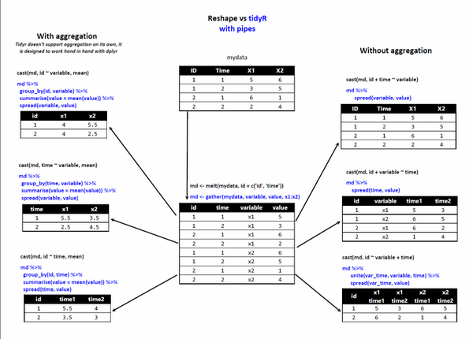
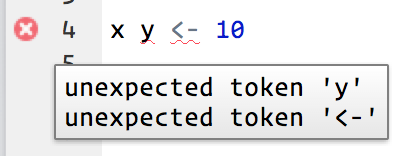

CHAPTER 6 DATA WRANGLING pp. 205-301
(6.1) THE “TIDYVERSE” p. 206
(6.1.1) Introduction p. 206
(6.1.2) The tidyverse Manifesto p. 208
(6.1.3) Tidy Data p. 209
(6.1.4) tidyr Package p. 229
(6.1.5) dplyr Package p. 258
(6.1.5.1) dplyr Basics p. 262
(6.1.5.2) Filter Rows with filter p. 263
(6.1.5.3) Arrange rows with arrange p. 273
(6.1.5.4) Select columns with select p. 275
(6.1.5.5) Add new variables with mutate p. 279
(6.1.5.6) Grouped summaries with summarise p. 285
(6.1.5.7) Grouped mutates (and filters) p. 293
(6.2) WORKFLOW: SCRIPTS p. 295
(6.2) R MARKDOWN p. 297
Ch. 6 requires the following R packages (many of them are contained in the tidyverse package)
tidyverse
ggplot2
reshape2
stringr
plyr
readxl
lubridate
tidyr
dplyr
nycflights13
magrittr
data.table
Ch. 6 Data sets to be downloaded from the Class Blackboard -> Course Materials folder
Weather FINAL.xlsx
Billboard._csv.txt
DATA WRANGLING
THE “TIDYVERSE”
We return to our data science process flow below as we begin to discuss Data Cleaning.
Prepare Data
Importing Data
Data Verification
Data Summarization
Data Visualization
Data Cleaning
Feature Selection
Data Transforms
Evaluate Algorithms
Resampling Methods
Evaluation Metrics
Spot-Check Algorithms
Model Selection
Improve Results
Algorithm Tuning
Ensemble Methods
Present Results
Finalize Model
Make New Predictions
Introduction
From https://www.tidyverse.org/
The tidyverse is an opinionated collection of R packages designed for data science. All packages share an underlying design philosophy, grammar, and data structures. It not only contains packages for data cleaning but also includes ggplot2 for visualization and a number of other tools that have more widespread utility.
The core tidyverse includes the packages that you're likely to use in everyday data analyses. As of tidyverse 1.2.0, the following packages are included in the core tidyverse:
ggplot2 is a system for declaratively creating graphics, based on The Grammar of Graphics. You provide the data, tell ggplot2 how to map variables to aesthetics, what graphical primitives to use, and it takes care of the details.
dplyr provides a grammar of data manipulation, providing a consistent set of verbs that solve the most common data manipulation challenges.
tidyr provides a set of functions that help you get to tidy data. Tidy data is data with a consistent form: in brief, every variable goes in a column, and every column is a variable.
readr provides a fast and friendly way to read rectangular data (like csv, tsv, and fwf). It is designed to flexibly parse many types of data found in the wild, while still cleanly failing when data unexpectedly changes.
purrr enhances R’s functional programming toolkit by providing a complete and consistent set of tools for working with functions and vectors. Once you master the basic concepts, purrr allows you to replace many for loops with code that is easier to write and more expressive.
tibble is a modern re-imagining of the data frame, keeping what time has proven to be effective, and throwing out what it has not. Tibbles are data.frames that are lazy and surly: they do less and complain more forcing you to confront problems earlier, typically leading to cleaner, more expressive code.
stringr provides a cohesive set of functions designed to make working with strings as easy as possible. It is built on top of stringi, which uses the ICU C library to provide fast, correct implementations of common string manipulations.
forcats provides a suite of useful tools that solve common problems with factors. R uses factors to handle categorical variables, variables that have a fixed and known set of possible values.
The tidyverse also includes many other packages with more specialised usage. They are not loaded automatically with library(tidyverse) so you’ll need to load each one with its own call to library().
As well as readr, for reading flat files, the tidyverse includes:
There are a handful of other packages that are not in the tidyverse, but are tidyverse-adjacent. They are very useful for importing data from other sources:
jsonlite for JSON
xml2 for XML
httr for web APIs
rvest for web scraping
DBI for relational databases. To connect to a specific database, you’ll need to pair DBI with a specific backend like RSQLite, RPostgres, or odbc. Learn more at https://db.rstudio.com/.
Wrangle
In addition to tidyr, and dplyr, there are five packages (including stringr and forcats) which are designed to work with specific types of data:
lubridate for dates and date-times.
hms for time-of-day values.
blob for storing blob (binary) data.
Program
In addition to purrr, which provides very consistent and natural methods for iterating on R objects, there are three tidyverse packages that help with general programming challenges:
rlang provides tools to work with core language features of R and the tidyverse
magrittr provides the pipe, %>% used throughout the tidyverse. It also provide a number of more specialised piping operators (like %$% and %<>%) that can be useful in other places.
glue provides an alternative to paste() that makes it easier to combine data and strings.
reshape2 is another useful package and share some functionality with tidyr
The tidyverse Manifesto
This document lays out the consistent principles that unify the packages in the tidyverse. The goal of these principles is to provide a uniform interface so that tidyverse packages work together naturally, and once you’ve mastered one, you have a head start on mastering the others.
“This is my first attempt at writing down these principles. That means that this manifesto is both aspirational and likely to change heavily in the future. Currently no packages precisely meet the design goals, and while the underlying ideas are stable, I expect their expression in prose will change substantially as I struggle to make explicit my process and thinking.
There are many other excellent packages that are not part of the tidyverse, because they are designed with a different set of underlying principles. This doesn’t make them better or worse, just different. In other words, the complement to the tidyverse is not the messyverse, but many other universes of interrelated packages.
There are four basic principles to a tidy API:
Reuse existing data structures.
Compose simple functions with the pipe.
Embrace functional programming.
Design for humans.
Reuse existing data structures
Where possible, re-use existing data structures, rather than creating custom data structures for your own package. Generally, I think it’s better to prefer common existing data structures over custom data structures, even if slightly ill-fitting.
Many R packages (e.g. ggplot2, dplyr, tidyr) work with rectangular datasets made up of observations and variables. If this is true for your package, work with data in either a data frame or tibble. Assume the data is tidy, with variables in the columns, and observations in the rows.
Some packages work at a lower level, focussing on a single type of variable. For example, stringr for strings, lubridate for date/times, and forcats for factors. Generally prefer existing base R vector types, but when this not possible, create your own using an S3 class built on top of an atomic vector or list.
If you need “non-standard scoping”, where you refer to variables inside a data frame as if they are in the global environment, prefer formulas over non-standard evaluation.
Compose simple functions with the pipe
No matter how complex and polished the individual operations are, it is often the quality of the glue that most directly determines the power of the system. - Hal Abelson
A powerful strategy for solving complex problems is to combine many simple pieces. Each piece should be easily understood in isolation, and have a standard way to combine with other pieces. In R, this strategy plays out by composing single functions with the pipe. The pipe, %>%, is a common composition tool that works across all packages.
Some things to bear in mind when writing functions:
Strive to keep functions as simple as possible (but no simpler!). Generally, each function should do one thing well, and you should be able to describe the purpose of the function in one sentence.
Avoid mixing side-effects with transformations. Ensure each function either returns an object, or has a side-effect. Don’t do both. (This is a slight simplification: functions called primarily for their side-effects should return the primary input invisibly so that they can still be combined in a pipeline.)
Function names should be verbs. The exception is when many functions use the same verb (typically something like “modify”, or “add”, or “compute”). In that case, avoid duplicating the common verb, and instead focus on the noun. A good example of this is ggplot2: almost every function adds something to an existing plot.
An advantage of a pipeable API is that it is not compulsory: if you do not like using the pipe, you can compose functions in whatever way you prepare. Compare this to an operator-overloading approach (such as the + in ggplot2), or an object composition approach (such as the ... approach in httr).
Embrace functional programming
R is a functional programming language; embrace it, don’t fight it. If you’re familiar with an object-oriented language like Python or C#, this is going to take some adjustment. But in the long run you will be much better off working with the language rather than fighting it.
Generally, this means you should favour:
Immutable objects and copy-on-modify semantics. This makes your code easier to reason about.
The generic functions provided by S3 and S4. These work very naturally inside a pipe. If you do need mutable state, try to make it an internal implementation detail, rather than exposing it to the user.
Tools that abstract over for-loops, like the apply family of functions or the map functions in purrr.
Design for humans
Programs must be written for people to read, and only incidentally for machines to execute. - Hal Abelson
Design your API (application programming interface) primarily so that it is easy to use by humans. Computer efficiency is a secondary concern because the bottleneck in most data analysis is thinking time, not computing time.
Invest time in naming your functions. Evocative function names make your API easier to use and remember.
Favour explicit, lengthy names, over short, implicit, names. Save the shortest names for the most important operations.
Think about how autocomplete can also make an API that’s easy to write. Make sure that function families are identified by a common prefix, not a common suffix. This makes autocomplete more helpful, as you can jog your memory with the prompts. For smaller packages, this may mean that every function has a common prefix (e.g. stringr, xml2, rvest).”
Tidy Data
Hadley Wickham also wrote a seminal article in the Journal of Statistical Software, August 2014, Vol, 59, Issue 10 entitled Tidy Data which can be obtained at https://www.jstatsoft.org/article/view/v059i10. The abstract of this paper is as follows (bold and highlight added)
“A huge amount of effort is spent cleaning data to get it ready for analysis, but there has been little research on how to make data cleaning as easy and effective as possible. This paper tackles a small, but important, component of data cleaning: data tidying. Tidy datasets are easy to manipulate, model and visualize, and have a specifc structure: each variable is a column, each observation is a row, and each type of observational unit is a table. This framework makes it easy to tidy messy datasets because only a small set of tools are needed to deal with a wide range of un-tidy datasets. This structure also makes it easier to develop tidy tools for data analysis, tools that both input and output tidy datasets. The advantages of a consistent data structure and matching tools are demonstrated with a case study free from mundane data manipulation chores.”
In his Introduction, he writes
“It is often said that 80% of data analysis is spent on the process of cleaning and preparing the data (Dasu and Johnson 2003). Data preparation is not just a first step, but must be repeated many times over the course of analysis as new problems come to light or new data is collected. Despite the amount of time it takes, there has been surprisingly little research on how to clean data well. Part of the challenge is the breadth of activities it encompasses: from outlier checking, to date parsing, to missing value imputation. To get a handle on the problem, this paper focuses on a small, but important, aspect of data cleaning that I call data tidying: structuring datasets to facilitate analysis.
The principles of tidy data provide a standard way to organize data values within a dataset. A standard makes initial data cleaning easier because you do not need to start from scratch and reinvent the wheel every time. The tidy data standard has been designed to facilitate initial exploration and analysis of the data, and to simplify the development of data analysistools that work well together. Current tools often require translation. You have to spend time munging the output from one tool so you can input it into another. Tidy datasets and tidy tools work hand in hand to make data analysis easier, allowing you to focus on the interesting domain problem, not on the uninteresting logistics of data.”
In Section 2 of the paper he writes:
“Like families, tidy datasets are all alike but every messy dataset is messy in its own way. Tidy datasets provide a standardized way to link the structure of a dataset (its physical layout) with its semantics (its meaning). In this section, I will provide some standard vocabulary for describing the structure and semantics of a dataset, and then use those definitions to define tidy data.”
In Section 2.1 Data structure he writes
“Most statistical datasets are rectangular tables made up of rows and columns. The columns are almost always labeled and the rows are sometimes labeled. Table 1 (below) provides some data about an imaginary experiment in a format commonly seen in the wild. The table has two columns and three rows, and both rows and columns are labeled. There are many ways to structure the same underlying data. Table 2 (below) shows the same data as Table 1, but the rows and columns have been transposed. The data is the same, but the layout is different. Our vocabulary of rows and columns is simply not rich enough to describe why the two tables represent the same data. In addition to appearance, we need a way to describe the underlying semantics, or meaning, of the values displayed in tables.” Both Tables 1 and 2 below represent wide-format data where there is a column for one of the variables (either treatment or person).
library("reshape2")
set.seed(1014)
preg2 <- matrix(c(NA, sample(20, 5)), ncol = 2, byrow = TRUE)
colnames(preg2) <- paste0("treatment", c("a", "b"))
rownames(preg2) <- c("John Smith", "Jane Doe", "Mary Johnson")
preg2
# TABLE 1 Typical presentation data
treatmenta treatmentb
John Smith NA 2
Jane Doe 11 5
Mary Johnson 18 6
(preg3 <- t(preg2))
# TABLE 2 Same data as above but row/column transposed
John Smith Jane Doe Mary Johnson
treatmenta NA 11 18
treatmentb 2 5 6
In Section 2.2 Data semantics he states
“A dataset is a collection of values, usually either numbers (if quantitative) or strings (if qualitative). Values are organized in two ways. Every value belongs to a variable and an observation. A variable contains all values that measure the same underlying attribute (like height, temperature, duration) across units. An observation contains all values measured on the same unit (like a person, or a day, or a race) across attributes.
Table 3 (below) reorganizes Table 1 to make the values, variables and observations more clear. The dataset contains 18 values representing three variables and six observations. Note that the variables are in columns and the observations in the corresponding rows. The variables in this example are:
1. person, with three possible values (John Smith, Mary Johnson, and Jane Doe)
2. treatment, with two possible values (a and b)
3. result, with five or six values depending on how you think of the missing value ( -, 16, 3, 2, 11, 1).
pregm <- melt(preg2, id = "name")
names(pregm) <- c("name", "trt", "result")
pregm$trt <- gsub("treatment", "", pregm$trt)
pregm
# TABLE 3 tidy version
name trt result
1 John Smith a NA
2 Jane Doe a 11
3 Mary Johnson a 18
4 John Smith b 2
5 Jane Doe b 5
6 Mary Johnson b 6
str(pregm)
'data.frame': 6 obs. of 3 variables:
$ name : Factor w/ 3 levels "John Smith","Jane Doe",..: 1 2 3 1 2 3
$ trt : chr "a" "a" "a" "b" ...
$ result: int NA 16 3 2 11 1
summary(pregm)
name trt result
John Smith :2 Length:6 Min. : 1.0
Jane Doe :2 Class :character 1st Qu.: 2.0
Mary Johnson:2 Mode :character Median : 3.0
Mean : 6.6
3rd Qu.:11.0
Max. :16.0
NA's :1
This experimental design presentation tells us more about the structure of the observations. In this experiment, every combination of person and treatment was measured, a completely crossed design. The experimental design also determines whether or not missing values can be safely dropped. In this experiment, the missing value represents an observation that should have been made, but was not, so it is important to keep it. Structural missing values, which represent measurements that cannot be made (e.g., the count of pregnant males) can be safely removed.
In Section 2.3 Tidy data he states
“Tidy data is a standard way of mapping the meaning of a dataset to its structure. A dataset is messy or tidy depending on how rows, columns and tables are matched up with observations, variables and types. In tidy data:
Each variable forms a column.
Each observation forms a row.
Each type of observational unit forms a table.
…
Table 3 above is the tidy version of Table 1. Each row represents an observation, the result of one treatment on one person, and each column is a variable.
Tidy data makes it easy for an analyst or a computer to extract needed variables because it provides a standard way of structuring a dataset. Compare Table 3 to Table 1: in Table 1 you need to use different strategies to extract different variables. This slows analysis and invites errors. If you consider how many data analysis operations involve all of the values in a variable (every aggregation function), you can see how important it is to extract these values in a simple, standard way. Tidy data is particularly well suited for vectorized programming languages like R because the layout ensures that values of different variables from the same observation are always paired.
While the order of variables and observations does not affect analysis, a good ordering makes it easier to scan the raw values. One way of organizing variables is by their role in the analysis: are values fixed by the design of the data collection, or are they measured during the course of the experiment? Fixed variables describe the experimental design and are known in advance. Computer scientists often call fixed variables dimensions, and statisticians usually denote them with subscripts on random variables. Measured variables are what we actually measure in the study. Fixed variables should come first, followed by measured variables, each ordered so that related variables are contiguous. Rows can then be ordered by the first variable, breaking ties with the second and subsequent (fixed) variables. This is the convention adopted by all tabular displays in this paper.”
In general here is what tidy data looks like (from http://www.sthda.com/english/wiki/tidyr-crucial-step-reshaping-data-with-r-for-easier-analyses)
For a given dataset, it is usually easy to figure out what are observations and what are variables, but it is surprisingly difficult to precisely define variables and observations in general. For example, if the columns in the Table 1 were height and weight we would have been happy to call them variables. If the columns were height and width, it would be less clear cut, as we might think of height and width as values of a dimension variable. If the columns were home phone and work phone, we could treat these as two variables, but in a fraud detection environment we might want variables phone number and number type because the use of one phone number for multiple people might suggest fraud. A general rule of thumb is that it is easier to describe functional relationships between variables (e.g., z is a linear combination of x and y, density is the ratio of weight to volume) than between rows, and it is easier to make comparisons between groups of observations (e.g., average of group a vs. average of group b) than between groups of columns.
In a given analysis, there may be multiple levels of observations. For example, in a trial of new allergy medication we might have three observational types: demographic data collected from each person (age, sex, race), medical data collected from each person on each day (number of sneezes, redness of eyes), and meteorological data collected on each day (temperature, pollen count).”
Below we see a figure of what is happening in some of the reshape2 functions which we will demonstrate shortly.
https://www.r-statistics.com/2012/01/aggregation-and-restructuring-data-from-r-in-action/
http://seananderson.ca/2013/10/19/reshape.html
So what does melt do – it takes wide-format data and melts it into long-format data. Wide data has a column for each variable, while long-format data has a column for possible variable types and a column for the values of those variables. Basically when you melt a dataset, you restructure it into a format where each measured variable is in its own row, along with the ID variables needed to uniquely identify it.
Here are the details of function melt when we have data in a data.frame (from https://cran.r-project.org/web/packages/reshape2/reshape2.pdf )
Description You need to tell melt which of your variables are id variables, and which are measured variables.
If you only supply one of id.vars and measure.vars, melt will assume the remainder of the variables in the data set belong to the other.
If you supply neither, melt will assume factor and character variables are id variables, and all others are measured.
melt(data, id.vars, measure.vars, variable.name = "variable", ..., na.rm = FALSE, value.name = "value", factorsAsStrings = TRUE)
data = data frame to melt id.vars vector of id variables. Can be integer (variable position) or string (variable name). If blank, will use all non-measured variables.
measure.vars = vector of measured variables. Can be integer (variable position) or string (variable name). If blank, will use all non id.vars
variable.name = name of variable used to store measured variable names
... = further arguments passed to or from other methods.
na.rm = should NA values be removed from the data set? This will convert explicit missings to implicit missings. Defaults to FALSE
value.name = name of variable used to store values
factorsAsStrings = controls whether factors are converted to character when melted as measure variables. When FALSE, coercion is forced if levels are not identical across the measure.vars. Defaults to TRUE
# library("reshape2")
Below is a wide data set.
airquality
Ozone Solar.R Wind Temp Month Day
1 41 190 7.4 67 5 1
2 36 118 8.0 72 5 2
3 12 149 12.6 74 5 3
4 18 313 11.5 62 5 4
5 NA NA 14.3 56 5 5
6 28 NA 14.9 66 5 6
7 23 299 8.6 65 5 7
8 19 99 13.8 59 5 8
9 8 19 20.1 61 5 9
10 NA 194 8.6 69 5 10
…
146 36 139 10.3 81 9 23
147 7 49 10.3 69 9 24
148 14 20 16.6 63 9 25
149 30 193 6.9 70 9 26
str(airquality)
'data.frame': 153 obs. of 6 variables:
$ Ozone : int 41 36 12 18 NA 28 23 19 8 NA ...
$ Solar.R: int 190 118 149 313 NA NA 299 99 19 194 ...
$ Wind : num 7.4 8 12.6 11.5 14.3 14.9 8.6 13.8 20.1 8.6 ...
$ Temp : int 67 72 74 62 56 66 65 59 61 69 ...
$ Month : int 5 5 5 5 5 5 5 5 5 5 ...
$ Day : int 1 2 3 4 5 6 7 8 9 10 ...
Description of dataset:
Daily air quality measurements in New York, May to September 1973.
A data frame with 154 observations on 6 variables.
|
[,1] |
Ozone |
numeric |
Ozone (ppb) |
|
[,2] |
Solar.R |
numeric |
Solar R (lang) |
|
[,3] |
Wind |
numeric |
Wind (mph) |
|
[,4] |
Temp |
numeric |
Temperature (degrees F) |
|
[,5] |
Month |
numeric |
Month (1--12) |
|
[,6] |
Day |
numeric |
Day of month (1--31) |
Details
Daily readings of the following air quality values for May 1, 1973 (a Tuesday) to September 30, 1973.
Ozone: Mean ozone in parts per billion from 1300 to 1500 hours at Roosevelt Island
Solar.R: Solar radiation in Langleys in the frequency band 4000–7700 Angstroms from 0800 to 1200 hours at Central Park
Wind: Average wind speed in miles per hour at 0700 and 1000 hours at LaGuardia Airport
Temp: Maximum daily temperature in degrees Fahrenheit at La Guardia Airport.
Source
The data were obtained from the New York State Department of Conservation (ozone data) and the National Weather Service (meteorological data).
References
Chambers, J. M., Cleveland, W. S., Kleiner, B. and Tukey, P. A. (1983) Graphical Methods for Data Analysis. Belmont, CA: Wadsworth.
Next we run melt with default values and look at the results
(aql <- melt(airquality))
No id variables; using all as measure variables
variable value
1 Ozone 41.0
2 Ozone 36.0
3 Ozone 12.0
4 Ozone 18.0
5 Ozone NA
6 Ozone 28.0
7 Ozone 23.0
8 Ozone 19.0
9 Ozone 8.0
10 Ozone NA
11 Ozone 7.0
str(aql)
'data.frame': 918 obs. of 2 variables:
$ variable: Factor w/ 6 levels "Ozone","Solar.R",..: 1 1 1 1 1 1 1 1 1 1 ...
$ value : num 41 36 12 18 NA 28 23 19 8 NA ...
In RStudio do the following to look at the entire dataset in the top left quadrant of your screen
View(aql)
We note that
(aql <- melt(airquality))
is equivalent to
(aql2 <- melt(airquality, id.vars = NULL, measure.vars = c(1:6),
variable.name = "variable", na.rm = FALSE, value.name = "value",
factorAsStrings = TRUE)
)
variable value
1 Ozone 41.0
2 Ozone 36.0
3 Ozone 12.0
4 Ozone 18.0
5 Ozone NA
6 Ozone 28.0
7 Ozone 23.0
8 Ozone 19.0
9 Ozone 8.0
10 Ozone NA
(aql3 <- melt(airquality, id.vars = NULL, measure.vars = c(1:4),
variable.name = "Measurement", na.rm = FALSE, value.name = "Reading",
factorAsStrings = TRUE)
)
Measurement Reading
1 Ozone 41.0
2 Ozone 36.0
3 Ozone 12.0
4 Ozone 18.0
5 Ozone NA
6 Ozone 28.0
7 Ozone 23.0
By default, melt has assumed that all columns with numeric values (all 6 of them) are variables with values, so variable now contains Ozone, Solar.R, Wind, Temp, Month and Day. Sometimes this is what you want.
But long-format data isn’t necessarily only two columns, maybe here we want to know the values of ozone, solar.r, wind, and temp for each Month and Day. We can do that with melt by telling it that we want Month and Day to be “ID variables”. ID variables are the variables that identify individual rows of data.
head(aql4 <- melt(airquality, id.vars = c("Month", "Day")))
or
head(aql4 <- melt(airquality, id.vars = c("Month", "Day"), measure.vars = c(1:4),
variable.name = "Measurement", na.rm = FALSE, value.name = "Reading",
factorAsStrings = TRUE)
)
Month Day Measurement Reading
1 5 1 Ozone 41
2 5 2 Ozone 36
3 5 3 Ozone 12
4 5 4 Ozone 18
5 5 5 Ozone NA
6 5 6 Ozone 28
str(aql4)
'data.frame': 612 obs. of 4 variables:
$ Month : int 5 5 5 5 5 5 5 5 5 5 ...
$ Day : int 1 2 3 4 5 6 7 8 9 10 ...
$ Measurement: Factor w/ 4 levels "Ozone","Solar.R",..: 1 1 1 1 1 1 1 1 1 1 ...
$ Reading : num 41 36 12 18 NA 28 23 19 8 NA ..
We have now added an additional column for each of the ID variables. So there are different levels of “longness”.
What about
head(aql5 <- melt(airquality, id.vars = c("Month"), measure.vars = c(1:4,6),
variable.name = "Measurement", na.rm = FALSE, value.name = "Reading",
factorAsStrings = TRUE)
)
Month Measurement Reading
1 5 Ozone 41
2 5 Ozone 36
3 5 Ozone 12
4 5 Ozone 18
5 5 Ozone NA
6 5 Ozone 28
Now day shows up under the Measurement column along with Ozone, Solar.R, Wind and Temp
It turns out that you need wide-format data for some types of data analysis and long-format data for others. In reality, you need long-format data much more often than wide-format data. For example, ggplot2 requires long-format data (technically tidy data), and most modelling functions (such as lm(), glm(), and gam()) require long-format data. But people often find it easier to record their data in wide format.
Whereas going from wide- to long-format data is pretty straightforward, going from long- to wide-format data can take a bit more thought. It usually involves some trial and error for all but the simplest cases. Let’s go through some examples.
In reshape2 there are multiple cast functions. Since you will most commonly work with data.frame objects, we’ll explore the dcast function. (There is also acast to return a vector, matrix, or array.) Basically the cast() function starts with melted data and reshapes it using a formula that you provide and an (optional) function used to aggregate the data.
Let’s take the long-format airquality data and cast it into some different wide formats. To start with, we’ll recover the original format we started with and compare the two.
dcast uses a formula to describe the shape of the data. The arguments on the left refer to the ID variables and the arguments on the right refer to the measured variables. Coming up with the right formula can take some trial and error at first. There are usually only so many ways you can write the formula. Below are the details to the dcast function
dcast(data, formula, fun.aggregate = NULL, ..., margins = NULL, subset = NULL,
fill = NULL, drop = TRUE, value.var = guess_value(data))
data = molten data frame, see melt.
formula = casting formula, see details for specifics.
fun.aggregate = aggregation function needed if variables do not identify a single observation for each output cell. Defaults to length (with a message) if needed but not specified.
... = further arguments are passed to aggregating function
margins = vector of variable names (can include "grand\_col" and "grand\_row") to compute margins for, or TRUE to compute all margins . Any variables that can not be margined over will be silently dropped.
subset = quoted expression used to subset data prior to reshaping, e.g. subset = .(variable=="length").
fill = value with which to fill in structural missings, defaults to value from applying fun.aggregate to 0 length vector
drop = should missing combinations dropped or kept?
value.var = name of column which stores values, see guess_value for default strategies to figure this out.
The cast formula has the following format: x_variable + x_2 ~ y_variable + y_2 ~ z_variable ~ ... The order of the variables makes a difference. The first varies slowest, and the last fastest.
There are a couple of special variables: "..." represents all other variables not used in the formula and "." represents no variable, so you can do formula = var1 ~ ..
Alternatively, you can supply a list of quoted expressions, in the form list(.(x_variable, x_2), .(y_variable, y_2), .(z)). The advantage of this form is that you can cast based on transformations of the variables: list(.(a + b), (c = round(c))).
See the documentation for . for more details and alternative formats. If the combination of variables you supply does not uniquely identify one row in the original data set, you will need to supply an aggregating function, fun.aggregate. This function should take a vector of numbers and return a single summary statistic
Here, we need to tell dcast that Month and Day are the ID variables (we want a column for each) and that variable describes the measured variables. Since there is only one remaining column, dcast will figure out that it contains the values themselves. We could explicitly declare this with value.var. (And in some cases it will be necessary to do so.)
aql <- melt(airquality, id.vars = c("Month", "Day"))
aqw <- dcast(aql, Month + Day ~ variable)
head(aqw)
Month Day Ozone Solar.R Wind Temp
1 5 1 41 190 7.4 67
2 5 2 36 118 8.0 72
3 5 3 12 149 12.6 74
4 5 4 18 313 11.5 62
5 5 5 NA NA 14.3 56
6 5 6 28 NA 14.9 66
And we have recovered our original airquality data.frame with re-ordered columns.
Now try
head(aql4)
Month Day Measurement Reading
1 5 1 Ozone 41
2 5 2 Ozone 36
3 5 3 Ozone 12
4 5 4 Ozone 18
5 5 5 Ozone NA
6 5 6 Ozone 28
head(aqw2 <- dcast(aql4, Month ~ Measurement, fun.aggregate = mean, na.rm=TRUE))
Month Ozone Solar.R Wind Temp
1 5 23.61538 181.2963 11.622581 65.54839
2 6 29.44444 190.1667 10.266667 79.10000
3 7 59.11538 216.4839 8.941935 83.90323
4 8 59.96154 171.8571 8.793548 83.96774
5 9 31.44828 167.4333 10.180000 76.90000
Month Ozone Solar.R Wind Temp
1 5 22.22445 115.07550 3.531450 6.854870
2 6 18.20790 92.88298 3.769234 6.598589
3 7 31.63584 80.56834 3.035981 4.315513
4 8 39.68121 76.83494 3.225930 6.585256
5 9 24.14182 79.11828 3.461254 8.355671
To see what has just happened look at the figure below which is an illustration of the dcast function.
The blue shading indicates ID variables that we want to represent individual rows.
The red shading represents variable names that we want to swing into column names.
The grey shading represents the data values that we want to fill in the cells with.
One confusing “mistake” you might make is casting a dataset in which there is more than one value per data cell. For example, this time we won’t include Day as an ID variable:
aqw2 <- dcast(aql, Month ~ variable)
head(aqw2)
Month Ozone Solar.R Wind Temp
1 5 31 31 31 31
2 6 30 30 30 30
3 7 31 31 31 31
4 8 31 31 31 31
5 9 30 30 30 30
If you look at the output, the cells are filled with the number of data rows for each month-climate combination. The numbers we’re seeing are the number of days recorded in each month. When you cast your data and there are multiple values per cell, you also need to tell dcast how to aggregate the data. For example, maybe you want to take the mean, or the median, or the sum. Let’s try the last example, but this time we’ll take the mean of the climate values.
We’ll also pass the option na.rm = TRUE through the ... argument to remove NA values. (The ... let’s you pass on additional arguments to your fun.aggregate function, in this case the mean.)
Now try
head(aql4)
Month Day Measurement Reading
1 5 1 Ozone 41
2 5 2 Ozone 36
3 5 3 Ozone 12
4 5 4 Ozone 18
5 5 5 Ozone NA
6 5 6 Ozone 28
(aqw3 <- dcast(aql4, Month ~ Measurement, fun.aggregate = mean, na.rm = TRUE))
Month Ozone Solar.R Wind Temp
1 5 23.61538 181.2963 11.622581 65.54839
2 6 29.44444 190.1667 10.266667 79.10000
3 7 59.11538 216.4839 8.941935 83.90323
4 8 59.96154 171.8571 8.793548 83.96774
5 9 31.44828 167.4333 10.180000 76.90000
options(digits = 2)
head(aqw3)
Month Ozone Solar.R Wind Temp
1 5 24 181 11.6 66
2 6 29 190 10.3 79
3 7 59 216 8.9 84
4 8 60 172 8.8 84
5 9 31 167 10.2 77
(aqw3 <- dcast(aql4, Month ~ Measurement, fun.aggregate = sd, na.rm = TRUE))
Month Ozone Solar.R Wind Temp
1 5 22 115 3.5 6.9
2 6 18 93 3.8 6.6
3 7 32 81 3.0 4.3
4 8 40 77 3.2 6.6
5 9 24 79 3.5 8.4
There is a more efficient way to execute functions using dcast if we convert our data.frame to a data.table. A data.table is basically an enhanced form of a data.frame and provides advanced subsetting features, but we will focus on just one feature here. For more information go to https://cran.r-project.org/web/packages/data.table/vignettes/datatable-intro.html
install.packages("data.table")
library("data.table")
Convert our previous data.frame to a data.table
(aql4.dt <- as.data.table(aql4))
Month Day Measurement Reading
1: 5 1 Ozone 41
2: 5 2 Ozone 36
3: 5 3 Ozone 12
4: 5 4 Ozone 18
5: 5 5 Ozone NA
---
608: 9 26 Temp 70
609: 9 27 Temp 77
610: 9 28 Temp 75
611: 9 29 Temp 76
612: 9 30 Temp 68
(aqw4 <- dcast(aql4.dt, Month ~ Measurement, fun.aggregate = list(mean,median,sd),
na.rm = TRUE))
Month Reading_mean_Ozone Reading_mean_Solar.R Reading_mean_Wind Reading_mean_Temp Reading_median_Ozone
1: 5 23.61538 181.2963 11.622581 65.54839 18
2: 6 29.44444 190.1667 10.266667 79.10000 23
3: 7 59.11538 216.4839 8.941935 83.90323 60
4: 8 59.96154 171.8571 8.793548 83.96774 52
5: 9 31.44828 167.4333 10.180000 76.90000 23
Reading_median_Solar.R Reading_median_Wind Reading_median_Temp Reading_sd_Ozone Reading_sd_Solar.R
1: 194.0 11.5 66 22.22445 115.07550
2: 188.5 9.7 78 18.20790 92.88298
3: 253.0 8.6 84 31.63584 80.56834
4: 197.5 8.6 82 39.68121 76.83494
5: 192.0 10.3 76 24.14182 79.11828
Reading_sd_Wind Reading_sd_Temp
1: 3.531450 6.854870
2: 3.769234 6.598589
3: 3.035981 4.315513
4: 3.225930 6.585256
5: 3.461254 8.355671
>
Unlike melt, there are some other fancy things you can do with dcast that I’m not covering here. It’s worth reading the help file ?dcast. For example, you can compute summaries for rows and columns, subset the columns, and fill in missing cells in one call to dcast.
melt Exercises
Use the mtcars dataset which is in long form
mtcars
mpg cyl disp hp drat wt qsec vs am gear carb
Mazda RX4 21 6 160 110 3.9 2.6 16 0 1 4 4
Mazda RX4 Wag 21 6 160 110 3.9 2.9 17 0 1 4 4
Datsun 710 23 4 108 93 3.8 2.3 19 1 1 4 1
Hornet 4 Drive 21 6 258 110 3.1 3.2 19 1 0 3 1
Hornet Sportabout 19 8 360 175 3.1 3.4 17 0 0 3 2
Valiant 18 6 225 105 2.8 3.5 20 1 0 3 1
Duster 360 14 8 360 245 3.2 3.6 16 0 0 3 4
Merc 240D 24 4 147 62 3.7 3.2 20 1 0 4 2
Merc 230 23 4 141 95 3.9 3.1 23 1 0 4 2
Merc 280 19 6 168 123 3.9 3.4 18 1 0 4 4
Merc 280C 18 6 168 123 3.9 3.4 19 1 0 4 4
Merc 450SE 16 8 276 180 3.1 4.1 17 0 0 3 3
Merc 450SL 17 8 276 180 3.1 3.7 18 0 0 3 3
Merc 450SLC 15 8 276 180 3.1 3.8 18 0 0 3 3
Cadillac Fleetwood 10 8 472 205 2.9 5.2 18 0 0 3 4
Lincoln Continental 10 8 460 215 3.0 5.4 18 0 0 3 4
Chrysler Imperial 15 8 440 230 3.2 5.3 17 0 0 3 4
Fiat 128 32 4 79 66 4.1 2.2 19 1 1 4 1
Honda Civic 30 4 76 52 4.9 1.6 19 1 1 4 2
Toyota Corolla 34 4 71 65 4.2 1.8 20 1 1 4 1
Toyota Corona 22 4 120 97 3.7 2.5 20 1 0 3 1
Dodge Challenger 16 8 318 150 2.8 3.5 17 0 0 3 2
AMC Javelin 15 8 304 150 3.1 3.4 17 0 0 3 2
Camaro Z28 13 8 350 245 3.7 3.8 15 0 0 3 4
Pontiac Firebird 19 8 400 175 3.1 3.8 17 0 0 3 2
Fiat X1-9 27 4 79 66 4.1 1.9 19 1 1 4 1
Porsche 914-2 26 4 120 91 4.4 2.1 17 0 1 5 2
Lotus Europa 30 4 95 113 3.8 1.5 17 1 1 5 2
Ford Pantera L 16 8 351 264 4.2 3.2 14 0 1 5 4
Ferrari Dino 20 6 145 175 3.6 2.8 16 0 1 5 6
Maserati Bora 15 8 301 335 3.5 3.6 15 0 1 5 8
Volvo 142E 21 4 121 109 4.1 2.8 19 1 1 4 2
Details about the dataset from https://stat.ethz.ch/R-manual/R-devel/library/datasets/html/mtcars.html
Description
The data was extracted from the 1974 Motor Trend US magazine, and comprises fuel consumption and 10 aspects of automobile design and performance for 32 automobiles (1973–74 models).
A data frame with 32 observations on 11 variables.
|
mpg |
|
|
cyl |
|
|
disp |
|
|
hp |
|
|
drat |
|
|
wt |
|
|
qsec |
|
|
vs |
|
|
am |
|
|
gear |
|
|
carb |
|
Source
Henderson and Velleman (1981), Building multiple regression models interactively. Biometrics, 37, 391–411.
First create a new column to a copy of mtcars for the car model names
mtcars2 <- mtcars
mtcars2$model <- rownames(mtcars2)
mtcars2
mpg cyl disp hp drat wt qsec vs am gear carb model
Mazda RX4 21 6 160 110 3.9 2.6 16 0 1 4 4 Mazda RX4
Mazda RX4 Wag 21 6 160 110 3.9 2.9 17 0 1 4 4 Mazda RX4 Wag
Datsun 710 23 4 108 93 3.8 2.3 19 1 1 4 1 Datsun 710
Hornet 4 Drive 21 6 258 110 3.1 3.2 19 1 0 3 1 Hornet 4 Drive
Hornet Sportabout 19 8 360 175 3.1 3.4 17 0 0 3 2 Hornet Sportabout
Valiant 18 6 225 105 2.8 3.5 20 1 0 3 1 Valiant
Duster 360 14 8 360 245 3.2 3.6 16 0 0 3 4 Duster 360
Merc 240D 24 4 147 62 3.7 3.2 20 1 0 4 2 Merc 240D
Merc 230 23 4 141 95 3.9 3.1 23 1 0 4 2 Merc 230
Merc 280 19 6 168 123 3.9 3.4 18 1 0 4 4 Merc 280
Merc 280C 18 6 168 123 3.9 3.4 19 1 0 4 4 Merc 280C
Merc 450SE 16 8 276 180 3.1 4.1 17 0 0 3 3 Merc 450SE
Merc 450SL 17 8 276 180 3.1 3.7 18 0 0 3 3 Merc 450SL
Merc 450SLC 15 8 276 180 3.1 3.8 18 0 0 3 3 Merc 450SLC
Cadillac Fleetwood 10 8 472 205 2.9 5.2 18 0 0 3 4 Cadillac Fleetwood
Lincoln Continental 10 8 460 215 3.0 5.4 18 0 0 3 4 Lincoln Continental
Chrysler Imperial 15 8 440 230 3.2 5.3 17 0 0 3 4 Chrysler Imperial
Fiat 128 32 4 79 66 4.1 2.2 19 1 1 4 1 Fiat 128
Honda Civic 30 4 76 52 4.9 1.6 19 1 1 4 2 Honda Civic
Toyota Corolla 34 4 71 65 4.2 1.8 20 1 1 4 1 Toyota Corolla
Toyota Corona 22 4 120 97 3.7 2.5 20 1 0 3 1 Toyota Corona
Dodge Challenger 16 8 318 150 2.8 3.5 17 0 0 3 2 Dodge Challenger
AMC Javelin 15 8 304 150 3.1 3.4 17 0 0 3 2 AMC Javelin
Camaro Z28 13 8 350 245 3.7 3.8 15 0 0 3 4 Camaro Z28
Pontiac Firebird 19 8 400 175 3.1 3.8 17 0 0 3 2 Pontiac Firebird
Fiat X1-9 27 4 79 66 4.1 1.9 19 1 1 4 1 Fiat X1-9
Porsche 914-2 26 4 120 91 4.4 2.1 17 0 1 5 2 Porsche 914-2
Lotus Europa 30 4 95 113 3.8 1.5 17 1 1 5 2 Lotus Europa
Ford Pantera L 16 8 351 264 4.2 3.2 14 0 1 5 4 Ford Pantera L
Ferrari Dino 20 6 145 175 3.6 2.8 16 0 1 5 6 Ferrari Dino
Maserati Bora 15 8 301 335 3.5 3.6 15 0 1 5 8 Maserati Bora
Volvo 142E 21 4 121 109 4.1 2.8 19 1 1 4 2 Volvo 142E
Melt the mtcars dataset using model and cyl as your id variables, name as mlt1 and print out your new data.frame. Write out in long form with all the variables identified and the short default form and make sure they are identical.
Repeat the previous bullet and rename variable as car.Var and value as car.Val and name as mlt2. Write out in long form with all the variables identified and the short default form and make sure they are identical.
View(mlt2) and make observations on how the data is formatted.
Repeat the second bullet using cyl and gear as your id variables, name it mlt3 and print it out. Compare the first 2 rows – what do you see?
Repeat the previous bullet and add a third id variable disp, name it mlt4 and print it out and View. Did we eliminate any duplicate rows (try sorting in View)
What variable will eliminate the duplication (go back to the original data.frame)
Cast mlt2 back to the original fomat of mtcars and name it cast1 (note your index colum on the far left will be numbers and not names)
Cast mlt2 in order to obtain the mean of each variable by cyl and name it cast2. Note we must first eliminate the model variable from mlt2 (call it mlt2a) since it is not numeric. What trend do you see with respect to mpg?
Using the second answer from the previous bullet melt and cast mtcars in order to deteremine the mean of each variable by am
Repeat the previous bullet and determine by median of all variables by the combination of cyl and gear
ANSWERS
(mlt1 <- melt(mtcars2, id.vars = c('model', 'cyl')))
model cyl variable value
1 Mazda RX4 6 mpg 21.0
2 Mazda RX4 Wag 6 mpg 21.0
3 Datsun 710 4 mpg 22.8
4 Hornet 4 Drive 6 mpg 21.4
5 Hornet Sportabout 8 mpg 18.7
6 Valiant 6 mpg 18.1
7 Duster 360 8 mpg 14.3
8 Merc 240D 4 mpg 24.4
(mlt2 <- melt(mtcars2, id.vars = c('model', 'cyl'), variable.name = 'car.Var', value.name = 'car.Val'))
model cyl car.Var car.Val
1 Mazda RX4 6 mpg 21.0
2 Mazda RX4 Wag 6 mpg 21.0
3 Datsun 710 4 mpg 22.8
4 Hornet 4 Drive 6 mpg 21.4
5 Hornet Sportabout 8 mpg 18.7
6 Valiant 6 mpg 18.1
7 Duster 360 8 mpg 14.3
8 Merc 240D 4 mpg 24.4
(mlt3 <- melt(mtcars2, id.vars = c('cyl', 'gear'), variable.name = 'car.Var', value.name = 'car.Val'))
cyl gear car.Var car.Val
1 6 4 mpg 21
2 6 4 mpg 21
3 4 4 mpg 22.8
4 6 3 mpg 21.4
5 8 3 mpg 18.7
6 6 3 mpg 18.1
Generally, it is a good idea to use a combination of variables which can uniquely identify each data point as id variables. Hence, it is not a good idea to use cyl and gear since there are multiple data points which have the same value for the two. This will lead to problems when trying to convert the data back to wide format.
(mlt4 <- melt(mtcars2, id.vars = c('cyl', 'gear', 'disp'), variable.name = 'car.Var', value.name = 'car.Val'))
cyl gear disp car.Var car.Val
1 6 4 160 mpg 21
2 6 4 160 mpg 21
3 4 4 108 mpg 22.8
4 6 3 258 mpg 21.4
5 8 3 360 mpg 18.7
6 6 3 225 mpg 18.1
7 8 3 360 mpg 14.3
8 4 4 147 mpg 24.4
9 4 4 141 mpg 22.8
10 6 4 168 mpg 19.2
11 6 4 168 mpg 17.8
12 8 3 276 mpg 16.4
13 8 3 276 mpg 17.3
14 8 3 276 mpg 15.2
15 8 3 472 mpg 10.4
16 8 3 460 mpg 10.4
Use wt to eliminate duplications
(cast1 <- dcast(mlt2, model + cyl ~ car.Var))
model cyl mpg disp hp drat wt qsec vs am gear carb
1 AMC Javelin 8 15 304 150 3.1 3.4 17 0 0 3 2
2 Cadillac Fleetwood 8 10 472 205 2.9 5.2 18 0 0 3 4
3 Camaro Z28 8 13 350 245 3.7 3.8 15 0 0 3 4
4 Chrysler Imperial 8 15 440 230 3.2 5.3 17 0 0 3 4
5 Datsun 710 4 23 108 93 3.8 2.3 19 1 1 4 1
6 Dodge Challenger 8 16 318 150 2.8 3.5 17 0 0 3 2
7 Duster 360 8 14 360 245 3.2 3.6 16 0 0 3 4
8 Ferrari Dino 6 20 145 175 3.6 2.8 16 0 1 5 6
9 Fiat 128 4 32 79 66 4.1 2.2 19 1 1 4 1
10 Fiat X1-9 4 27 79 66 4.1 1.9 19 1 1 4 1
11 Ford Pantera L 8 16 351 264 4.2 3.2 14 0 1 5 4
12 Honda Civic 4 30 76 52 4.9 1.6 19 1 1 4 2
13 Hornet 4 Drive 6 21 258 110 3.1 3.2 19 1 0 3 1
14 Hornet Sportabout 8 19 360 175 3.1 3.4 17 0 0 3 2
15 Lincoln Continental 8 10 460 215 3.0 5.4 18 0 0 3 4
16 Lotus Europa 4 30 95 113 3.8 1.5 17 1 1 5 2
17 Maserati Bora 8 15 301 335 3.5 3.6 15 0 1 5 8
18 Mazda RX4 6 21 160 110 3.9 2.6 16 0 1 4 4
19 Mazda RX4 Wag 6 21 160 110 3.9 2.9 17 0 1 4 4
20 Merc 230 4 23 141 95 3.9 3.1 23 1 0 4 2
21 Merc 240D 4 24 147 62 3.7 3.2 20 1 0 4 2
22 Merc 280 6 19 168 123 3.9 3.4 18 1 0 4 4
23 Merc 280C 6 18 168 123 3.9 3.4 19 1 0 4 4
24 Merc 450SE 8 16 276 180 3.1 4.1 17 0 0 3 3
25 Merc 450SL 8 17 276 180 3.1 3.7 18 0 0 3 3
26 Merc 450SLC 8 15 276 180 3.1 3.8 18 0 0 3 3
27 Pontiac Firebird 8 19 400 175 3.1 3.8 17 0 0 3 2
28 Porsche 914-2 4 26 120 91 4.4 2.1 17 0 1 5 2
29 Toyota Corolla 4 34 71 65 4.2 1.8 20 1 1 4 1
30 Toyota Corona 4 22 120 97 3.7 2.5 20 1 0 3 1
31 Valiant 6 18 225 105 2.8 3.5 20 1 0 3 1
32 Volvo 142E 4 21 121 109 4.1 2.8 19 1 1 4 2
(mlt2a <- mlt2[-1])
(cast2 <- dcast(mlt2, cyl ~ car.Var, fun.aggregate = mean, na.rm = TRUE))
cyl mpg disp hp drat wt qsec vs am gear carb
1 4 27 105 83 4.1 2.3 19 0.91 0.73 4.1 1.5
2 6 20 183 122 3.6 3.1 18 0.57 0.43 3.9 3.4
3 8 15 353 209 3.2 4.0 17 0.00 0.14 3.3 3.5
Or
(mlt2b <- melt(mtcars, id.vars = 'cyl', variable.name = 'car.Var',
value.name = 'car.Val'))
cyl car.Var car.Val
1 6 mpg 21.0
2 6 mpg 21.0
3 4 mpg 22.8
4 6 mpg 21.4
5 8 mpg 18.7
(cast2b <- dcast(mlt2b, cyl ~ car.Var, fun.aggregate = mean, na.rm = TRUE))
cyl mpg disp hp drat wt qsec vs am gear carb
1 4 27 105 83 4.1 2.3 19 0.91 0.73 4.1 1.5
2 6 20 183 122 3.6 3.1 18 0.57 0.43 3.9 3.4
3 8 15 353 209 3.2 4.0 17 0.00 0.14 3.3 3.5
(mltX <- melt(mtcars, id.vars = 'am', variable.name = 'car.Var',
value.name = 'car.Val'))
(castX <- dcast(mltX, am ~ car.Var, fun.aggregate = median, na.rm = TRUE))
am mpg cyl disp hp drat wt qsec vs gear carb
1 0 17 8 276 175 3.1 3.5 18 0 3 3
2 1 23 4 120 109 4.1 2.3 17 1 4 2
(mltY <- melt(mtcars, id.vars = c('cyl', 'gear'), variable.name = 'car.Var',
value.name = 'car.Val'))
(castY <- dcast(mltY, cyl + gear ~ car.Var, fun.aggregate = median, na.rm = TRUE))
cyl gear mpg disp hp drat wt qsec vs am carb
1 4 3 22 120 97 3.7 2.5 20 1.0 0.0 1.0
2 4 4 26 94 66 4.1 2.3 19 1.0 1.0 1.5
3 4 5 28 108 102 4.1 1.8 17 0.5 1.0 2.0
4 6 3 20 242 108 2.9 3.3 20 1.0 0.0 1.0
5 6 4 20 164 116 3.9 3.2 18 0.5 0.5 4.0
6 6 5 20 145 175 3.6 2.8 16 0.0 1.0 6.0
7 8 3 15 355 180 3.1 3.8 17 0.0 0.0 3.0
8 8 5 15 326 300 3.9 3.4 15 0.0 1.0 6.0
tidyr Package
https://www.r-bloggers.com/how-to-reshape-data-in-r-tidyr-vs-reshape2/
tidyr and reshape2 functions performmany similar operations, but reshape2’s functions can do data aggregation that is not possible with tidyr. Indeed, tidyr’s aim is data tidying while reshape2 has the wider purpose of data reshaping and aggregating. It follows that tidyr syntax is easier to understand and to work with, but its functionalities are limited. Therefore, one can use tidyr gather() and separate()functions to quickly tidy our data and reshape2 dcast() to aggregate them. The below figures compares tidyr and reshape2 – from https://twitter.com/tonyfujs/status/497147961340866561

https://blog.rstudio.com/2014/07/22/introducing-tidyr/
tidyr is a package that makes it easy to “tidy” your data. Tidy data is data that’s easy to work with: it’s easy to munge (with dplyr), visualise (with ggplot2 or ggvis) and model (with R’s hundreds of modelling packages). The two most important properties of tidy data are:
Each column is a variable.
Each row is an observation.
Arranging your data in this way makes it easier to work with because you have a consistent way of referring to variables (as column names) and observations (as row indices). When use tidy data and tidy tools, you spend less time worrying about how to feed the output from one function into the input of another, and more time answering your questions about the data.
To tidy messy data, you first identify the variables in your dataset, then use the tools provided by tidyr to move them into columns. tidyr provides three main functions for tidying your messy data: gather(), separate() and spread().
See figure below from http://www.sthda.com/english/wiki/tidyr-crucial-step-reshaping-data-with-r-for-easier-analyses

gather() takes multiple columns, and gathers them into key-value pairs: it makes “wide” data longer. Other names for gather include melt (reshape2), pivot (spreadsheets) and fold (databases). Here’s an example how you might use gather() on a made-up dataset. In this experiment we’ve given three people two different drugs and recorded their heart rate:
library(tidyr)
library(dplyr)
(messy <- data.frame(
name = c("Wilbur", "Petunia", "Gregory"),
a = c(67, 80, 64),
b = c(56, 90, 50)
) )
name a b
1 Wilbur 67 56
2 Petunia 80 90
3 Gregory 64 50
Here we have three variables (name, drug and heartrate), but only name is currently in a column. We use gather() to gather the a and b columns into key-value pairs of drug and heartrate:
messy %>% gather(drug, heartrate, a:b)
name drug heartrate
1 Wilbur a 67
2 Petunia a 80
3 Gregory a 64
4 Wilbur b 56
5 Petunia b 90
6 Gregory b 50
Full description of gather
gather(data, key = "key", value = "value", ..., na.rm = FALSE,
convert = FALSE, factor_key = FALSE)
data: A data frame.
key, value: Names of new key and value columns, as strings or symbols.
This argument is passed by expression and supports quasiquotation (you can unquote strings and symbols). The name is captured from the expression with rlang::quo_name() (note that this kind of interface where symbols do not represent actual objects is now discouraged in the tidyverse; we support it here for backward compatibility).
... A selection of columns. If empty, all variables are selected. You can supply bare variable names, select all variables between x and z with x:z, exclude y with -y. For more options, see the dplyr::select() documentation. See also the section on selection rules below.
na.rm: If TRUE, will remove rows from output where the value column in NA.
convert: If TRUE will automatically run type.convert() on the key column. This is useful if the column names are actually numeric, integer, or logical.
factor_key: If FALSE, the default, the key values will be stored as a character vector. If TRUE, will be stored as a factor, which preserves the original ordering of the columns.
(n.messy <- messy %>% gather(key = drug, value = heartrate, a, b) )
name drug heartrate
1 Wilbur a 67
2 Petunia a 80
3 Gregory a 64
4 Wilbur b 56
5 Petunia b 90
6 Gregory b 50
https://stackoverflow.com/questions/24536154/what-does-mean-in-r
The infix operator %>% is not part of base R, but is in fact defined by the package magrittr and is heavily used by dplyr. It works like a pipe, hence the reference to Magritte's famous painting La trahison des images. What the function does is to pass the LHS to the first argument of the RHS. In the following example, the data frame diamonds gets passed to head():
diamonds %>% head()
# A tibble: 6 x 10
carat cut color clarity depth table price x y z
<dbl> <ord> <ord> <ord> <dbl> <dbl> <int> <dbl> <dbl> <dbl>
1 0.23 Ideal E SI2 61.5 55 326 3.95 3.98 2.43
2 0.21 Premium E SI1 59.8 61 326 3.89 3.84 2.31
3 0.23 Good E VS1 56.9 65 327 4.05 4.07 2.31
4 0.29 Premium I VS2 62.4 58 334 4.20 4.23 2.63
5 0.31 Good J SI2 63.3 58 335 4.34 4.35 2.75
6 0.24 Very Good J VVS2 62.8 57 336 3.94 3.96 2.48
Which is equivalent to head(diamonds).
Often, %>% is called multiple times to "chain" functions together, which accomplishes the same result as nesting. For example in the chain below, diamonds is passed to head(), then the result of that is passed to summary().
diamonds %>% head() %>% summary()
carat cut color clarity depth table price
Min. :0.2100 Fair :0 D:0 SI2 :2 Min. :56.90 Min. :55.00 Min. :326.0
1st Qu.:0.2300 Good :2 E:3 SI1 :1 1st Qu.:60.23 1st Qu.:57.25 1st Qu.:326.2
Median :0.2350 Very Good:1 F:0 VS2 :1 Median :61.95 Median :58.00 Median :330.5
Mean :0.2517 Premium :2 G:0 VS1 :1 Mean :61.12 Mean :59.00 Mean :330.7
3rd Qu.:0.2775 Ideal :1 H:0 VVS2 :1 3rd Qu.:62.70 3rd Qu.:60.25 3rd Qu.:334.8
Max. :0.3100 I:1 I1 :0 Max. :63.30 Max. :65.00 Max. :336.0
J:2 (Other):0
x y z
Min. :3.890 Min. :3.840 Min. :2.310
1st Qu.:3.942 1st Qu.:3.965 1st Qu.:2.340
Median :4.000 Median :4.025 Median :2.455
Mean :4.062 Mean :4.072 Mean :2.485
3rd Qu.:4.162 3rd Qu.:4.190 3rd Qu.:2.592
Max. :4.340 Max. :4.350 Max. :2.750
Which is equivalent to summary(head(iris)). Some people prefer chaining to nesting because the functions applied can be read from left to right rather than from inside out.
To return to a wide format from a long format in tidyr, we use spread() which is the “opposite” of gather(). It takes two columns (a key-value pair) and spreads them in to multiple columns, making “long” data wider. Spread is known by other names in other places: it’s cast in reshape2, unpivot in spreadsheets and unfold in databases. spread() is used when you have variables that form rows instead of columns. You generally need spread() less frequently than gather() or separate() so to learn more, check out the documentation and the demos.
spread(data, key, value, fill = NA, convert = FALSE, drop = TRUE,
sep = NULL)
data: A data frame.
key, value: Column names or positions. This is passed to tidyselect::vars_pull(). These arguments are passed by expression and support quasiquotation (you can unquote column names or column positions).
Fill: If set, missing values will be replaced with this value. Note that there are two types of missingness in the input: explicit missing values (i.e. NA), and implicit missings, rows that simply aren't present. Both types of missing value will be replaced by fill.
Convert: If TRUE, type.convert() with asis = TRUE will be run on each of the new columns. This is useful if the value column was a mix of variables that was coerced to a string. If the class of the value column was factor or date, note that will not be true of the new columns that are produced, which are coerced to character before type conversion.
Drop: If FALSE, will keep factor levels that don't appear in the data, filling in missing combinations with fill.
Sep: If NULL, the column names will be taken from the values of key variable. If non-NULL, the column names will be given by "<key_name><sep><key_value>".
n.messy %>% spread(key = drug, value = heartrate)
name a b
1 Gregory 64 50
2 Petunia 80 90
3 Wilbur 67 56
Sometimes two variables are clumped together in one column. separate() allows you to tease them apart (extract() works similarly but uses regexp groups instead of a splitting pattern or position).
separate(data, col, into, sep = "[^[:alnum:]]+", remove = TRUE,
convert = FALSE, extra = "warn", fill = "warn", ...)
data: A data frame.
col: Column name or position. This is passed to tidyselect::vars_pull(). This argument is passed by expression and supports quasiquotation (you can unquote column names or column positions).
into: Names of new variables to create as character vector.
sep: Separator between columns. If character, is interpreted as a regular expression. The default value is a regular expression that matches any sequence of non-alphanumeric values.
If numeric, interpreted as positions to split at. Positive values start at 1 at the far-left of the string; negative value start at -1 at the far-right of the string. The length of sep should be one less than into.
remove: If TRUE, remove input column from output data frame.
convert: If TRUE, will run type.convert() with as.is = TRUE on new columns. This is useful if the component columns are integer, numeric or logical.
extra: If sep is a character vector, this controls what happens when there are too many pieces. There are three valid options:
"warn" (the default): emit a warning and drop extra values.
"drop": drop any extra values without a warning.
"merge": only splits at most length(into) times
fill: If sep is a character vector, this controls what happens when there are not enough pieces. There are three valid options:
"warn" (the default): emit a warning and fill from the right
"right": fill with missing values on the right
"left": fill with missing values on the left
… Additional arguments passed on to methods.
Take this example where we have some measurements of how much time people spend on their phones, measured at two locations (work and home), at two times. Each person has been randomly assigned to either treatment or control.
set.seed(10)
(messy <- data.frame(
id = 1:4,
trt = sample(rep(c('control', 'treatment'), each = 2)),
work.T1 = runif(4),
home.T1 = runif(4),
work.T2 = runif(4),
home.T2 = runif(4)
) )
id trt work.T1 home.T1 work.T2 home.T2
1 1 control 0.75707551 0.3898209 0.6693561 0.2310354
2 2 treatment 0.23381621 0.4369562 0.1168474 0.1679208
3 3 control 0.03938481 0.1182260 0.7194130 0.3957663
4 4 treatment 0.62033995 0.1791440 0.7773498 0.2727950
To tidy this data, we first use gather() to turn columns work.T1, home.T1, work.T2 and home.T2 into a key-value pair of key and time.
(tidier <- messy %>% gather(key, time, -id, -trt))
id trt key time
1 1 control work.T1 0.75707551
2 2 treatment work.T1 0.23381621
3 3 control work.T1 0.03938481
4 4 treatment work.T1 0.62033995
5 1 control home.T1 0.38982094
6 2 treatment home.T1 0.43695620
7 3 control home.T1 0.11822601
8 4 treatment home.T1 0.17914403
9 1 control work.T2 0.66935605
10 2 treatment work.T2 0.11684743
11 3 control work.T2 0.71941302
12 4 treatment work.T2 0.77734982
13 1 control home.T2 0.23103538
14 2 treatment home.T2 0.16792084
15 3 control home.T2 0.39576633
16 4 treatment home.T2 0.27279502
Next we use separate() to split the key into location and time, using a regular expression to describe the character that separates them.
(tidy <- tidier %>% separate(key, into = c("location", "time2"), sep = "\\.") )
id trt location time time
1 1 control work T1 0.75707551
2 2 treatment work T1 0.23381621
3 3 control work T1 0.03938481
4 4 treatment work T1 0.62033995
5 1 control home T1 0.38982094
6 2 treatment home T1 0.43695620
7 3 control home T1 0.11822601
8 4 treatment home T1 0.17914403
9 1 control work T2 0.66935605
10 2 treatment work T2 0.11684743
11 3 control work T2 0.71941302
12 4 treatment work T2 0.77734982
13 1 control home T2 0.23103538
14 2 treatment home T2 0.16792084
15 3 control home T2 0.39576633
16 4 treatment home T2 0.27279502
To reverse separate(), we use unite()
unite(data, col, ..., sep = "_", remove = TRUE)
data: A data frame.
col: The name of the new column, as a string or symbol. This argument is passed by expression and supports quasiquotation (you can unquote strings and symbols). The name is captured from the expression with rlang::quo_name()(note that this kind of interface where symbols do not represent actual objects is now discouraged in the tidyverse; we support it here for backward compatibility).
... A selection of columns. If empty, all variables are selected. You can supply bare variable names, select all variables between x and z with x:z, exclude y with -y. For more options, see the dplyr::select() documentation. See also the section on selection rules below.
sep: Separator to use between values.
remove: If TRUE, remove input columns from output data frame.
tidy
id trt location time
1 1 treatment work T1
2 2 control work T1
3 3 treatment work T1
4 4 control work T1
5 1 treatment home T1
6 2 control home T1
7 3 treatment home T1
8 4 control home T1
9 1 treatment work T2
10 2 control work T2
11 3 treatment work T2
12 4 control work T2
13 1 treatment home T2
14 2 control home T2
15 3 treatment home T2
16 4 control home T2
tidy %>% unite(key, into = c("location", "time2"), sep = ".")
id trt key time
1 1 treatment work.T1 0.08513597
2 2 control work.T1 0.22543662
3 3 treatment work.T1 0.27453052
4 4 control work.T1 0.27230507
5 1 treatment home.T1 0.61582931
6 2 control home.T1 0.42967153
7 3 treatment home.T1 0.65165567
8 4 control home.T1 0.56773775
9 1 treatment work.T2 0.11350898
10 2 control work.T2 0.59592531
11 3 treatment work.T2 0.35804998
12 4 control work.T2 0.42880942
13 1 treatment home.T2 0.05190332
14 2 control home.T2 0.26417767
15 3 treatment home.T2 0.39879073
16 4 control home.T2 0.83613414
Just as reshape2 did less than reshape, tidyr does less than reshape2. It’s designed specifically for tidying data, not general reshaping. In particular, existing methods only work for data frames, and tidyr never aggregates. This makes each function in tidyr simpler: each function does one thing well. For more complicated operations you can string together multiple simple tidyr and dplyr functions with %>%. We now look at the dplyr package.
tidyr Exercises
Use
airquality
Ozone Solar.R Wind Temp Month Day
1 41 190 7.4 67 5 1
2 36 118 8.0 72 5 2
3 12 149 12.6 74 5 3
4 18 313 11.5 62 5 4
5 NA NA 14.3 56 5 5
6 28 NA 14.9 66 5 6
7 23 299 8.6 65 5 7
8 19 99 13.8 59 5 8
str(airquality)
'data.frame': 153 obs. of 6 variables:
$ Ozone : int 41 36 12 18 NA 28 23 19 8 NA ...
$ Solar.R: int 190 118 149 313 NA NA 299 99 19 194 ...
$ Wind : num 7.4 8 12.6 11.5 14.3 14.9 8.6 13.8 20.1 8.6 ...
$ Temp : int 67 72 74 62 56 66 65 59 61 69 ...
$ Month : int 5 5 5 5 5 5 5 5 5 5 ...
$ Day : int 1 2 3 4 5 6 7 8 9 10 ...
mtcars2
mpg cyl disp hp drat wt qsec vs am gear carb model
Mazda RX4 21.0 6 160.0 110 3.90 2.620 16.46 0 1 4 4 Mazda RX4
Mazda RX4 Wag 21.0 6 160.0 110 3.90 2.875 17.02 0 1 4 4 Mazda RX4 Wag
Datsun 710 22.8 4 108.0 93 3.85 2.320 18.61 1 1 4 1 Datsun 710
Hornet 4 Drive 21.4 6 258.0 110 3.08 3.215 19.44 1 0 3 1 Hornet 4 Drive
Hornet Sportabout 18.7 8 360.0 175 3.15 3.440 17.02 0 0 3 2 Hornet Sportabout
Valiant 18.1 6 225.0 105 2.76 3.460 20.22 1 0 3 1 Valiant
Duster 360 14.3 8 360.0 245 3.21 3.570 15.84 0 0 3 4 Duster 360
Merc 240D 24.4 4 146.7 62 3.69 3.190 20.00 1 0 4 2 Merc 240D
Merc 230 22.8 4 140.8 95 3.92 3.150 22.90 1 0 4 2 Merc 230
Merc 280 19.2 6 167.6 123 3.92 3.440 18.30 1 0 4 4 Merc 280
Merc 280C 17.8 6 167.6 123 3.92 3.440 18.90 1 0 4 4 Merc 280C
Merc 450SE 16.4 8 275.8 180 3.07 4.070 17.40 0 0 3 3 Merc 450SE
Merc 450SL 17.3 8 275.8 180 3.07 3.730 17.60 0 0 3 3 Merc 450SL
Merc 450SLC 15.2 8 275.8 180 3.07 3.780 18.00 0 0 3 3 Merc 450SLC
Cadillac Fleetwood 10.4 8 472.0 205 2.93 5.250 17.98 0 0 3 4 Cadillac Fleetwood
Lincoln Continental 10.4 8 460.0 215 3.00 5.424 17.82 0 0 3 4 Lincoln Continental
Chrysler Imperial 14.7 8 440.0 230 3.23 5.345 17.42 0 0 3 4 Chrysler Imperial
Fiat 128 32.4 4 78.7 66 4.08 2.200 19.47 1 1 4 1 Fiat 128
Honda Civic 30.4 4 75.7 52 4.93 1.615 18.52 1 1 4 2 Honda Civic
Toyota Corolla 33.9 4 71.1 65 4.22 1.835 19.90 1 1 4 1 Toyota Corolla
Toyota Corona 21.5 4 120.1 97 3.70 2.465 20.01 1 0 3 1 Toyota Corona
Dodge Challenger 15.5 8 318.0 150 2.76 3.520 16.87 0 0 3 2 Dodge Challenger
AMC Javelin 15.2 8 304.0 150 3.15 3.435 17.30 0 0 3 2 AMC Javelin
Camaro Z28 13.3 8 350.0 245 3.73 3.840 15.41 0 0 3 4 Camaro Z28
Pontiac Firebird 19.2 8 400.0 175 3.08 3.845 17.05 0 0 3 2 Pontiac Firebird
Fiat X1-9 27.3 4 79.0 66 4.08 1.935 18.90 1 1 4 1 Fiat X1-9
Porsche 914-2 26.0 4 120.3 91 4.43 2.140 16.70 0 1 5 2 Porsche 914-2
Lotus Europa 30.4 4 95.1 113 3.77 1.513 16.90 1 1 5 2 Lotus Europa
Ford Pantera L 15.8 8 351.0 264 4.22 3.170 14.50 0 1 5 4 Ford Pantera L
Ferrari Dino 19.7 6 145.0 175 3.62 2.770 15.50 0 1 5 6 Ferrari Dino
Maserati Bora 15.0 8 301.0 335 3.54 3.570 14.60 0 1 5 8 Maserati Bora
Volvo 142E 21.4 4 121.0 109 4.11 2.780 18.60 1 1 4 2 Volvo 142E
str(mtcars2)
'data.frame': 32 obs. of 12 variables:
$ mpg : num 21 21 22.8 21.4 18.7 18.1 14.3 24.4 22.8 19.2 ...
$ cyl : num 6 6 4 6 8 6 8 4 4 6 ...
$ disp : num 160 160 108 258 360 ...
$ hp : num 110 110 93 110 175 105 245 62 95 123 ...
$ drat : num 3.9 3.9 3.85 3.08 3.15 2.76 3.21 3.69 3.92 3.92 ...
$ wt : num 2.62 2.88 2.32 3.21 3.44 ...
$ qsec : num 16.5 17 18.6 19.4 17 ...
$ vs : num 0 0 1 1 0 1 0 1 1 1 ...
$ am : num 1 1 1 0 0 0 0 0 0 0 ...
$ gear : num 4 4 4 3 3 3 3 4 4 4 ...
$ carb : num 4 4 1 1 2 1 4 2 2 4 ...
$ model: chr "Mazda RX4" "Mazda RX4 Wag" "Datsun 710" "Hornet 4 Drive" ...
Use gather() on airquality to obtain long form (4 columns) with key = Measurement and value = Result plus Month and Day as columns then reverse this operation with spread()
Use gather() on mtcars2 to obtain long form (4 columns) with key = Measurement and value = Result plus model and cyl as columns then reverse this operation with spread()
Use gather() on mtcars2 to obtain long form (5 columns) with key = Measurement and value = Result plus model, cyl, and wt as columns then reverse this operation with spread()
Use unite() on mtcars2 to combine the model, cyl, disp and am columns into a combined column labeled Mod.cyl.disp.am using period as separator and then reverse using separate()
ANSWERS
Use gather() on airquality to obtain long form (4 columns) with key = Measurement and value = Result plus Month and Day as columns then reverse this operation with spread()
(airql.g3 <- airquality %>% gather(key = Measurement, value = Result, -Month, -Day) )
Month Day Measurement Result
1 5 1 Ozone 41
2 5 2 Ozone 36
3 5 3 Ozone 12
4 5 4 Ozone 18
5 5 5 Ozone NA
6 5 6 Ozone 28
7 5 7 Ozone 23
8 5 8 Ozone 19
9 5 9 Ozone 8
10 5 10 Ozone NA
11 5 11 Ozone 7
12 5 12 Ozone 16
13 5 13 Ozone 11
14 5 14 Ozone 14
15 5 15 Ozone 18
16 5 16 Ozone 14
17 5 17 Ozone 34
18 5 18 Ozone 6
19 5 19 Ozone 30
20 5 20 Ozone 11
(airql.g3 %>% spread(key = Measurement, value = Result) )
Month Day Ozone Solar.R Temp Wind
1 5 1 41 190 67 7.4
2 5 2 36 118 72 8.0
3 5 3 12 149 74 12.6
4 5 4 18 313 62 11.5
5 5 5 NA NA 56 14.3
6 5 6 28 NA 66 14.9
7 5 7 23 299 65 8.6
8 5 8 19 99 59 13.8
9 5 9 8 19 61 20.1
10 5 10 NA 194 69 8.6
11 5 11 7 NA 74 6.9
12 5 12 16 256 69 9.7
13 5 13 11 290 66 9.2
14 5 14 14 274 68 10.9
Use gather() on mtcars2 to obtain long form (4 columns) with key = Measurement and value = Result plus model and cyl as columns then reverse this operation with spread()
(mtc1 <- mtcars2 %>% gather(key = Measurement, value = Result, -model, -cyl) )
cyl model Measurement Result
1 6 Mazda RX4 mpg 21.000
2 6 Mazda RX4 Wag mpg 21.000
3 4 Datsun 710 mpg 22.800
4 6 Hornet 4 Drive mpg 21.400
5 8 Hornet Sportabout mpg 18.700
6 6 Valiant mpg 18.100
7 8 Duster 360 mpg 14.300
8 4 Merc 240D mpg 24.400
9 4 Merc 230 mpg 22.800
10 6 Merc 280 mpg 19.200
11 6 Merc 280C mpg 17.800
12 8 Merc 450SE mpg 16.400
13 8 Merc 450SL mpg 17.300
14 8 Merc 450SLC mpg 15.200
15 8 Cadillac Fleetwood mpg 10.400
(mtc1 %>% spread(key = Measurement, value = Result) )
cyl model am carb disp drat gear hp mpg qsec vs wt
1 4 Datsun 710 1 1 108.0 3.85 4 93 22.8 18.61 1 2.320
2 4 Fiat 128 1 1 78.7 4.08 4 66 32.4 19.47 1 2.200
3 4 Fiat X1-9 1 1 79.0 4.08 4 66 27.3 18.90 1 1.935
4 4 Honda Civic 1 2 75.7 4.93 4 52 30.4 18.52 1 1.615
5 4 Lotus Europa 1 2 95.1 3.77 5 113 30.4 16.90 1 1.513
6 4 Merc 230 0 2 140.8 3.92 4 95 22.8 22.90 1 3.150
7 4 Merc 240D 0 2 146.7 3.69 4 62 24.4 20.00 1 3.190
8 4 Porsche 914-2 1 2 120.3 4.43 5 91 26.0 16.70 0 2.140
9 4 Toyota Corolla 1 1 71.1 4.22 4 65 33.9 19.90 1 1.835
10 4 Toyota Corona 0 1 120.1 3.70 3 97 21.5 20.01 1 2.465
11 4 Volvo 142E 1 2 121.0 4.11 4 109 21.4 18.60 1 2.780
12 6 Ferrari Dino 1 6 145.0 3.62 5 175 19.7 15.50 0 2.770
13 6 Hornet 4 Drive 0 1 258.0 3.08 3 110 21.4 19.44 1 3.215
14 6 Mazda RX4 1 4 160.0 3.90 4 110 21.0 16.46 0 2.620
15 6 Mazda RX4 Wag 1 4 160.0 3.90 4 110 21.0 17.02 0 2.875
16 6 Merc 280 0 4 167.6 3.92 4 123 19.2 18.30 1 3.440
17 6 Merc 280C 0 4 167.6 3.92 4 123 17.8 18.90 1 3.440
18 6 Valiant 0 1 225.0 2.76 3 105 18.1 20.22 1 3.460
19 8 AMC Javelin 0 2 304.0 3.15 3 150 15.2 17.30 0 3.435
20 8 Cadillac Fleetwood 0 4 472.0 2.93 3 205 10.4 17.98 0 5.250
21 8 Camaro Z28 0 4 350.0 3.73 3 245 13.3 15.41 0 3.840
22 8 Chrysler Imperial 0 4 440.0 3.23 3 230 14.7 17.42 0 5.345
23 8 Dodge Challenger 0 2 318.0 2.76 3 150 15.5 16.87 0 3.520
24 8 Duster 360 0 4 360.0 3.21 3 245 14.3 15.84 0 3.570
25 8 Ford Pantera L 1 4 351.0 4.22 5 264 15.8 14.50 0 3.170
26 8 Hornet Sportabout 0 2 360.0 3.15 3 175 18.7 17.02 0 3.440
27 8 Lincoln Continental 0 4 460.0 3.00 3 215 10.4 17.82 0 5.424
28 8 Maserati Bora 1 8 301.0 3.54 5 335 15.0 14.60 0 3.570
29 8 Merc 450SE 0 3 275.8 3.07 3 180 16.4 17.40 0 4.070
30 8 Merc 450SL 0 3 275.8 3.07 3 180 17.3 17.60 0 3.730
31 8 Merc 450SLC 0 3 275.8 3.07 3 180 15.2 18.00 0 3.780
32 8 Pontiac Firebird 0 2 400.0 3.08 3 175 19.2 17.05 0 3.845
Use gather() on mtcars2 to obtain long form (5 columns) with key = Measurement and value = Result plus model, cyl, and wt as columns then reverse this operation with spread()
(mtc2 <- mtcars2 %>% gather(key = Measurement, value = Result, -model, -cyl, -wt) )
cyl wt model Measurement Result
1 6 2.620 Mazda RX4 mpg 21.00
2 6 2.875 Mazda RX4 Wag mpg 21.00
3 4 2.320 Datsun 710 mpg 22.80
4 6 3.215 Hornet 4 Drive mpg 21.40
5 8 3.440 Hornet Sportabout mpg 18.70
6 6 3.460 Valiant mpg 18.10
7 8 3.570 Duster 360 mpg 14.30
(mtc2 %>% spread(key = Measurement, value = Result) )
cyl wt model am carb disp drat gear hp mpg qsec vs
1 4 1.513 Lotus Europa 1 2 95.1 3.77 5 113 30.4 16.90 1
2 4 1.615 Honda Civic 1 2 75.7 4.93 4 52 30.4 18.52 1
3 4 1.835 Toyota Corolla 1 1 71.1 4.22 4 65 33.9 19.90 1
4 4 1.935 Fiat X1-9 1 1 79.0 4.08 4 66 27.3 18.90 1
5 4 2.140 Porsche 914-2 1 2 120.3 4.43 5 91 26.0 16.70 0
6 4 2.200 Fiat 128 1 1 78.7 4.08 4 66 32.4 19.47 1
7 4 2.320 Datsun 710 1 1 108.0 3.85 4 93 22.8 18.61 1
Use unite() on mtcars2 to combine the model, cyl, disp and am columns into a combined column labeled Mod.cyl.disp.am using period as separator and then reverse using separate()
(mtc3 <- mtcars2 %>% unite(Mod.cyl.disp.am, into = c("model","cyl","disp","am"),
sep = ".") )
mpg Mod.cyl.disp.am hp drat wt qsec vs gear carb
Mazda RX4 21.0 Mazda RX4.6.160.1 110 3.90 2.620 16.46 0 4 4
Mazda RX4 Wag 21.0 Mazda RX4 Wag.6.160.1 110 3.90 2.875 17.02 0 4 4
Datsun 710 22.8 Datsun 710.4.108.1 93 3.85 2.320 18.61 1 4 1
Hornet 4 Drive 21.4 Hornet 4 Drive.6.258.0 110 3.08 3.215 19.44 1 3 1
Hornet Sportabout 18.7 Hornet Sportabout.8.360.0 175 3.15 3.440 17.02 0 3 2
Valiant 18.1 Valiant.6.225.0 105 2.76 3.460 20.22 1 3 1
Duster 360 14.3 Duster 360.8.360.0 245 3.21 3.570 15.84 0 3 4
Merc 240D 24.4 Merc 240D.4.146.7.0 62 3.69 3.190 20.00 1 4 2
Merc 230 22.8 Merc 230.4.140.8.0 95 3.92 3.150 22.90 1 4 2
Merc 280 19.2 Merc 280.6.167.6.0 123 3.92 3.440 18.30 1 4 4
Merc 280C 17.8 Merc 280C.6.167.6.0 123 3.92 3.440 18.90 1 4 4
Merc 450SE 16.4 Merc 450SE.8.275.8.0 180 3.07 4.070 17.40 0 3 3
Merc 450SL 17.3 Merc 450SL.8.275.8.0 180 3.07 3.730 17.60 0 3 3
Merc 450SLC 15.2 Merc 450SLC.8.275.8.0 180 3.07 3.780 18.00 0 3 3
Cadillac Fleetwood 10.4 Cadillac Fleetwood.8.472.0 205 2.93 5.250 17.98 0 3 4
Lincoln Continental 10.4 Lincoln Continental.8.460.0 215 3.00 5.424 17.82 0 3 4
Chrysler Imperial 14.7 Chrysler Imperial.8.440.0 230 3.23 5.345 17.42 0 3 4
Fiat 128 32.4 Fiat 128.4.78.7.1 66 4.08 2.200 19.47 1 4 1
Honda Civic 30.4 Honda Civic.4.75.7.1 52 4.93 1.615 18.52 1 4 2
Toyota Corolla 33.9 Toyota Corolla.4.71.1.1 65 4.22 1.835 19.90 1 4 1
Toyota Corona 21.5 Toyota Corona.4.120.1.0 97 3.70 2.465 20.01 1 3 1
Dodge Challenger 15.5 Dodge Challenger.8.318.0 150 2.76 3.520 16.87 0 3 2
AMC Javelin 15.2 AMC Javelin.8.304.0 150 3.15 3.435 17.30 0 3 2
Camaro Z28 13.3 Camaro Z28.8.350.0 245 3.73 3.840 15.41 0 3 4
Pontiac Firebird 19.2 Pontiac Firebird.8.400.0 175 3.08 3.845 17.05 0 3 2
Fiat X1-9 27.3 Fiat X1-9.4.79.1 66 4.08 1.935 18.90 1 4 1
Porsche 914-2 26.0 Porsche 914-2.4.120.3.1 91 4.43 2.140 16.70 0 5 2
Lotus Europa 30.4 Lotus Europa.4.95.1.1 113 3.77 1.513 16.90 1 5 2
Ford Pantera L 15.8 Ford Pantera L.8.351.1 264 4.22 3.170 14.50 0 5 4
Ferrari Dino 19.7 Ferrari Dino.6.145.1 175 3.62 2.770 15.50 0 5 6
Maserati Bora 15.0 Maserati Bora.8.301.1 335 3.54 3.570 14.60 0 5 8
Volvo 142E 21.4 Volvo 142E.4.121.1 109 4.11 2.780 18.60 1 4 2
mtc3 %>% separate(Mod.cyl.disp.am, into = c("model","cyl","disp","am"), sep = "\\.")
mpg model cyl disp am hp drat wt qsec vs gear carb
Mazda RX4 21.0 Mazda RX4 6 160 1 110 3.90 2.620 16.46 0 4 4
Mazda RX4 Wag 21.0 Mazda RX4 Wag 6 160 1 110 3.90 2.875 17.02 0 4 4
Datsun 710 22.8 Datsun 710 4 108 1 93 3.85 2.320 18.61 1 4 1
Hornet 4 Drive 21.4 Hornet 4 Drive 6 258 0 110 3.08 3.215 19.44 1 3 1
Hornet Sportabout 18.7 Hornet Sportabout 8 360 0 175 3.15 3.440 17.02 0 3 2
Valiant 18.1 Valiant 6 225 0 105 2.76 3.460 20.22 1 3 1
Duster 360 14.3 Duster 360 8 360 0 245 3.21 3.570 15.84 0 3 4
Merc 240D 24.4 Merc 240D 4 146 7 62 3.69 3.190 20.00 1 4 2
Merc 230 22.8 Merc 230 4 140 8 95 3.92 3.150 22.90 1 4 2
Merc 280 19.2 Merc 280 6 167 6 123 3.92 3.440 18.30 1 4 4
Merc 280C 17.8 Merc 280C 6 167 6 123 3.92 3.440 18.90 1 4 4
Merc 450SE 16.4 Merc 450SE 8 275 8 180 3.07 4.070 17.40 0 3 3
Merc 450SL 17.3 Merc 450SL 8 275 8 180 3.07 3.730 17.60 0 3 3
Merc 450SLC 15.2 Merc 450SLC 8 275 8 180 3.07 3.780 18.00 0 3 3
Cadillac Fleetwood 10.4 Cadillac Fleetwood 8 472 0 205 2.93 5.250 17.98 0 3 4
Lincoln Continental 10.4 Lincoln Continental 8 460 0 215 3.00 5.424 17.82 0 3 4
Chrysler Imperial 14.7 Chrysler Imperial 8 440 0 230 3.23 5.345 17.42 0 3 4
Fiat 128 32.4 Fiat 128 4 78 7 66 4.08 2.200 19.47 1 4 1
Honda Civic 30.4 Honda Civic 4 75 7 52 4.93 1.615 18.52 1 4 2
Toyota Corolla 33.9 Toyota Corolla 4 71 1 65 4.22 1.835 19.90 1 4 1
Toyota Corona 21.5 Toyota Corona 4 120 1 97 3.70 2.465 20.01 1 3 1
Dodge Challenger 15.5 Dodge Challenger 8 318 0 150 2.76 3.520 16.87 0 3 2
AMC Javelin 15.2 AMC Javelin 8 304 0 150 3.15 3.435 17.30 0 3 2
Camaro Z28 13.3 Camaro Z28 8 350 0 245 3.73 3.840 15.41 0 3 4
Pontiac Firebird 19.2 Pontiac Firebird 8 400 0 175 3.08 3.845 17.05 0 3 2
Fiat X1-9 27.3 Fiat X1-9 4 79 1 66 4.08 1.935 18.90 1 4 1
Porsche 914-2 26.0 Porsche 914-2 4 120 3 91 4.43 2.140 16.70 0 5 2
Lotus Europa 30.4 Lotus Europa 4 95 1 113 3.77 1.513 16.90 1 5 2
Ford Pantera L 15.8 Ford Pantera L 8 351 1 264 4.22 3.170 14.50 0 5 4
Ferrari Dino 19.7 Ferrari Dino 6 145 1 175 3.62 2.770 15.50 0 5 6
Maserati Bora 15.0 Maserati Bora 8 301 1 335 3.54 3.570 14.60 0 5 8
Volvo 142E 21.4 Volvo 142E 4 121 1 109 4.11 2.780 18.60 1 4 2
Section
3 Tidying messy datasets
“Real datasets can, and often do, violate the three precepts of tidy data in almost every way imaginable. While occasionally you do get a dataset that you can start analyzing immediately, this is the exception, not the rule. This section describes the five most common problems with messy datasets, along with their remedies:
Column headers are values, not variable names.
Multiple variables are stored in one column.
Variables are stored in both rows and columns.
Multiple types of observational units are stored in the same table.
A single observational unit is stored in multiple tables.
Surprisingly, most messy datasets, including types of messiness not explicitly described above, can be tidied with a small set of tools: melting, string splitting, and casting. The following sections illustrate each problem with a real dataset that I have encountered, and show how to tidy them. The complete datasets and the R code used to tidy them are available online at https://github.com/hadley/tidy-data, and in the online supplementary materials for this paper.”
Section 3.1. Column headers are values, not variable names
A common type of messy dataset is tabular data designed for presentation, where variables form both the rows and columns, and column headers are values, not variable names. While I would call this arrangement messy, (although) in some cases it can be extremely useful. It provides efficient storage for completely crossed designs, and it can lead to extremely efficient computation if desired operations can be expressed as matrix operations. This issue is discussed in depth in Section 6.
(df <- data.frame(row = LETTERS[1:3], a = 1:3, b = 4:6, c = 7:9))
row a b c
1 A 1 4 7
2 B 2 5 8
3 C 3 6 9
dfm <- melt(df, id = "row")
names(dfm)[2] <- "column"
dfm
row column value
1 A a 1
2 B a 2
3 C a 3
4 A b 4
5 B b 5
6 C b 6
7 A c 7
8 B c 8
9 C c 9
str(dfm)
'data.frame': 9 obs. of 3 variables:
$ row : Factor w/ 3 levels "A","B","C": 1 2 3 1 2 3 1 2 3
$ column: Factor w/ 3 levels "a","b","c": 1 1 1 2 2 2 3 3 3
$ value : int 1 2 3 4 5 6 7 8 9
Section 3.2. Multiple variables stored in one column
After melting, the column variable names often becomes a combination of multiple underlying variable names. This is illustrated by the tuberculosis (TB) dataset. This dataset comes from the World Health Organization, and records the counts of confirmed tuberculosis cases by country, year, and demographic group. The demographic groups are broken down by sex (m, f) and age (0-14, 15-25, 25-34, 35-44, 45-54, 55-64, and unknown). From http://www.who.int/tb/data/en/
library("stringr")
raw <- read.csv("https://raw.githubusercontent.com/hadley/tidy-data/master/data/tb.csv",
na.strings = "")
str(raw)
$ iso2 : Factor w/ 213 levels "AD","AE","AF",..: 1 1 1 1 1 1 1 1 1 1 ...
$ year : int 1989 1990 1991 1992 1993 1994 1996 1997 1998 1999 ...
$ new_sp : int NA NA NA NA 15 24 8 17 1 4 ...
$ new_sp_m04 : int NA NA NA NA NA NA NA NA NA NA ...
$ new_sp_m514 : int NA NA NA NA NA NA NA NA NA NA ...
$ new_sp_m014 : int NA NA NA NA NA NA 0 0 0 0 ...
$ new_sp_m1524: int NA NA NA NA NA NA 0 0 0 0 ...
$ new_sp_m2534: int NA NA NA NA NA NA 0 1 0 0 ...
$ new_sp_m3544: int NA NA NA NA NA NA 4 2 1 1 ...
$ new_sp_m4554: int NA NA NA NA NA NA 1 2 0 1 ...
$ new_sp_m5564: int NA NA NA NA NA NA 0 1 0 0 ...
$ new_sp_m65 : int NA NA NA NA NA NA 0 6 0 0 ...
$ new_sp_mu : int NA NA NA NA NA NA NA NA NA NA ...
$ new_sp_f04 : int NA NA NA NA NA NA NA NA NA NA ...
$ new_sp_f514 : int NA NA NA NA NA NA NA NA NA NA ...
$ new_sp_f014 : int NA NA NA NA NA NA 0 0 NA 0 ...
$ new_sp_f1524: int NA NA NA NA NA NA 1 1 NA 0 ...
$ new_sp_f2534: int NA NA NA NA NA NA 1 2 NA 0 ...
$ new_sp_f3544: int NA NA NA NA NA NA 0 3 NA 1 ...
$ new_sp_f4554: int NA NA NA NA NA NA 0 0 NA 0 ...
$ new_sp_f5564: int NA NA NA NA NA NA 1 0 NA 0 ...
$ new_sp_f65 : int NA NA NA NA NA NA 0 1 NA 0 ...
$ new_sp_fu : int NA NA NA NA NA NA NA NA NA NA ...
head(raw)
iso2 year new_sp new_sp_m04 new_sp_m514 new_sp_m014 new_sp_m1524 new_sp_m2534 new_sp_m3544 new_sp_m4554 new_sp_m5564
1 AD 1989 NA NA NA NA NA NA NA NA NA
2 AD 1990 NA NA NA NA NA NA NA NA NA
3 AD 1991 NA NA NA NA NA NA NA NA NA
4 AD 1992 NA NA NA NA NA NA NA NA NA
5 AD 1993 15 NA NA NA NA NA NA NA NA
6 AD 1994 24 NA NA NA NA NA NA NA NA
new_sp_m65 new_sp_mu new_sp_f04 new_sp_f514 new_sp_f014 new_sp_f1524 new_sp_f2534 new_sp_f3544 new_sp_f4554 new_sp_f5564
1 NA NA NA NA NA NA NA NA NA NA
2 NA NA NA NA NA NA NA NA NA NA
3 NA NA NA NA NA NA NA NA NA NA
4 NA NA NA NA NA NA NA NA NA NA
5 NA NA NA NA NA NA NA NA NA NA
6 NA NA NA NA NA NA NA NA NA NA
new_sp_f65 new_sp_fu
1 NA NA
2 NA NA
3 NA NA
4 NA NA
5 NA NA
6 NA NA
Next we clean up the data by eliminating some of the columns and use the year 2000 data only.
raw$new_sp <- NULL
raw <- subset(raw, year == 2000)
names(raw)[1] <- "country"
names(raw) <- str_replace(names(raw), "new_sp_", "")
raw$m04 <- NULL
raw$m514 <- NULL
raw$f04 <- NULL
raw$f514 <- NULL
str(raw)
'data.frame': 5769 obs. of 23 variables:
$ iso2 : Factor w/ 213 levels "AD","AE","AF",..: 1 1 1 1 1 1 1 1 1 1 ...
$ year : int 1989 1990 1991 1992 1993 1994 1996 1997 1998 1999 ...
$ new_sp : int NA NA NA NA 15 24 8 17 1 4 ...
$ new_sp_m04 : int NA NA NA NA NA NA NA NA NA NA ...
$ new_sp_m514 : int NA NA NA NA NA NA NA NA NA NA ...
$ new_sp_m014 : int NA NA NA NA NA NA 0 0 0 0 ...
$ new_sp_m1524: int NA NA NA NA NA NA 0 0 0 0 ...
$ new_sp_m2534: int NA NA NA NA NA NA 0 1 0 0 ...
$ new_sp_m3544: int NA NA NA NA NA NA 4 2 1 1 ...
$ new_sp_m4554: int NA NA NA NA NA NA 1 2 0 1 ...
$ new_sp_m5564: int NA NA NA NA NA NA 0 1 0 0 ...
$ new_sp_m65 : int NA NA NA NA NA NA 0 6 0 0 ...
$ new_sp_mu : int NA NA NA NA NA NA NA NA NA NA ...
$ new_sp_f04 : int NA NA NA NA NA NA NA NA NA NA ...
$ new_sp_f514 : int NA NA NA NA NA NA NA NA NA NA ...
$ new_sp_f014 : int NA NA NA NA NA NA 0 0 NA 0 ...
$ new_sp_f1524: int NA NA NA NA NA NA 1 1 NA 0 ...
$ new_sp_f2534: int NA NA NA NA NA NA 1 2 NA 0 ...
$ new_sp_f3544: int NA NA NA NA NA NA 0 3 NA 1 ...
$ new_sp_f4554: int NA NA NA NA NA NA 0 0 NA 0 ...
$ new_sp_f5564: int NA NA NA NA NA NA 1 0 NA 0 ...
$ new_sp_f65 : int NA NA NA NA NA NA 0 1 NA 0 ...
$ new_sp_fu : int NA NA NA NA NA NA NA NA NA NA ...
View(raw)
Column headers in this format are often separated by some character (., -, _, :). While the string can be broken into pieces using that character as a divider, in other cases, such as for this dataset, more careful string processing is required. For example, the variable names can be matched to a lookup table that converts single compound value into multiple component values.
Now we melt the TB dataset
library("plyr")
clean <- melt(raw, id = c("country", "year"), na.rm = TRUE)
names(clean)[3] <- "column"
names(clean)[4] <- "cases"
head(clean <- arrange(clean, country, column, year),15)
country year column cases
1 AD 2000 m014 0
2 AD 2000 m1524 0
3 AD 2000 m2534 1
4 AD 2000 m3544 0
5 AD 2000 m4554 0
6 AD 2000 m5564 0
7 AD 2000 m65 0
8 AE 2000 m014 2
9 AE 2000 m1524 4
10 AE 2000 m2534 4
11 AE 2000 m3544 6
12 AE 2000 m4554 5
13 AE 2000 m5564 12
14 AE 2000 m65 10
15 AE 2000 f014 3
str(clean)
'data.frame': 2273 obs. of 4 variables:
$ country: Factor w/ 213 levels "AD","AE","AF",..: 1 1 1 1 1 1 1 2 2 2 ...
$ year : int 2000 2000 2000 2000 2000 2000 2000 2000 2000 2000 ...
$ column : Factor w/ 16 levels "m014","m1524",..: 1 2 3 4 5 6 7 1 2 3 ...
$ cases : int 0 0 1 0 0 0 0 2 4 4 ...
Next we show the results of splitting the single column column into two real variables: age and sex. Storing the values in this form resolves another problem in the original data. We want to compare rates, not counts. But to compute rates, we need to know the population. In the original format, there is no easy way to add a population variable. It has to be stored in a separate table, which makes it hard to correctly match populations to counts. In tidy form, adding variables for population and rate is easy. They are just additional columns.
clean$sex <- str_sub(clean$column, 1, 1)
ages <- c(`04` = "0--4", `514` = "5--14", `014` = "0--14", `1524` = "15--24", `2534` = "25--34",
`3544` = "35--44", `4554` = "45--54", `5564` = "55--64", `65` = "65+", u = NA)
clean$age <- factor(ages[str_sub(clean$column, 2)], levels = ages)
head(clean <- clean[c("country", "year", "sex", "age", "cases")],15 )
country year sex age cases
1 AD 2000 m 0--14 0
2 AD 2000 m 15--24 0
3 AD 2000 m 25--34 1
4 AD 2000 m 35--44 0
5 AD 2000 m 45--54 0
6 AD 2000 m 55--64 0
7 AD 2000 m 65+ 0
8 AE 2000 m 0--14 2
9 AE 2000 m 15--24 4
10 AE 2000 m 25--34 4
11 AE 2000 m 35--44 6
12 AE 2000 m 45--54 5
13 AE 2000 m 55--64 12
14 AE 2000 m 65+ 10
15 AE 2000 f 0--14 3
str(clean)
'data.frame': 2273 obs. of 5 variables:
$ country: Factor w/ 213 levels "AD","AE","AF",..: 1 1 1 1 1 1 1 2 2 2 ...
$ year : int 2000 2000 2000 2000 2000 2000 2000 2000 2000 2000 ...
$ sex : chr "m" "m" "m" "m" ...
$ age : Factor w/ 9 levels "0--4","5--14",..: 3 4 5 6 7 8 9 3 4 5 ...
$ cases : int 0 0 1 0 0 0 0 2 4 4 ...
Section 3.3. Variables are stored in both rows and columns
The most complicated form of messy data occurs when variables are stored in both rows and columns. The data format on the next page shows daily weather data from the Global Historical Climatology Network for one weather station (MX17004) in Mexico for 5 months in 2010. It has variables in individual columns (id, year, month), spread across columns (day, d1{d31) and across rows (tmin, tmax) (minimum and maximum temperature). Months with less than 31 days have structural missing values for the last day(s) of the month. The element column is not a variable; it stores the names of variables.
In RStudio: File -> Import Dataset -> From Excel
Browse for file location on your computer – top right
Enter desired variable name - bottom left
Check Boxes – bottom middle
Look at Data Preview
Import
# library(readxl)
# Weath <- read_excel("00 Folders Numbered/0000 WORKING/0002 UMBC Class Spring 2018/Weather FINAL.xlsx")
head(Weath)
# A tibble: 6 x 35
ID Year Month Element d1 d2 d3 d4 d5 d6 d7 d8 d9 d10 d11
<chr> <dbl> <chr> <chr> <dbl> <dbl> <dbl> <dbl> <dbl> <dbl> <dbl> <dbl> <dbl> <dbl> <dbl>
1 MX17000017004 1975 Jan Max 250 260 250 250 240 240 250 240 250 230 220
2 MX17000017004 1975 Jan Min 130 130 125 140 150 140 150 140 140 110 130
3 MX17000017004 1975 Feb Max 300 240 290 240 250 240 250 230 240 240 290
4 MX17000017004 1975 Feb Min 160 160 140 150 140 130 140 150 130 150 130
5 MX17000017004 1975 Mar Max 290 280 290 280 280 230 290 270 280 290 280
6 MX17000017004 1975 Mar Min 170 160 150 140 160 150 140 150 140 150 150
# ... with 20 more variables: d12 <dbl>, d13 <dbl>, d14 <dbl>, d15 <dbl>, d16 <dbl>, d17 <dbl>,
# d18 <dbl>, d19 <dbl>, d20 <dbl>, d21 <dbl>, d22 <dbl>, d23 <dbl>, d24 <dbl>, d25 <dbl>,
# d26 <dbl>, d27 <dbl>, d28 <dbl>, d29 <dbl>, d30 <dbl>, d31 <dbl>
str(Weath)
Classes ‘tbl_df’, ‘tbl’ and 'data.frame': 24 obs. of 35 variables:
$ ID : chr "MX17000017004" "MX17000017004" "MX17000017004" "MX17000017004" ...
$ Year : num 1975 1975 1975 1975 1975 ...
$ Month : chr "Jan" "Jan" "Feb" "Feb" ...
$ Element: chr "Max" "Min" "Max" "Min" ...
$ d1 : num 250 130 300 160 290 170 300 170 310 190 ...
$ d2 : num 260 130 240 160 280 160 310 170 300 170 ...
$ d3 : num 250 125 290 140 290 150 310 170 310 170 ...
$ d4 : num 250 140 240 150 280 140 310 170 320 190 ...
$ d5 : num 240 150 250 140 280 160 310 170 310 170 ...
$ d6 : num 240 140 240 130 230 150 300 170 320 170 ...
$ d7 : num 250 150 250 140 290 140 300 170 300 190 ...
$ d8 : num 240 140 230 150 270 150 300 170 300 170 ...
$ d9 : num 250 140 240 130 280 140 300 160 310 180 ...
$ d10 : num 230 110 240 150 290 150 310 160 310 170 ...
$ d11 : num 220 130 290 130 280 150 310 170 320 170 ...
$ d12 : num 230 120 270 130 250 150 320 170 270 150 ...
$ d13 : num 230 110 260 130 280 150 310 170 250 160 ...
$ d14 : num 235 105 260 140 280 150 310 160 270 160 ...
$ d15 : num 240 110 250 150 290 150 310 160 290 170 ...
$ d16 : num 230 110 260 130 300 150 310 170 270 150 ...
$ d17 : num 230 100 270 130 290 150 320 170 290 150 ...
$ d18 : num 200 90 260 140 300 150 310 170 270 170 ...
$ d19 : num 240 110 260 130 290 170 320 170 280 170 ...
$ d20 : num 250 140 270 130 290 160 310 150 290 180 ...
$ d21 : num 170 130 260 130 310 160 320 180 280 180 ...
$ d22 : num 180 130 270 120 320 180 290 160 280 170 ...
$ d23 : num 220 110 270 130 300 160 290 160 290 170 ...
$ d24 : num 230 140 260 140 300 150 310 170 270 170 ...
$ d25 : num 260 140 260 140 290 170 310 170 230 160 ...
$ d26 : num 260 135 260 140 290 160 290 160 250 160 ...
$ d27 : num 280 140 270 150 280 150 310 180 260 160 ...
$ d28 : num 270 150 270 150 300 150 300 180 230 170 ...
$ d29 : num 280 150 -9999 -9999 310 ...
$ d30 : num 290 150 -9999 -9999 310 ...
$ d31 : num 290 140 -9999 -9999 310 ...
Clean up the data
Weath2 <- Weath
Weath2[Weath2 < -200] <- NA # Be careful of equivalence “==”
Weath2[-(1:4)] <- Weath2[-(1:4)]/10
rownames(Weath2) <- NULL
str(Weath2)
lasses ‘tbl_df’, ‘tbl’ and 'data.frame': 24 obs. of 35 variables:
$ ID : chr "MX17000017004" "MX17000017004" "MX17000017004" "MX17000017004" ...
$ Year : num 1975 1975 1975 1975 1975 ...
$ Month : chr "Jan" "Jan" "Feb" "Feb" ...
$ Element: chr "Max" "Min" "Max" "Min" ...
$ d1 : num 25 13 30 16 29 17 30 17 31 19 ...
$ d2 : num 26 13 24 16 28 16 31 17 30 17 ...
$ d3 : num 25 12.5 29 14 29 15 31 17 31 17 ...
$ d4 : num 25 14 24 15 28 14 31 17 32 19 ...
$ d5 : num 24 15 25 14 28 16 31 17 31 17 ...
$ d6 : num 24 14 24 13 23 15 30 17 32 17 ...
$ d7 : num 25 15 25 14 29 14 30 17 30 19 ...
$ d8 : num 24 14 23 15 27 15 30 17 30 17 ...
$ d9 : num 25 14 24 13 28 14 30 16 31 18 ...
$ d10 : num 23 11 24 15 29 15 31 16 31 17 ...
$ d11 : num 22 13 29 13 28 15 31 17 32 17 ...
$ d12 : num 23 12 27 13 25 15 32 17 27 15 ...
$ d13 : num 23 11 26 13 28 15 31 17 25 16 ...
$ d14 : num 23.5 10.5 26 14 28 15 31 16 27 16 ...
$ d15 : num 24 11 25 15 29 15 31 16 29 17 ...
$ d16 : num 23 11 26 13 30 15 31 17 27 15 ...
$ d17 : num 23 10 27 13 29 15 32 17 29 15 ...
$ d18 : num 20 9 26 14 30 15 31 17 27 17 ...
$ d19 : num 24 11 26 13 29 17 32 17 28 17 ...
$ d20 : num 25 14 27 13 29 16 31 15 29 18 ...
$ d21 : num 17 13 26 13 31 16 32 18 28 18 ...
$ d22 : num 18 13 27 12 32 18 29 16 28 17 ...
$ d23 : num 22 11 27 13 30 16 29 16 29 17 ...
$ d24 : num 23 14 26 14 30 15 31 17 27 17 ...
$ d25 : num 26 14 26 14 29 17 31 17 23 16 ...
$ d26 : num 26 13.5 26 14 29 16 29 16 25 16 ...
$ d27 : num 28 14 27 15 28 15 31 18 26 16 ...
$ d28 : num 27 15 27 15 30 15 30 18 23 17 ...
$ d29 : num 28 15 NA NA 31 16 32 18 26 17 ...
$ d30 : num 29 15 NA NA 31 16 31 17 26 16 ...
$ d31 : num 29 14 NA NA 31 16 NA NA 25 16 ...
summary(Weath2)
ID Year Month Element d1
Length:24 Min. :1975 Length:24 Length:24 Min. :13.00
Class :character 1st Qu.:1975 Class :character Class :character 1st Qu.:16.00
Mode :character Median :1975 Mode :character Mode :character Median :20.50
Mean :1975 Mean :21.12
3rd Qu.:1975 3rd Qu.:26.25
Max. :1975 Max. :31.00
d2 d3 d4 d5 d6 d7
Min. :13.00 Min. :12.50 Min. :12.00 Min. :14.00 Min. :13.00 Min. :10.00
1st Qu.:16.00 1st Qu.:15.00 1st Qu.:15.00 1st Qu.:15.00 1st Qu.:15.00 1st Qu.:15.00
Median :19.50 Median :20.50 Median :21.00 Median :19.00 Median :19.50 Median :21.00
Mean :20.71 Mean :21.06 Mean :20.58 Mean :20.67 Mean :20.33 Mean :20.83
3rd Qu.:26.00 3rd Qu.:26.25 3rd Qu.:25.00 3rd Qu.:25.25 3rd Qu.:24.25 3rd Qu.:26.00
Max. :31.00 Max. :31.00 Max. :32.00 Max. :31.00 Max. :32.00 Max. :30.00
d8 d9 d10 d11 d12 d13
Min. :12.00 Min. :13.00 Min. :11.00 Min. :12.0 Min. :12.00 Min. :11.00
1st Qu.:15.75 1st Qu.:15.00 1st Qu.:15.00 1st Qu.:15.0 1st Qu.:15.00 1st Qu.:15.00
Median :20.50 Median :19.50 Median :20.00 Median :19.5 Median :20.00 Median :20.00
Mean :20.38 Mean :20.38 Mean :20.17 Mean :20.5 Mean :19.96 Mean :19.96
3rd Qu.:25.00 3rd Qu.:25.00 3rd Qu.:25.25 3rd Qu.:26.0 3rd Qu.:25.00 3rd Qu.:25.00
Max. :30.00 Max. :31.00 Max. :31.00 Max. :32.0 Max. :32.00 Max. :31.00
d14 d15 d16 d17 d18 d19
Min. :10.50 Min. :11.00 Min. :11 Min. :10.00 Min. : 9.00 Min. :11.00
1st Qu.:14.75 1st Qu.:15.00 1st Qu.:15 1st Qu.:15.00 1st Qu.:15.00 1st Qu.:15.00
Median :19.50 Median :19.50 Median :20 Median :19.50 Median :18.50 Median :19.50
Mean :19.92 Mean :20.04 Mean :20 Mean :20.08 Mean :19.88 Mean :20.04
3rd Qu.:25.00 3rd Qu.:25.00 3rd Qu.:25 3rd Qu.:25.00 3rd Qu.:24.25 3rd Qu.:25.00
Max. :31.00 Max. :31.00 Max. :31 Max. :32.00 Max. :31.00 Max. :32.00
d20 d21 d22 d23 d24 d25
Min. :12.00 Min. :13.00 Min. :11 Min. :11.00 Min. :13.00 Min. :10.00
1st Qu.:14.75 1st Qu.:14.75 1st Qu.:15 1st Qu.:15.00 1st Qu.:14.75 1st Qu.:15.00
Median :20.50 Median :18.00 Median :18 Median :19.50 Median :20.00 Median :20.00
Mean :20.46 Mean :20.12 Mean :20 Mean :20.21 Mean :20.46 Mean :20.21
3rd Qu.:25.25 3rd Qu.:26.00 3rd Qu.:26 3rd Qu.:25.00 3rd Qu.:26.00 3rd Qu.:26.00
Max. :31.00 Max. :32.00 Max. :32 Max. :30.00 Max. :31.00 Max. :31.00
d26 d27 d28 d29 d30 d31
Min. :11.00 Min. :11.00 Min. :12.00 Min. :12.00 Min. :11.00 Min. :12.00
1st Qu.:16.00 1st Qu.:15.00 1st Qu.:15.00 1st Qu.:15.25 1st Qu.:15.25 1st Qu.:14.50
Median :19.00 Median :20.50 Median :20.50 Median :20.00 Median :19.50 Median :19.00
Mean :20.06 Mean :20.46 Mean :20.46 Mean :20.82 Mean :20.55 Mean :20.07
3rd Qu.:25.00 3rd Qu.:25.25 3rd Qu.:25.00 3rd Qu.:26.00 3rd Qu.:25.75 3rd Qu.:25.00
Max. :29.00 Max. :31.00 Max. :30.00 Max. :32.00 Max. :31.00 Max. :31.00
NA's :2 NA's :2 NA's :10
# Melt and tidy
clean1 <- melt(Weath2, id = 1:4, na.rm = TRUE)
ID Year Month Element variable value
1 MX17000017004 1975 Jan Max d1 25.0
2 MX17000017004 1975 Jan Min d1 13.0
3 MX17000017004 1975 Feb Max d1 30.0
4 MX17000017004 1975 Feb Min d1 16.0
5 MX17000017004 1975 Mar Max d1 29.0
6 MX17000017004 1975 Mar Min d1 17.0
7 MX17000017004 1975 Apr Max d1 30.0
8 MX17000017004 1975 Apr Min d1 17.0
9 MX17000017004 1975 May Max d1 31.0
10 MX17000017004 1975 May Min d1 19.0
11 MX17000017004 1975 Jun Max d1 24.0
12 MX17000017004 1975 Jun Min d1 16.0
13 MX17000017004 1975 Jul Max d1 26.0
14 MX17000017004 1975 Jul Min d1 15.0
15 MX17000017004 1975 Aug Max d1 27.0
16 MX17000017004 1975 Aug Min d1 16.0
17 MX17000017004 1975 Sep Max d1 22.0
18 MX17000017004 1975 Sep Min d1 16.0
19 MX17000017004 1975 Oct Max d1 27.0
20 MX17000017004 1975 Oct Min d1 15.0
21 MX17000017004 1975 Nov Max d1 26.0
22 MX17000017004 1975 Nov Min d1 15.0
23 MX17000017004 1975 Dec Max d1 22.0
24 MX17000017004 1975 Dec Min d1 13.0
25 MX17000017004 1975 Jan Max d2 26.0
# library("stringr")
clean2 <- clean1
(clean2$Day <- as.integer(str_replace(clean2$variable, "d", "")) )
[1] 1 1 1 1 1 1 1 1 1 1 1 1 1 1 1 1 1 1 1 1 1 1 1 1 2 2 2 2 2 2 2
[32] 2 2 2 2 2 2 2 2 2 2 2 2 2 2 2 2 2 3 3 3 3 3 3 3 3 3 3 3 3 3 3 . . .
numMonth<-function(x)
c(Jan=1,Feb=2,Mar=3,Apr=4,May=5,Jun=6,Jul=7,Aug=8,Sep=9,Oct=10,Nov=11,Dec=12)[x]
(clean2$Month <- numMonth(clean2$Month))
Jan Jan Feb Feb Mar Mar Apr Apr May May Jun Jun Jul Jul Aug Aug Sep Sep Oct Oct Nov Nov Dec Dec
1 1 2 2 3 3 4 4 5 5 6 6 7 7 8 8 9 9 10 10 11 11 12 12
(clean2$Date <- as.Date(ISOdate(clean2$Year, clean2$Month, clean2$Day)) )
[1] "1975-01-01" "1975-01-01" "1975-02-01" "1975-02-01" "1975-03-01" "1975-03-01" "1975-04-01"
[8] "1975-04-01" "1975-05-01" "1975-05-01" "1975-06-01" "1975-06-01" "1975-07-01" "1975-07-01"
[15] "1975-08-01" "1975-08-01" "1975-09-01" "1975-09-01" "1975-10-01" "1975-10-01" "1975-11-01"
[22] "1975-11-01" "1975-12-01" "1975-12-01" "1975-01-02" "1975-01-02" "1975-02-02" "1975-02-02" . . .
clean2
ID Year Month Element variable value Day Date
1 MX17000017004 1975 1 Max d1 25.0 1 1975-01-01
2 MX17000017004 1975 1 Min d1 13.0 1 1975-01-01
3 MX17000017004 1975 2 Max d1 30.0 1 1975-02-01
4 MX17000017004 1975 2 Min d1 16.0 1 1975-02-01
5 MX17000017004 1975 3 Max d1 29.0 1 1975-03-01
6 MX17000017004 1975 3 Min d1 17.0 1 1975-03-01
7 MX17000017004 1975 4 Max d1 30.0 1 1975-04-01
8 MX17000017004 1975 4 Min d1 17.0 1 1975-04-01
9 MX17000017004 1975 5 Max d1 31.0 1 1975-05-01
10 MX17000017004 1975 5 Min d1 19.0 1 1975-05-01
11 MX17000017004 1975 6 Max d1 24.0 1 1975-06-01
12 MX17000017004 1975 6 Min d1 16.0 1 1975-06-01
13 MX17000017004 1975 7 Max d1 26.0 1 1975-07-01
14 MX17000017004 1975 7 Min d1 15.0 1 1975-07-01
15 MX17000017004 1975 8 Max d1 27.0 1 1975-08-01
16 MX17000017004 1975 8 Min d1 16.0 1 1975-08-01
17 MX17000017004 1975 9 Max d1 22.0 1 1975-09-01
18 MX17000017004 1975 9 Min d1 16.0 1 1975-09-01
19 MX17000017004 1975 10 Max d1 27.0 1 1975-10-01
20 MX17000017004 1975 10 Min d1 15.0 1 1975-10-01
21 MX17000017004 1975 11 Max d1 26.0 1 1975-11-01
22 MX17000017004 1975 11 Min d1 15.0 1 1975-11-01
23 MX17000017004 1975 12 Max d1 22.0 1 1975-12-01
24 MX17000017004 1975 12 Min d1 13.0 1 1975-12-01
25 MX17000017004 1975 1 Max d2 26.0 2 1975-01-02
(clean2 <- clean2[c("ID", "Date", "Element", "value")] )
ID Date Element value
1 MX17000017004 1975-01-01 Max 25.0
2 MX17000017004 1975-01-01 Min 13.0
3 MX17000017004 1975-02-01 Max 30.0
4 MX17000017004 1975-02-01 Min 16.0
5 MX17000017004 1975-03-01 Max 29.0
6 MX17000017004 1975-03-01 Min 17.0
7 MX17000017004 1975-04-01 Max 30.0
8 MX17000017004 1975-04-01 Min 17.0
# library("plyr")
clean2 <- arrange(clean2, Date, Element)
clean2$Date <- as.character(clean2$Date) # Convert Date to string
clean2
ID Date Element value
1 MX17000017004 1975-01-01 Max 25.0
2 MX17000017004 1975-01-01 Min 13.0
3 MX17000017004 1975-01-02 Max 26.0
4 MX17000017004 1975-01-02 Min 13.0
5 MX17000017004 1975-01-03 Max 25.0
6 MX17000017004 1975-01-03 Min 12.5
We are almost to our final “tidy”result, but Element still contains name of variables (Min and Max). Fixing this issue with the type of observation requires the cast, or unstack, operation. This performs the inverse of melting by rotating the element variable back out into the columns
(clean2 <- dcast(clean2, ... ~ Element) )
ID Date Max Min
1 MX17000017004 1975-01-01 25.0 13.0
2 MX17000017004 1975-01-02 26.0 13.0
3 MX17000017004 1975-01-03 25.0 12.5
4 MX17000017004 1975-01-04 25.0 14.0
5 MX17000017004 1975-01-05 24.0 15.0
6 MX17000017004 1975-01-06 24.0 14.0
7 MX17000017004 1975-01-07 25.0 15.0
8 MX17000017004 1975-01-08 24.0 14.0
9 MX17000017004 1975-01-09 25.0 14.0
10 MX17000017004 1975-01-10 23.0 11.0
11 MX17000017004 1975-01-11 22.0 13.0
12 MX17000017004 1975-01-12 23.0 12.0
And now the format is tidy. There is one variable in each column, and each row represents a day's observations with two measured values (Min and Max temperature); all other variables are fixed.
Section 3.4. Multiple types in one table
Datasets often involve values collected at multiple levels, on different types of observational units. During tidying, each type of observational unit should be stored in its own table. This is closely related to the idea of database normalization, where each fact is expressed in only one place. If this is not done, it is possible for inconsistencies to occur. The Billboard dataset actually contains observations on two types of observational units: the song and its rank in each week. This manifests itself through the duplication of facts about the song: artist and time are repeated for every song in each week. The Billboard dataset needs to be broken down into two datasets: a song dataset which stores artist, song name and time, and a ranking dataset which gives the rank of the song in each week.
In RStudio: File -> Import Dataset -> From Excel
Browse for file location on your computer – top left
Headings – Yes
Separator - Comma
String as Factors - No
Look at DataFrame
Import
(Billb <- Billboard._csv)
year artist.inverted track
1 2000 Destiny's Child Independent Women Part I
2 2000 Santana Maria, Maria
3 2000 Savage Garden I Knew I Loved You
4 2000 Madonna Music
5 2000 Aguilera, Christina Come On Over Baby (All I Want Is You)
6 2000 Janet Doesn't Really Matter
7 2000 Destiny's Child Say My Name
8 2000 Iglesias, Enrique Be With You
9 2000 Sisqo Incomplete
10 2000 Lonestar Amazed
11 2000 N'Sync It's Gonna Be Me
12 2000 Aguilera, Christina What A Girl Wants
time genre date.entered date.peaked x1st.week x2nd.week x3rd.week x4th.week x5th.week
1 3:38 Rock 2000-09-23 2000-11-18 78 63 49 33 23
2 4:18 Rock 2000-02-12 2000-04-08 15 8 6 5 2
3 4:07 Rock 1999-10-23 2000-01-29 71 48 43 31 20
4 3:45 Rock 2000-08-12 2000-09-16 41 23 18 14 2
5 3:38 Rock 2000-08-05 2000-10-14 57 47 45 29 23
6 4:17 Rock 2000-06-17 2000-08-26 59 52 43 30 29
7 4:31 Rock 1999-12-25 2000-03-18 83 83 44 38 16
8 3:36 Latin 2000-04-01 2000-06-24 63 45 34 23 17
9 3:52 Rock 2000-06-24 2000-08-12 77 66 61 61 61
10 4:25 Country 1999-06-05 2000-03-04 81 54 44 39 38
11 3:10 Rock 2000-05-06 2000-07-29 82 70 51 39 26
12 3:18 Rock 1999-11-27 2000-01-15 71 51 28 18 13
x6th.week x7th.week x8th.week x9th.week x10th.week x11th.week x12th.week x13th.week x14th.week
1 15 7 5 1 1 1 1 1 1
2 3 2 2 1
str(Billb)
'data.frame': 317 obs. of 83 variables:
$ year : int 2000 2000 2000 2000 2000 2000 2000 2000 2000 2000 ...
$ artist.inverted : chr "Destiny's Child" "Santana" "Savage Garden" "Madonna" ...
$ track : chr "Independent Women Part I" "Maria, Maria" "I Knew I Loved You" "Music" ...
$ time : chr "3:38" "4:18" "4:07" "3:45" ...
$ genre : chr "Rock" "Rock" "Rock" "Rock" ...
$ date.entered: chr "2000-09-23" "2000-02-12" "1999-10-23" "2000-08-12" ...
$ date.peaked : chr "2000-11-18" "2000-04-08" "2000-01-29" "2000-09-16" ...
$ x1st.week : int 78 15 71 41 57 59 83 63 77 81 ...
$ x2nd.week : int 63 8 48 23 47 52 83 45 66 54 ...
$ x3rd.week : int 49 6 43 18 45 43 44 34 61 44 ...
$ x4th.week : int 33 5 31 14 29 30 38 23 61 39 ...
$ x5th.week : int 23 2 20 2 23 29 16 17 61 38 ...
$ x6th.week : int 15 3 13 1 18 22 13 12 55 33 ...
$ x7th.week : int 7 2 7 1 11 15 16 9 2 29 ...
$ x8th.week : int 5 2 6 1 9 10 16 8 1 29 ...
$ x9th.week : int 1 1 4 1 9 10 16 8 1 32 ...
$ x10th.week : int 1 1 4 2 11 5 18 6 2 27 ...
$ x11th.week : int 1 1 4 2 1 1 17 5 2 26 ...
$ x12th.week : int 1 1 6 2 1 1 14 4 4 24 ...
$ x13th.week : int 1 1 4 2 1 1 1 1 5 27 ...
$ x14th.week : int 1 1 2 2 1 2 1 1 5 32 ...
$ x15th.week : int 1 1 1 4 4 2 1 1 7 33 ...
$ x16th.week : int 1 1 1 8 8 3 2 3 8 35 ...
$ x17th.week : int 1 1 1 11 12 3 2 11 10 35 ...
$ x18th.week : int 1 1 2 16 22 7 3 14 10 40 ...
$ x19th.week : int 1 8 1 20 23 8 5 24 9 43 ...
$ x20th.week : int 2 15 2 25 43 20 5 28 14 50 ...
$ x21st.week : int 3 19 4 27 44 25 5 NA 17 NA ...
$ x22nd.week : int 7 21 8 27 NA 37 7 NA 20 NA ...
$ x23rd.week : int 10 26 8 29 NA 40 10 NA 25 NA ...
$ x24th.week : int 12 36 12 44 NA 41 13 NA 31 NA ...
$ x25th.week : int 15 48 14 NA NA NA 14 NA 32 NA ...
$ x26th.week : int 22 47 17 NA NA NA 18 NA 46 NA ...
$ x27th.week : int 29 NA 21 NA NA NA 23 NA NA NA ...
$ x28th.week : int 31 NA 24 NA NA NA 23 NA NA NA ...
$ x29th.week : int NA NA 30 NA NA NA 34 NA NA NA ...
$ x30th.week : int NA NA 34 NA NA NA 37 NA NA 45 ...
$ x31st.week : int NA NA 37 NA NA NA 43 NA NA 45 ...
$ x32nd.week : int NA NA 46 NA NA NA 47 NA NA 45 ...
$ x33rd.week : int NA NA 47 NA NA NA NA NA NA 23 ...
$ x34th.week : int NA NA NA NA NA NA NA NA NA 17 ...
$ x35th.week : int NA NA NA NA NA NA NA NA NA 14 ...
$ x36th.week : int NA NA NA NA NA NA NA NA NA 17 ...
$ x37th.week : int NA NA NA NA NA NA NA NA NA 18 ...
$ x38th.week : int NA NA NA NA NA NA NA NA NA 18 ...
$ x39th.week : int NA NA NA NA NA NA NA NA NA 3 ...
$ x40th.week : int NA NA NA NA NA NA NA NA NA 1 ...
$ x41st.week : int NA NA NA NA NA NA NA NA NA 1 ...
$ x42nd.week : int NA NA NA NA NA NA NA NA NA 2 ...
$ x43rd.week : int NA NA NA NA NA NA NA NA NA 3 ...
$ x44th.week : int NA NA NA NA NA NA NA NA NA 4 ...
$ x45th.week : int NA NA NA NA NA NA NA NA NA 4 ...
$ x46th.week : int NA NA NA NA NA NA NA NA NA 5 ...
$ x47th.week : int NA NA NA NA NA NA NA NA NA 6 ...
$ x48th.week : int NA NA NA NA NA NA NA NA NA 8 ...
$ x49th.week : int NA NA NA NA NA NA NA NA NA 9 ...
$ x50th.week : int NA NA NA NA NA NA NA NA NA 10 ...
$ x51st.week : int NA NA NA NA NA NA NA NA NA 12 ...
$ x52nd.week : int NA NA NA NA NA NA NA NA NA 15 ...
$ x53rd.week : int NA NA NA NA NA NA NA NA NA 20 ...
$ x54th.week : int NA NA NA NA NA NA NA NA NA 22 ...
$ x55th.week : int NA NA NA NA NA NA NA NA NA 22 ...
$ x56th.week : int NA NA NA NA NA NA NA NA NA 25 ...
$ x57th.week : int NA NA NA NA NA NA NA NA NA 26 ...
$ x58th.week : int NA NA NA NA NA NA NA NA NA 31 ...
$ x59th.week : int NA NA NA NA NA NA NA NA NA 32 ...
$ x60th.week : int NA NA NA NA NA NA NA NA NA 37 ...
$ x61st.week : int NA NA NA NA NA NA NA NA NA 42 ...
$ x62nd.week : int NA NA NA NA NA NA NA NA NA 42 ...
$ x63rd.week : int NA NA NA NA NA NA NA NA NA 45 ...
$ x64th.week : int NA NA NA NA NA NA NA NA NA 50 ...
$ x65th.week : int NA NA NA NA NA NA NA NA NA NA ...
$ x66th.week : logi NA NA NA NA NA NA ...
$ x67th.week : logi NA NA NA NA NA NA ...
$ x68th.week : logi NA NA NA NA NA NA ...
$ x69th.week : logi NA NA NA NA NA NA ...
$ x70th.week : logi NA NA NA NA NA NA ...
$ x71st.week : logi NA NA NA NA NA NA ...
$ x72nd.week : logi NA NA NA NA NA NA ...
$ x73rd.week : logi NA NA NA NA NA NA ...
$ x74th.week : logi NA NA NA NA NA NA ...
$ x75th.week : logi NA NA NA NA NA NA ...
$ x76th.week : logi NA NA NA NA NA NA ...
Note this data format is used to record regularly spaced observations over time. The above Billboard dataset records the date a song first entered the Billboard Top 100. It has variables for artist, track, date.entered, rank and week. The rank in each week after it enters the top 100 is recorded in 75 columns, wk1 to wk75. If a song is in the Top 100 for less than 75 weeks the remaining columns are filled with missing values (NA).
This form of storage is not tidy, but it is useful for data entry. It reduces duplication since otherwise each song in each week would need its own row, and song metadata like title and artist would need to be repeated.
This dataset has colvars year, artist, track, time, and date.entered.
Now we begin the process of tidying this data.
library("lubridate")
Billb2 <- Billb[, c("year", "artist.inverted", "track", "time", "date.entered",
"x1st.week", "x2nd.week", "x3rd.week", "x4th.week", "x5th.week", "x6th.week", "x7th.week",
"x8th.week", "x9th.week", "x10th.week", "x11th.week", "x12th.week", "x13th.week", "x14th.week",
"x15th.week","x16th.week", "x17th.week", "x18th.week", "x19th.week", "x20th.week", "x21st.week",
"x22nd.week", "x23rd.week", "x24th.week", "x25th.week", "x26th.week", "x27th.week","x28th.week",
"x29th.week", "x30th.week", "x31st.week", "x32nd.week", "x33rd.week", "x34th.week", "x35th.week",
"x36th.week", "x37th.week",
"x38th.week", "x39th.week", "x40th.week", "x41st.week", "x42nd.week", "x43rd.week",
"x44th.week", "x45th.week", "x46th.week", "x47th.week", "x48th.week", "x49th.week",
"x50th.week", "x51st.week", "x52nd.week", "x53rd.week", "x54th.week", "x55th.week",
"x56th.week", "x57th.week", "x58th.week", "x59th.week", "x60th.week", "x61st.week",
"x62nd.week", "x63rd.week", "x64th.week", "x65th.week", "x66th.week", "x67th.week",
"x68th.week", "x69th.week", "x70th.week", "x71st.week", "x72nd.week", "x73rd.week",
"x74th.week", "x75th.week", "x76th.week")]
names(Billb2)[2] <- "artist"
Billb2$artist <- iconv(Billb2$artist, "MAC", "ASCII//translit")
Billb2$track <- str_replace(Billb2$track, " \\(.*?\\)", "")
names(Billb2)[-(1:5)] <- str_c("wk", 1:76)
(Billb2 <- arrange(Billb2, year, artist, track) )
year artist track time date.entered wk1
1 2000 2 Pac Baby Don't Cry 4:22 2000-02-26 87
2 2000 2Ge+her The Hardest Part Of Breaking Up 3:15 2000-09-02 91
3 2000 3 Doors Down Kryptonite 3:53 2000-04-08 81
4 2000 3 Doors Down Loser 4:24 2000-10-21 76
5 2000 504 Boyz Wobble Wobble 3:35 2000-04-15 57
6 2000 98? Give Me Just One Night 3:24 2000-08-19 51
7 2000 A*Teens Dancing Queen 3:44 2000-07-08 97
8 2000 Aaliyah I Don't Wanna 4:15 2000-01-29 84
9 2000 Aaliyah Try Again 4:03 2000-03-18 59
10 2000 Adams, Yolanda Open My Heart 5:30 2000-08-26 76
11 2000 Adkins, Trace More 3:05 2000-04-29 84
12 2000 Aguilera, Christina Come On Over Baby 3:38 2000-08-05 57
wk2 wk3 wk4 wk5 wk6 wk7 wk8 wk9 wk10 wk11 wk12 wk13 wk14 wk15 wk16 wk17 wk18 wk19 wk20 wk21
1 82 72 77 87 94 99 NA NA NA NA NA NA NA NA NA NA NA NA NA NA
2 87 92 NA NA NA NA NA NA NA NA NA NA NA NA NA NA NA NA NA NA
3 70 68 67 66 57 54 53 51 51 51 51 47 44 38 28 22 18 18 14 12
4 76 72 69 67 65 55 59 62 61 61 59 61 66 72 76 75 67 73 70 NA
5 34 25 17 17 31 36 49 53 57 64 70 75 76 78 85 92 96 NA NA NA
6 39 34 26 26 19 2 2 3 6 7 22 29 36 47 67 66 84 93 94 NA
7 97 96 95 100 NA NA NA NA NA NA NA NA NA NA NA NA NA NA NA NA
8 62 51 41 38 35 35 38 38 36 37 37 38 49 61 63 62 67 83 86 NA
9 53 38 28 21 18 16 14 12 10 9 8 6 1 2 2 2 2 3 4 5
10 76 74 69 68 67 61 58 57 59 66 68 61 67 59 63 67 71 79 89 NA
11 84 75 73 73 69 68 65 73 83 92 NA NA NA NA NA NA NA NA NA NA
12 47 45 29 23 18 11 9 9 11 1 1 1 1 4 8 12 22 23 43 44
wk22 wk23 wk24 wk25 wk26 wk27 wk28 wk29 wk30 wk31 wk32 wk33 wk34 wk35 wk36 wk37 wk38 wk39 wk40
1 NA NA NA NA NA NA NA NA NA NA NA NA NA NA NA NA NA NA NA
2 NA NA NA NA NA NA NA NA NA NA NA NA NA NA NA NA NA NA NA
3 7 6 6 6 5 5 4 4 4 4 3 3 3 4 5 5 9 9 15
4 NA NA NA NA NA NA NA NA NA NA NA NA NA NA NA NA NA NA NA
5 NA NA NA NA NA NA NA NA NA NA NA NA NA NA NA NA NA NA NA
6 NA NA NA NA NA NA NA NA NA NA NA NA NA NA NA NA NA NA NA
7 NA NA NA NA NA NA NA NA NA NA NA NA NA NA NA NA NA NA NA
8 NA NA NA NA NA NA NA NA NA NA NA NA NA NA NA NA NA NA NA
9 5 6 9 13 14 16 23 22 33 36 43 NA NA NA NA NA NA NA NA
10 NA NA NA NA NA NA NA NA NA NA NA NA NA NA NA NA NA NA NA
11 NA NA NA NA NA NA NA NA NA NA NA NA NA NA NA NA NA NA NA
12 NA NA NA NA NA NA NA NA NA NA NA NA NA NA NA NA NA NA NA
wk41 wk42 wk43 wk44 wk45 wk46 wk47 wk48 wk49 wk50 wk51 wk52 wk53 wk54 wk55 wk56 wk57 wk58 wk59
1 NA NA NA NA NA NA NA NA NA NA NA NA NA NA NA NA NA NA NA
2 NA NA NA NA NA NA NA NA NA NA NA NA NA NA NA NA NA NA NA
3 14 13 14 16 17 21 22 24 28 33 42 42 49 NA NA NA NA NA NA
4 NA NA NA NA NA NA NA NA NA NA NA NA NA NA NA NA NA NA NA
5 NA NA NA NA NA NA NA NA NA NA NA NA NA NA NA NA NA NA NA
6 NA NA NA NA NA NA NA NA NA NA NA NA NA NA NA NA NA NA NA
7 NA NA NA NA NA NA NA NA NA NA NA NA NA NA NA NA NA NA NA
8 NA NA NA NA NA NA NA NA NA NA NA NA NA NA NA NA NA NA NA
9 NA NA NA NA NA NA NA NA NA NA NA NA NA NA NA NA NA NA NA
10 NA NA NA NA NA NA NA NA NA NA NA NA NA NA NA NA NA NA NA
11 NA NA NA NA NA NA NA NA NA NA NA NA NA NA NA NA NA NA NA
12 NA NA NA NA NA NA NA NA NA NA NA NA NA NA NA NA NA NA NA
wk60 wk61 wk62 wk63 wk64 wk65 wk66 wk67 wk68 wk69 wk70 wk71 wk72 wk73 wk74 wk75 wk76
1 NA NA NA NA NA NA NA NA NA NA NA NA NA NA NA NA NA
2 NA NA NA NA NA NA NA NA NA NA NA NA NA NA NA NA NA
3 NA NA NA NA NA NA NA NA NA NA NA NA NA NA NA NA NA
4 NA NA NA NA NA NA NA NA NA NA NA NA NA NA NA NA NA
5 NA NA NA NA NA NA NA NA NA NA NA NA NA NA NA NA NA
6 NA NA NA NA NA NA NA NA NA NA NA NA NA NA NA NA NA
7 NA NA NA NA NA NA NA NA NA NA NA NA NA NA NA NA NA
8 NA NA NA NA NA NA NA NA NA NA NA NA NA NA NA NA NA
9 NA NA NA NA NA NA NA NA NA NA NA NA NA NA NA NA NA
10 NA NA NA NA NA NA NA NA NA NA NA NA NA NA NA NA NA
11 NA NA NA NA NA NA NA NA NA NA NA NA NA NA NA NA NA
12 NA NA NA NA NA NA NA NA NA NA NA NA NA NA NA NA NA
str(Billb2)
'data.frame': 317 obs. of 81 variables:
$ year : int 2000 2000 2000 2000 2000 2000 2000 2000 2000 2000 ...
$ artist : chr "2 Pac" "2Ge+her" "3 Doors Down" "3 Doors Down" ...
$ track : chr "Baby Don't Cry" "The Hardest Part Of Breaking Up" "Kryptonite" "Loser" ...
$ time : chr "4:22" "3:15" "3:53" "4:24" ...
$ date.entered: chr "2000-02-26" "2000-09-02" "2000-04-08" "2000-10-21" ...
$ wk1 : int 87 91 81 76 57 51 97 84 59 76 ...
$ wk2 : int 82 87 70 76 34 39 97 62 53 76 ...
$ wk3 : int 72 92 68 72 25 34 96 51 38 74 ...
$ wk4 : int 77 NA 67 69 17 26 95 41 28 69 ...
$ wk5 : int 87 NA 66 67 17 26 100 38 21 68 ...
$ wk6 : int 94 NA 57 65 31 19 NA 35 18 67 ...
$ wk7 : int 99 NA 54 55 36 2 NA 35 16 61 ...
$ wk8 : int NA NA 53 59 49 2 NA 38 14 58 ...
$ wk9 : int NA NA 51 62 53 3 NA 38 12 57 ...
$ wk10 : int NA NA 51 61 57 6 NA 36 10 59 ...
$ wk11 : int NA NA 51 61 64 7 NA 37 9 66 ...
$ wk12 : int NA NA 51 59 70 22 NA 37 8 68 ...
$ wk13 : int NA NA 47 61 75 29 NA 38 6 61 ...
$ wk14 : int NA NA 44 66 76 36 NA 49 1 67 ...
$ wk15 : int NA NA 38 72 78 47 NA 61 2 59 ...
$ wk16 : int NA NA 28 76 85 67 NA 63 2 63 ...
$ wk17 : int NA NA 22 75 92 66 NA 62 2 67 ...
$ wk18 : int NA NA 18 67 96 84 NA 67 2 71 ...
$ wk19 : int NA NA 18 73 NA 93 NA 83 3 79 ...
$ wk20 : int NA NA 14 70 NA 94 NA 86 4 89 ...
$ wk21 : int NA NA 12 NA NA NA NA NA 5 NA ...
$ wk22 : int NA NA 7 NA NA NA NA NA 5 NA ...
$ wk23 : int NA NA 6 NA NA NA NA NA 6 NA ...
$ wk24 : int NA NA 6 NA NA NA NA NA 9 NA ...
$ wk25 : int NA NA 6 NA NA NA NA NA 13 NA ...
$ wk26 : int NA NA 5 NA NA NA NA NA 14 NA ...
$ wk27 : int NA NA 5 NA NA NA NA NA 16 NA ...
$ wk28 : int NA NA 4 NA NA NA NA NA 23 NA ...
$ wk29 : int NA NA 4 NA NA NA NA NA 22 NA ...
$ wk30 : int NA NA 4 NA NA NA NA NA 33 NA ...
$ wk31 : int NA NA 4 NA NA NA NA NA 36 NA ...
$ wk32 : int NA NA 3 NA NA NA NA NA 43 NA ...
$ wk33 : int NA NA 3 NA NA NA NA NA NA NA ...
$ wk34 : int NA NA 3 NA NA NA NA NA NA NA ...
$ wk35 : int NA NA 4 NA NA NA NA NA NA NA ...
$ wk36 : int NA NA 5 NA NA NA NA NA NA NA ...
$ wk37 : int NA NA 5 NA NA NA NA NA NA NA ...
$ wk38 : int NA NA 9 NA NA NA NA NA NA NA ...
$ wk39 : int NA NA 9 NA NA NA NA NA NA NA ...
$ wk40 : int NA NA 15 NA NA NA NA NA NA NA ...
$ wk41 : int NA NA 14 NA NA NA NA NA NA NA ...
$ wk42 : int NA NA 13 NA NA NA NA NA NA NA ...
$ wk43 : int NA NA 14 NA NA NA NA NA NA NA ...
$ wk44 : int NA NA 16 NA NA NA NA NA NA NA ...
$ wk45 : int NA NA 17 NA NA NA NA NA NA NA ...
$ wk46 : int NA NA 21 NA NA NA NA NA NA NA ...
$ wk47 : int NA NA 22 NA NA NA NA NA NA NA ...
$ wk48 : int NA NA 24 NA NA NA NA NA NA NA ...
$ wk49 : int NA NA 28 NA NA NA NA NA NA NA ...
$ wk50 : int NA NA 33 NA NA NA NA NA NA NA ...
$ wk51 : int NA NA 42 NA NA NA NA NA NA NA ...
$ wk52 : int NA NA 42 NA NA NA NA NA NA NA ...
$ wk53 : int NA NA 49 NA NA NA NA NA NA NA ...
$ wk54 : int NA NA NA NA NA NA NA NA NA NA ...
$ wk55 : int NA NA NA NA NA NA NA NA NA NA ...
$ wk56 : int NA NA NA NA NA NA NA NA NA NA ...
$ wk57 : int NA NA NA NA NA NA NA NA NA NA ...
$ wk58 : int NA NA NA NA NA NA NA NA NA NA ...
$ wk59 : int NA NA NA NA NA NA NA NA NA NA ...
$ wk60 : int NA NA NA NA NA NA NA NA NA NA ...
$ wk61 : int NA NA NA NA NA NA NA NA NA NA ...
$ wk62 : int NA NA NA NA NA NA NA NA NA NA ...
$ wk63 : int NA NA NA NA NA NA NA NA NA NA ...
$ wk64 : int NA NA NA NA NA NA NA NA NA NA ...
$ wk65 : int NA NA NA NA NA NA NA NA NA NA ...
$ wk66 : logi NA NA NA NA NA NA ...
$ wk67 : logi NA NA NA NA NA NA ...
$ wk68 : logi NA NA NA NA NA NA ...
$ wk69 : logi NA NA NA NA NA NA ...
$ wk70 : logi NA NA NA NA NA NA ...
$ wk71 : logi NA NA NA NA NA NA ...
$ wk72 : logi NA NA NA NA NA NA ...
$ wk73 : logi NA NA NA NA NA NA ...
$ wk74 : logi NA NA NA NA NA NA ...
$ wk75 : logi NA NA NA NA NA NA ...
$ wk76 : logi NA NA NA NA NA NA ...
long_name <- nchar(Billb2$track) > 20
Billb2$track[long_name] <- paste0(substr(Billb2$track[long_name], 0, 20), "...")
(cleanB <- melt(Billb2, id = 1:5, na.rm = TRUE) )
year artist track time date.entered variable value
1 2000 2 Pac Baby Don't Cry 4:22 2000-02-26 wk1 87
2 2000 2Ge+her The Hardest Part Of ... 3:15 2000-09-02 wk1 91
3 2000 3 Doors Down Kryptonite 3:53 2000-04-08 wk1 81
4 2000 3 Doors Down Loser 4:24 2000-10-21 wk1 76
5 2000 504 Boyz Wobble Wobble 3:35 2000-04-15 wk1 57
6 2000 98? Give Me Just One Nig... 3:24 2000-08-19 wk1 51
7 2000 A*Teens Dancing Queen 3:44 2000-07-08 wk1 97
8 2000 Aaliyah I Don't Wanna 4:15 2000-01-29 wk1 84
9 2000 Aaliyah Try Again 4:03 2000-03-18 wk1 59
cleanB$week <- as.integer(str_replace_all(cleanB$variable, "[^0-9]+", ""))
cleanB$variable <- NULL
cleanB$date.entered <- ymd(cleanB$date.entered)
cleanB$date <- cleanB$date.entered + weeks(cleanB$week - 1)
cleanB$date.entered <- NULL
cleanB <- rename(cleanB, c(value = "rank"))
(cleanB <- arrange(cleanB, year, artist, track, time, week) )
year artist track time rank week date
1 2000 2 Pac Baby Don't Cry 4:22 87 1 2000-02-26
2 2000 2 Pac Baby Don't Cry 4:22 82 2 2000-03-04
3 2000 2 Pac Baby Don't Cry 4:22 72 3 2000-03-11
4 2000 2 Pac Baby Don't Cry 4:22 77 4 2000-03-18
5 2000 2 Pac Baby Don't Cry 4:22 87 5 2000-03-25
6 2000 2 Pac Baby Don't Cry 4:22 94 6 2000-04-01
7 2000 2 Pac Baby Don't Cry 4:22 99 7 2000-04-08
8 2000 2Ge+her The Hardest Part Of ... 3:15 91 1 2000-09-02
9 2000 2Ge+her The Hardest Part Of ... 3:15 87 2 2000-09-09
str(cleanB)
'data.frame': 5307 obs. of 7 variables:
$ year : int 2000 2000 2000 2000 2000 2000 2000 2000 2000 2000 ...
$ artist: chr "2 Pac" "2 Pac" "2 Pac" "2 Pac" ...
$ track : chr "Baby Don't Cry" "Baby Don't Cry" "Baby Don't Cry" "Baby Don't Cry" ...
$ time : chr "4:22" "4:22" "4:22" "4:22" ...
$ rank : int 87 82 72 77 87 94 99 91 87 92 ...
$ week : int 1 2 3 4 5 6 7 1 2 3 ...
$ date : Date, format: "2000-02-26" "2000-03-04" "2000-03-11" ...
cleanB <- cleanB[c("year", "artist", "time", "track", "date", "week", "rank")]
(clean_out <- mutate(cleanB, date = as.character(date)) )
year artist time track date week rank
1 2000 2 Pac 4:22 Baby Don't Cry 2000-02-26 1 87
2 2000 2 Pac 4:22 Baby Don't Cry 2000-03-04 2 82
3 2000 2 Pac 4:22 Baby Don't Cry 2000-03-11 3 72
4 2000 2 Pac 4:22 Baby Don't Cry 2000-03-18 4 77
5 2000 2 Pac 4:22 Baby Don't Cry 2000-03-25 5 87
6 2000 2 Pac 4:22 Baby Don't Cry 2000-04-01 6 94
7 2000 2 Pac 4:22 Baby Don't Cry 2000-04-08 7 99
8 2000 2Ge+her 3:15 The Hardest Part Of ... 2000-09-02 1 91
9 2000 2Ge+her 3:15 The Hardest Part Of ... 2000-09-09 2 87
And now you have a more useful data frame
Next we look at several ways to pull useful information from the cleanB data.frame.
song <- unrowname(unique(cleanB[c("artist", "track", "time")]))
song$id <- 1:nrow(song)
(narrow <- song[1:15, c("id", "artist", "track", "time")] )
id artist track time
1 1 2 Pac Baby Don't Cry 4:22
2 2 2Ge+her The Hardest Part Of ... 3:15
3 3 3 Doors Down Kryptonite 3:53
4 4 3 Doors Down Loser 4:24
5 5 504 Boyz Wobble Wobble 3:35
6 6 98? Give Me Just One Nig... 3:24
7 7 A*Teens Dancing Queen 3:44
8 8 Aaliyah I Don't Wanna 4:15
9 9 Aaliyah Try Again 4:03
10 10 Adams, Yolanda Open My Heart 5:30
11 11 Adkins, Trace More 3:05
12 12 Aguilera, Christina Come On Over Baby 3:38
13 13 Aguilera, Christina I Turn To You 4:00
14 14 Aguilera, Christina What A Girl Wants 3:18
15 15 Alice Deejay Better Off Alone 6:50
Section 3.5. One type in multiple tables
It is also common to find data values about a single type of observational unit spread out over multiple tables or files. These tables and files are often split up by another variable, so that each represents a single year, person, or location. As long as the format for individual records is consistent, this is an easy problem to fix:
1. Read the files into a list of tables.
2. For each table, add a new column that records the original fille name (because the file name is often the value of an important variable).
3. Combine all tables into a single table.
The plyr package makes this a straightforward task in R. The following code generates a vector of file names in a directory (data/) which match a regular expression (ends in .csv).
Next we name each element of the vector with the name of the file. We do this because plyr will preserve the names in the following step, ensuring that each row in the final data frame is labeled with its source. Finally, ldply() loops over each path, reading in the CSV file and combining the results into a single data frame.
paths <- dir("data", pattern = "\\.csv$", full.names = TRUE)
names(paths) <- basename(paths)
ldply(paths, read.csv, stringsAsFactors = FALSE)
Once you have a single table, you can perform additional tidying as needed. An example of this type of cleaning can be found at https://github.com/hadley/data-baby-names which takes 129 yearly baby name tables provided by the US Social Security Administration and combines them into a single file.
A more complicated situation occurs when the dataset structure changes over time. For example, the datasets may contain different variables, the same variables with different names, different file formats, or different conventions for missing values. This may require you to tidy each file individually (or, if you are lucky, in small groups) and then combine them once tidied. An example of this type of tidying is illustrated in https://github.com/hadley/ data-fuel-economy, which shows the tidying of EPA fuel economy data for over 50,000 cars from 1978 to 2008. The raw data is available online, but each year is stored in a separate file and there are four major formats with many minor variations, making tidying this dataset a considerable challenge.
Section 4. Tidy tools
Once you have a tidy dataset, what can you do with it? Tidy data is only worthwhile if it makes analysis easier… Tidy tools are useful because the output of one tool can be used as the input to another. This allows you to simply and easily compose multiple tools to solve a problem. Tidy data also ensures that variables are stored in a consistent, explicit manner. This makes each tool simpler, because it does not need a Swiss Army knife of parameters for dealing with different dataset structures.
Tools can be messy for two reasons: either they take messy datasets as input (messy-input tools) or they produce messy datasets as output (messy-output tools). Messy-input tools are typically more complicated than tidy-input tools because they need to include some parts of the tidying process. This can be useful for common types of messy datasets, but it typically makes the function more complex, harder to use and harder to maintain. Messy-output tools are frustrating and slow down analysis because they cannot be easily composed and you must constantly think about how to convert from one format to another.
Section 4.1. Manipulation
Data manipulation includes variable-by-variable transformation (e.g., log or sqrt), as well as aggregation, fitering and reordering. In my experience, these are the four fundamental verbs of data manipulation:
Filter: subsetting or removing observations based on some condition.
Transform: adding or modifying variables. These modi_cations can involve either a single variable (e.g., log-transformation), or multiple variables (e.g., computing density from weight and volume).
Aggregate: collapsing multiple values into a single value (e.g., by summing or taking means).
Sort: changing the order of observations.
All these operations are made easier when there is a consistent way to refer to variables. Tidy data provides this because each variable resides in its own column.
In R, filtering is performed by the base R function subset() and transforming by the base R function transform(). These are input and output-tidy. The aggregate() function performs group-wise aggregation. It is input-tidy. Provided that a single aggregation method is used, it is also output-tidy. The plyr package provides tidy summarise() and arrange() functions for aggregation and sorting.
The four verbs can be, and often are, modified by the “by” preposition. We often need group-wise aggregates, transformations and subsets, to pick the biggest in each group, to average over replicates and so on. Combining each of the four verbs with a by operator allows them to operate on subsets of a data frame at a time. Base R possesses a by() function, which is input-tidy, but not output-tidy, because it produces a list. The ddply() function from the plyr package is a tidy alternative. Other tools are needed when we have multiple datasets.
An advantage of tidy data is the ease with which it can be combined with other tidy datasets. All that is needed is a join operator that works by matching common variables and adding new columns. This is implemented in the merge() function in base R, or the join() function in plyr. Compare these operators with the diffculty of combining datasets stored in arrays. This task typically requires painstaking alignment before matrix operations can be used, which can can make errors very hard to detect.
END Wrangling CLASS 1
dplyr Package
https://blog.rstudio.com/2014/01/17/introducing-dplyr/
dplyr is a R package which provides a set of tools for efficiently manipulating datasets in R. dplyr is the next iteration of plyr (which we used in the previous section), and is focused exclusively on data frames. With dplyr, anything you can do to a local data frame you can also do to a remote database table.
There are three key ideas that underlie dplyr:
Your time is important, so Romain Francois has written the key pieces in Rcpp to provide blazing fast performance. Performance will only get better over time, especially once we figure out the best way to make the most of multiple processors.
Tabular data is tabular data regardless of where it lives, so you should use the same functions to work with it. With dplyr, anything you can do to a local data frame you can also do to a remote database table. PostgreSQL, MySQL, SQLite and Google bigquery support is built-in; adding a new backend is a matter of implementing a handful of S3 methods.
The bottleneck in most data analyses is the time it takes for you to figure out what to do with your data, and dplyr makes this easier by having individual functions that correspond to the most common operations (group_by, summarise, mutate, filter, select and arrange). Each function does one only thing, but does it well.
https://github.com/tidyverse/dplyr
dplyr is a grammar of data manipulation, providing a consistent set of verbs that help you solve the most common data manipulation challenges:
mutate() adds new variables that are functions of existing variables
select() picks variables based on their names.
filter() picks cases based on their values.
summarise() reduces multiple values down to a single summary.
arrange() changes the ordering of the rows.
These all combine naturally with group_by() which allows you to perform any operation "by group". You can learn more about them in vignette("dplyr") at https://cran.r-project.org/web/packages/dplyr/vignettes/dplyr.html . As well as these single-table verbs, dplyr also provides a variety of two-table verbs, which you can learn about in vignette("two-table") at https://cran.r-project.org/web/packages/dplyr/vignettes/two-table.html.
dplyr is designed to abstract over how the data is stored. That means as well as working with local data frames, you can also work with remote database tables, using exactly the same R code. Install the dbplyr package then read vignette("databases", package = "dbplyr").
Next we show the dplyr and tidyr cheatsheet available at https://www.rstudio.com/wp-content/uploads/2015/02/data-wrangling-cheatsheet.pdf
https://github.com/hadley/r4ds
http://r4ds.had.co.nz/transform.html
Visualisation is an important tool for insight generation, but it is rare that you get the data in exactly the right form you need. Often you’ll need to create some new variables or summaries, or maybe you just want to rename the variables or reorder the observations in order to make the data a little easier to work with. You’ll learn how to do all that in this chapter, which will teach you how to transform your data using the dplyr package and a new dataset on flights departing New York City in 2013.
install.packages("nycflights13")
library("nycflights13")
library("dplyr")
To explore the basic data manipulation verbs of dplyr, we’ll use nycflights13::flights. This data frame contains all 336,776 flights that departed from New York City in 2013. The data comes from the US Bureau of Transportation Statistics, and is documented in ?flights.
flights
# A tibble: 336,776 x 19
year month day dep_time sched_dep_time dep_delay arr_time sched_arr_time arr_delay carrier
<int> <int> <int> <int> <int> <dbl> <int> <int> <dbl> <chr>
1 2013 1 1 517 515 2 830 819 11 UA
2 2013 1 1 533 529 4 850 830 20 UA
3 2013 1 1 542 540 2 923 850 33 AA
4 2013 1 1 544 545 -1 1004 1022 -18 B6
5 2013 1 1 554 600 -6 812 837 -25 DL
6 2013 1 1 554 558 -4 740 728 12 UA
7 2013 1 1 555 600 -5 913 854 19 B6
8 2013 1 1 557 600 -3 709 723 -14 EV
9 2013 1 1 557 600 -3 838 846 -8 B6
10 2013 1 1 558 600 -2 753 745 8 AA
# ... with 336,766 more rows, and 9 more variables: flight <int>, tailnum <chr>, origin <chr>,
# dest <chr>, air_time <dbl>, distance <dbl>, hour <dbl>, minute <dbl>, time_hour <dttm>
You might notice that this data frame prints a little differently from other data frames you might have used in the past: it only shows the first few rows and all the columns that fit on one screen. (To see the whole dataset, you can run View(flights) which will open the dataset in the RStudio viewer). It prints differently because it’s a tibble. Tibbles are data frames, but slightly tweaked to work better in the tidyverse.
You might also have noticed the row of three (or four) letter abbreviations under the column names. These describe the type of each variable:
int stands for integers.
dbl stands for doubles, or real numbers.
chr stands for character vectors, or strings.
dttm stands for date-times (a date + a time).
There are three other common types of variables that aren’t used in this dataset but you may encounter later:
lgl stands for logical, vectors that contain only TRUE or FALSE.
fctr stands for factors, which R uses to represent categorical variables with fixed possible values.
date stands for dates.
summary(flights)
year month day dep_time sched_dep_time dep_delay
Min. :2013 Min. : 1.000 Min. : 1.00 Min. : 1 Min. : 106 Min. : -43.00
1st Qu.:2013 1st Qu.: 4.000 1st Qu.: 8.00 1st Qu.: 907 1st Qu.: 906 1st Qu.: -5.00
Median :2013 Median : 7.000 Median :16.00 Median :1401 Median :1359 Median : -2.00
Mean :2013 Mean : 6.549 Mean :15.71 Mean :1349 Mean :1344 Mean : 12.64
3rd Qu.:2013 3rd Qu.:10.000 3rd Qu.:23.00 3rd Qu.:1744 3rd Qu.:1729 3rd Qu.: 11.00
Max. :2013 Max. :12.000 Max. :31.00 Max. :2400 Max. :2359 Max. :1301.00
NA's :8255 NA's :8255
arr_time sched_arr_time arr_delay carrier flight
Min. : 1 Min. : 1 Min. : -86.000 Length:336776 Min. : 1
1st Qu.:1104 1st Qu.:1124 1st Qu.: -17.000 Class :character 1st Qu.: 553
Median :1535 Median :1556 Median : -5.000 Mode :character Median :1496
Mean :1502 Mean :1536 Mean : 6.895 Mean :1972
3rd Qu.:1940 3rd Qu.:1945 3rd Qu.: 14.000 3rd Qu.:3465
Max. :2400 Max. :2359 Max. :1272.000 Max. :8500
NA's :8713 NA's :9430
tailnum origin dest air_time distance
Length:336776 Length:336776 Length:336776 Min. : 20.0 Min. : 17
Class :character Class :character Class :character 1st Qu.: 82.0 1st Qu.: 502
Mode :character Mode :character Mode :character Median :129.0 Median : 872
Mean :150.7 Mean :1040
3rd Qu.:192.0 3rd Qu.:1389
Max. :695.0 Max. :4983
NA's :9430
hour minute time_hour
Min. : 1.00 Min. : 0.00 Min. :2013-01-01 05:00:00
1st Qu.: 9.00 1st Qu.: 8.00 1st Qu.:2013-04-04 13:00:00
Median :13.00 Median :29.00 Median :2013-07-03 10:00:00
Mean :13.18 Mean :26.23 Mean :2013-07-03 05:02:36
3rd Qu.:17.00 3rd Qu.:44.00 3rd Qu.:2013-10-01 07:00:00
Max. :23.00 Max. :59.00 Max. :2013-12-31 23:00:00
str(flights)
Classes ‘tbl_df’, ‘tbl’ and 'data.frame': 336776 obs. of 19 variables:
$ year : int 2013 2013 2013 2013 2013 2013 2013 2013 2013 2013 ...
$ month : int 1 1 1 1 1 1 1 1 1 1 ...
$ day : int 1 1 1 1 1 1 1 1 1 1 ...
$ dep_time : int 517 533 542 544 554 554 555 557 557 558 ...
$ sched_dep_time: int 515 529 540 545 600 558 600 600 600 600 ...
$ dep_delay : num 2 4 2 -1 -6 -4 -5 -3 -3 -2 ...
$ arr_time : int 830 850 923 1004 812 740 913 709 838 753 ...
$ sched_arr_time: int 819 830 850 1022 837 728 854 723 846 745 ...
$ arr_delay : num 11 20 33 -18 -25 12 19 -14 -8 8 ...
$ carrier : chr "UA" "UA" "AA" "B6" ...
$ flight : int 1545 1714 1141 725 461 1696 507 5708 79 301 ...
$ tailnum : chr "N14228" "N24211" "N619AA" "N804JB" ...
$ origin : chr "EWR" "LGA" "JFK" "JFK" ...
$ dest : chr "IAH" "IAH" "MIA" "BQN" ...
$ air_time : num 227 227 160 183 116 150 158 53 140 138 ...
$ distance : num 1400 1416 1089 1576 762 ...
$ hour : num 5 5 5 5 6 5 6 6 6 6 ...
$ minute : num 15 29 40 45 0 58 0 0 0 0 ...
$ time_hour : POSIXct, format: "2013-01-01 05:00:00" "2013-01-01 05:00:00" ...
unique(flights$carrier)
"UA" "AA" "B6" "DL" "EV" "MQ" "US" "WN" "VX" "FL" "AS" "9E" "F9" "HA" "YV" "OO"
unique(flights$dest)
[1] "IAH" "MIA" "BQN" "ATL" "ORD" "FLL" "IAD" "MCO" "PBI" "TPA" "LAX" "SFO" "DFW"
[14] "BOS" "LAS" "MSP" "DTW" "RSW" "SJU" "PHX" "BWI" "CLT" "BUF" "DEN" "SNA" "MSY"
[27] "SLC" "XNA" "MKE" "SEA" "ROC" "SYR" "SRQ" "RDU" "CMH" "JAX" "CHS" "MEM" "PIT"
[40] "SAN" "DCA" "CLE" "STL" "MYR" "JAC" "MDW" "HNL" "BNA" "AUS" "BTV" "PHL" "STT"
[53] "EGE" "AVL" "PWM" "IND" "SAV" "CAK" "HOU" "LGB" "DAY" "ALB" "BDL" "MHT" "MSN"
[66] "GSO" "CVG" "BUR" "RIC" "GSP" "GRR" "MCI" "ORF" "SAT" "SDF" "PDX" "SJC" "OMA"
[79] "CRW" "OAK" "SMF" "TUL" "TYS" "OKC" "PVD" "DSM" "PSE" "BHM" "CAE" "HDN" "BZN"
[92] "MTJ" "EYW" "PSP" "ACK" "BGR" "ABQ" "ILM" "MVY" "SBN" "LEX" "CHO" "TVC" "ANC"
[105] "LGA"
dplyr Basics
There are five key dplyr functions that allow you to solve the vast majority of your data manipulation challenges:
Pick observations by their values (filter()).
Reorder the rows (arrange()).
Pick variables by their names (select()).
Create new variables with functions of existing variables (mutate()).
Collapse many values down to a single summary (summarise()).
These can all be used in conjunction with group_by() which changes the scope of each function from operating on the entire dataset to operating on it group-by-group. These six functions provide the verbs for a language of data manipulation.
All verbs work similarly:
The first argument is a data frame.
The subsequent arguments describe what to do with the data frame, using the variable names (without quotes).
The result is a new data frame.
Together these properties make it easy to chain together multiple simple steps to achieve a complex result.
Filter Rows with filter()
filter() allows you to subset observations based on their values. The first argument is the name of the data frame. The second and subsequent arguments are the expressions that filter the data frame. For example, we can select all flights on January 1st with:
(jan1 <- filter(flights, month == 1, day == 1) )
# A tibble: 842 x 19
year month day dep_time sched_dep_time dep_delay arr_time sched_arr_time arr_delay carrier
<int> <int> <int> <int> <int> <dbl> <int> <int> <dbl> <chr>
1 2013 1 1 517 515 2 830 819 11 UA
2 2013 1 1 533 529 4 850 830 20 UA
3 2013 1 1 542 540 2 923 850 33 AA
4 2013 1 1 544 545 -1 1004 1022 -18 B6
5 2013 1 1 554 600 -6 812 837 -25 DL
6 2013 1 1 554 558 -4 740 728 12 UA
7 2013 1 1 555 600 -5 913 854 19 B6
8 2013 1 1 557 600 -3 709 723 -14 EV
9 2013 1 1 557 600 -3 838 846 -8 B6
10 2013 1 1 558 600 -2 753 745 8 AA
# ... with 832 more rows, and 9 more variables: flight <int>, tailnum <chr>, origin <chr>,
# dest <chr>, air_time <dbl>, distance <dbl>, hour <dbl>, minute <dbl>, time_hour <dttm>
Note in the above example there is an implied AND between month and day.
When you run that line of code, dplyr executes the filtering operation and returns a new data frame. dplyr functions never modify their inputs, so if you want to save the result, you’ll need to use the assignment operator, <- as we did above.
To use filtering effectively, you have to know how to select the observations that you want using the comparison operators. R provides the standard suite: >, >=, <, <=, != (not equal), and == (equal).
When you’re starting out with R, the easiest mistake to make is to use = instead of == when testing for equality. When this happens you’ll get an informative error:
filter(flights, month = 1)
Error: filter() takes unnamed arguments. Do you need `==`?
There’s another common problem you might encounter when using ==: floating point numbers. These results might surprise you!
sqrt(2) ^ 2 == 2
[1] FALSE
1/49 * 49 == 1
[1] FALSE
Computers use finite precision arithmetic (they obviously can’t store an infinite number of digits!) so remember that every number you see is an approximation. Instead of relying on ==, use near():
near(sqrt(2) ^ 2, 2)
[1] TRUE
near(1 / 49 * 49, 1)
[1] TRUE
Logical operators
Multiple arguments to filter() are combined with “and”: every expression must be true in order for a row to be included in the output. For other types of combinations, you’ll need to use Boolean operators yourself: & is “and”, | is “or”, and ! is “not”. Figure 5.1 shows the complete set of Boolean operations.

Figure 5.1: Complete set of boolean operations. x is the left-hand circle, y is the right-hand circle, and the shaded region show which parts each operator selects.
The following code finds all flights that departed in November or December:
filter(flights, month == 11 | month == 12)
# A tibble: 55,403 x 19
year month day dep_time sched_dep_time dep_delay arr_time sched_arr_time arr_delay carrier
<int> <int> <int> <int> <int> <dbl> <int> <int> <dbl> <chr>
1 2013 11 1 5 2359 6 352 345 7 B6
2 2013 11 1 35 2250 105 123 2356 87 B6
3 2013 11 1 455 500 -5 641 651 -10 US
4 2013 11 1 539 545 -6 856 827 29 UA
5 2013 11 1 542 545 -3 831 855 -24 AA
6 2013 11 1 549 600 -11 912 923 -11 UA
7 2013 11 1 550 600 -10 705 659 6 US
8 2013 11 1 554 600 -6 659 701 -2 US
9 2013 11 1 554 600 -6 826 827 -1 DL
10 2013 11 1 554 600 -6 749 751 -2 DL
# ... with 55,393 more rows, and 9 more variables: flight <int>, tailnum <chr>, origin <chr>,
# dest <chr>, air_time <dbl>, distance <dbl>, hour <dbl>, minute <dbl>, time_hour <dttm>
The order of operations doesn’t work like English. You can’t write filter(flights, month == 11 | 12), which you might literally translate into “finds all flights that departed in November or December”. Instead it finds all months that equal 11 | 12, an expression that evaluates to TRUE. In a numeric context (like here), TRUE becomes one, so this finds all flights in January, not November or December. This is quite confusing!
A useful short-hand for this problem is x %in% y. This will select every row where x is one of the values in y. We could use it to rewrite the code above:
nov_dec <- filter(flights, month %in% c(11, 12))
Another way is to use the between function
filter(flights, between(month,11,12))
# A tibble: 55,403 x 19
year month day dep_time sched_dep_time dep_delay arr_time sched_arr_time
<int> <int> <int> <int> <int> <dbl> <int> <int>
1 2013 11 1 5 2359 6.00 352 345
2 2013 11 1 35 2250 105 123 2356
3 2013 11 1 455 500 - 5.00 641 651
4 2013 11 1 539 545 - 6.00 856 827
5 2013 11 1 542 545 - 3.00 831 855
6 2013 11 1 549 600 - 11.0 912 923
7 2013 11 1 550 600 - 10.0 705 659
8 2013 11 1 554 600 - 6.00 659 701
9 2013 11 1 554 600 - 6.00 826 827
10 2013 11 1 554 600 - 6.00 749 751
# ... with 55,393 more rows, and 11 more variables: arr_delay <dbl>, carrier <chr>,
# flight <int>, tailnum <chr>, origin <chr>, dest <chr>, air_time <dbl>,
# distance <dbl>, hour <dbl>, minute <dbl>, time_hour <dttm>
Or the following equivalent statement
flights %>% filter(between(month, 11, 12))
We can then extend this by filtering and plotting using %>% which sends the output of one operation to the next function – moving from left to right.
library("ggplot2")
flights %>%
filter((between(month, 11, 12)) & (carrier == "AA" | carrier == "UA")) %>%
ggplot(., aes(x=dep_delay, fill=carrier)) +
geom_histogram(binwidth = 5, color="gray") +
coord_cartesian(xlim = c(0, 100))
If we want to do something more sophisticated like plotting and printing we need to use a different piping operator %T>% which is the “tee” pipe which works like %>% except it outputs the left-hand side (not the right=hand side) of the previous operation.
library("magrittr")
flights %>%
filter((between(month, 11, 12)) &
(carrier == "AA" | carrier == "UA" | carrier == "DL")) %T>%
str()%>%
ggplot(., aes(x=dep_delay, fill=carrier, color=carrier)) +
geom_density(adjust = 3/5, alpha = 0.1) +
coord_cartesian(xlim = c(0, 50))
Classes ‘tbl_df’, ‘tbl’ and 'data.frame': 23009 obs. of 19 variables:
$ year : int 2013 2013 2013 2013 2013 2013 2013 2013 2013 2013 ...
$ month : int 11 11 11 11 11 11 11 11 11 11 ...
$ day : int 1 1 1 1 1 1 1 1 1 1 ...
$ dep_time : int 539 542 549 554 554 556 558 558 559 600 ...
$ sched_dep_time: int 545 545 600 600 600 600 600 600 600 600 ...
$ dep_delay : num -6 -3 -11 -6 -6 -4 -2 -2 -1 0 ...
$ arr_time : int 856 831 912 826 749 834 727 914 756 725 ...
$ sched_arr_time: int 827 855 923 827 751 851 730 905 730 721 ...
$ arr_delay : num 29 -24 -11 -1 -2 -17 -3 9 26 4 ...
$ carrier : chr "UA" "AA" "UA" "DL" ...
$ flight : int 1714 2243 303 563 731 407 279 1175 301 1198 ...
$ tailnum : chr "N38727" "N5CLAA" "N595UA" "N912DE" ...
$ origin : chr "LGA" "JFK" "JFK" "LGA" ...
$ dest : chr "IAH" "MIA" "SFO" "ATL" ...
$ air_time : num 229 147 359 126 93 142 118 155 119 121 ...
$ distance : num 1416 1089 2586 762 502 ...
$ hour : num 5 5 6 6 6 6 6 6 6 6 ...
$ minute : num 45 45 0 0 0 0 0 0 0 0 ...
$ time_hour : POSIXct, format: "2013-11-01 05:00:00" "2013-11-01 05:00:00" ...
flights %>%
filter((between(month, 11, 12)) &
(carrier == "AA" | carrier == "UA" | carrier == "DL")) %T>%
str()%>%
ggplot(., aes(x=carrier, y=dep_delay, fill=carrier)) +
geom_violin(draw_quantiles = c(0.25, 0.5, 0.75),trim = FALSE, adjust = 0.5) +
stat_summary(fun.y="mean", geom="point", shape=8, size=3, color = "red") +
ylim(0.0, 20.0)
Sometimes you can simplify complicated subsetting by remembering De Morgan’s law: !(x & y) is the same as !x | !y, and !(x | y) is the same as !x & !y. For example, if you wanted to find flights that weren’t delayed (on arrival or departure) by more than two hours, you could use either of the following two filters:
filter(flights, !(arr_delay > 120 | dep_delay > 120))
filter(flights, arr_delay <= 120, dep_delay <= 120)
As well as & and |, R also has && and ||. Don’t use them here! You’ll learn when you should use them in conditional execution.
Whenever you start using complicated, multipart expressions in filter(), consider making them explicit variables instead. That makes it much easier to check your work. You’ll learn how to create new variables shortly.
Missing values
One important feature of R that can make comparison tricky are missing values, or NAs (“not availables”). NA represents an unknown value so missing values are “contagious”: almost any operation involving an unknown value will also be unknown.
NA > 5
[1] NA
10 == NA
[1] NA
NA + 10
[1] NA
NA / 2
[1] NA
The most confusing result is this one:
NA == NA
[1] NA
It’s easiest to understand why this is true with a bit more context:
# Let x be Mary's age. We don't know how old she is.
x <- NA
# Let y be John's age. We don't know how old he is.
y <- NA
# Are John and Mary the same age?
x == y
[1] NA
# We don't know!
If you want to determine if a value is missing, use is.na()
is.na(x)
[1] TRUE
filter() only includes rows where the condition is TRUE; it excludes both FALSE and NA values. If you want to preserve missing values, ask for them explicitly:
(df <- tibble(x = c(1, NA, 3)) )
x
<dbl>
1 1
2 NA
3 3
filter(df, x > 1)
# A tibble: 1 × 1
x
<dbl>
1 3
filter(df, is.na(x) | x > 1)
# A tibble: 2 × 1
x
<dbl>
1 NA
2 3
filter Exercises
For the following use this type of notation flights %>% filter(between(month, 11, 12))
colnames(flights)
[1] "year" "month" "day" "dep_time"
[5] "sched_dep_time" "dep_delay" "arr_time" "sched_arr_time"
[9] "arr_delay" "carrier" "flight" "tailnum"
[13] "origin" "dest" "air_time" "distance"
[17] "hour" "minute" "time_hour"
Find all flights that
had an arrival delay of two or more hours
flew to Houston (IAH or HOU)
Were operated by United, American, or Delta
Departed in summer (July, August, and September)
Arrived more than two hours late, but didn’t leave late
Were delayed by at least an hour, but made up over 30 minutes in flight
Departed between midnight and 6am (inclusive)
Plot the density plots of these results by AA, DL and UA carriers
How many flights have a missing dep_time? What other variables are missing? What might these rows represent?
Answers
had an arrival delay of two or more hours
flights %>% filter(arr_delay > 2) %>% head(5)
year month day dep_time sched_dep_time dep_delay arr_time sched_arr_time
<int> <int> <int> <int> <int> <dbl> <int> <int>
1 2013 1 1 517 515 2.00 830 819
2 2013 1 1 533 529 4.00 850 830
3 2013 1 1 542 540 2.00 923 850
4 2013 1 1 554 558 -4.00 740 728
5 2013 1 1 555 600 -5.00 913 854
flew to Houston (IAH or HOU)
flights %>% filter(dest == "IAH" | dest == "HOU") %>% head(5)
year month day dep_time sched_dep_time dep_delay arr_time sched_arr_time
<int> <int> <int> <int> <int> <dbl> <int> <int>
1 2013 1 1 517 515 2.00 830 819
2 2013 1 1 533 529 4.00 850 830
3 2013 1 1 623 627 -4.00 933 932
4 2013 1 1 728 732 -4.00 1041 1038
5 2013 1 1 739 739 0 1104 1038
or
log1 <- (flights$dest == "IAH" | flights$dest == "HOU")
flights %>% filter(log1) %>% head(5)
Were operated by United, American, or Delta
log2 <- (flights$carrier == "UA" | flights$carrier == "AA" | flights$carrier == "DL")
flights %>% filter(log2) %>% head(5)
year month day dep_time sched_dep_time dep_delay arr_time sched_arr_time
<int> <int> <int> <int> <int> <dbl> <int> <int>
1 2013 1 1 517 515 2.00 830 819
2 2013 1 1 533 529 4.00 850 830
3 2013 1 1 542 540 2.00 923 850
4 2013 1 1 554 600 -6.00 812 837
5 2013 1 1 554 558 -4.00 740 728
Departed in summer (July, August, and September)
flights %>% filter(between(month, 7, 9)) %>% head(5)
year month day dep_time sched_dep_time dep_delay arr_time sched_arr_time
<int> <int> <int> <int> <int> <dbl> <int> <int>
1 2013 7 1 1 2029 212 236 2359
2 2013 7 1 2 2359 3.00 344 344
3 2013 7 1 29 2245 104 151 1
4 2013 7 1 43 2130 193 322 14
5 2013 7 1 44 2150 174 300 100
Arrived more than two hours late, but didn’t leave late
log3 <- (flights$arr_delay > 120 & flights$dep_delay < 1)
flights %>% filter(log3) %>% head(5)
year month day dep_time sched_dep_time dep_delay arr_time sched_arr_time
<int> <int> <int> <int> <int> <dbl> <int> <int>
1 2013 1 27 1419 1420 -1.00 1754 1550
2 2013 10 7 1350 1350 0 1736 1526
3 2013 10 7 1357 1359 -2.00 1858 1654
4 2013 10 16 657 700 -3.00 1258 1056
5 2013 11 1 658 700 -2.00 1329 1015
Were delayed by at least an hour, but made up over 30 minutes in flight
log4 <- (flights$dep_delay >= 60 & flights$arr_delay < 30)
flights %>% filter(log4) %>% head(5)
year month day dep_time sched_dep_time dep_delay arr_time sched_arr_time
<int> <int> <int> <int> <int> <dbl> <int> <int>
1 2013 1 3 1850 1745 65.0 2148 2120
2 2013 1 3 1950 1845 65.0 2228 2227
3 2013 1 3 2015 1915 60.0 2135 2111
4 2013 1 6 1019 900 79.0 1558 1530
5 2013 1 7 1543 1430 73.0 1758 1735
Departed between midnight and 6am (inclusive)
flights %>% filter(between(dep_time, 0000, 0600)) %>% head(5)
year month day dep_time sched_dep_time dep_delay arr_time sched_arr_time
<int> <int> <int> <int> <int> <dbl> <int> <int>
1 2013 1 1 517 515 2.00 830 819
2 2013 1 1 533 529 4.00 850 830
3 2013 1 1 542 540 2.00 923 850
4 2013 1 1 544 545 -1.00 1004 1022
5 2013 1 1 554 600 -6.00 812 837
flights %>%
filter((between(dep_time, 0000, 0600)) &
(carrier == "AA" | carrier == "UA" | carrier == "DL")) %>%
ggplot(., aes(x=dep_time, fill=carrier)) +
geom_density(adjust = 3/5, alpha = 0.1)
How many flights have a missing dep_time? What other variables are missing? What might these rows represent?
flights %>% filter(is.na(dep_time))
year month day dep_time sched_dep_time dep_delay arr_time sched_arr_time
<int> <int> <int> <int> <int> <dbl> <int> <int>
1 2013 1 1 NA 1630 NA NA 1815
2 2013 1 1 NA 1935 NA NA 2240
3 2013 1 1 NA 1500 NA NA 1825
4 2013 1 1 NA 600 NA NA 901
5 2013 1 2 NA 1540 NA NA 1747
6 2013 1 2 NA 1620 NA NA 1746
7 2013 1 2 NA 1355 NA NA 1459
8 2013 1 2 NA 1420 NA NA 1644
9 2013 1 2 NA 1321 NA NA 1536
10 2013 1 2 NA 1545 NA NA 1910
# ... with 8,245 more rows,
Arrange rows with arrange()
arrange() works similarly to filter() except that instead of selecting rows, it changes their order. It takes a data frame and a set of column names (or more complicated expressions) to order by. If you provide more than one column name, each additional column will be used to break ties in the values of preceding columns:
arrange(flights, year, month, day)
or
flights %>% arrange(year, month, day)
# A tibble: 336,776 × 19
year month day dep_time sched_dep_time dep_delay arr_time
<int> <int> <int> <int> <int> <dbl> <int>
1 2013 1 1 517 515 2 830
2 2013 1 1 533 529 4 850
3 2013 1 1 542 540 2 923
4 2013 1 1 544 545 -1 1004
5 2013 1 1 554 600 -6 812
6 2013 1 1 554 558 -4 740
# ... with 3.368e+05 more rows, and 12 more variables:
# sched_arr_time <int>, arr_delay <dbl>, carrier <chr>, flight <int>,
# tailnum <chr>, origin <chr>, dest <chr>, air_time <dbl>,
# distance <dbl>, hour <dbl>, minute <dbl>, time_hour <dttm>
Use desc() to re-order by a column in descending order:
arrange(flights, desc(arr_time))
year month day dep_time sched_dep_time dep_delay arr_time sched_arr_time
<int> <int> <int> <int> <int> <dbl> <int> <int>
1 2013 1 1 2209 2155 14.0 2400 2337
2 2013 1 5 2116 2130 - 14.0 2400 18
3 2013 1 13 2243 2129 74.0 2400 2224
4 2013 1 16 2138 2107 31.0 2400 2322
5 2013 1 17 2256 2249 7.00 2400 2357
6 2013 1 22 2212 2055 77.0 2400 2250
7 2013 1 22 2249 2125 84.0 2400 2250
8 2013 1 25 2055 1725 210 2400 1933
9 2013 1 28 2303 2250 13.0 2400 2354
10 2013 1 30 2155 1915 160 2400 2137
Note missing values are always sorted at the end
arrange Exercises
For the following use this type of notation flights %>% arrange(…)
colnames(flights)
[1] "year" "month" "day" "dep_time"
[5] "sched_dep_time" "dep_delay" "arr_time" "sched_arr_time"
[9] "arr_delay" "carrier" "flight" "tailnum"
[13] "origin" "dest" "air_time" "distance"
[17] "hour" "minute" "time_hour"
Find all flights that
Sort flights to find the most delayed flights. Find the flights that left earliest.
Sort flights to find the fastest flights.
Which flights travelled the longest?
How could you use arrange() to sort all missing values of dep_time to the start? (Hint: use is.na()).
Answers
Sort flights to find the most delayed flights. Find the flights that left earliest.
flights %>% arrange(desc(dep_delay)) %>% View()
flights %>% arrange(dep_delay) %>% View()
Sort flights to find the fastest flights.
flights %>% arrange(air_time) %>% View()
Which flights travelled the longest?
flights %>% arrange(desc(distance)) %>% View()
How could you use arrange() to sort all missing values of dep_time to the start? (Hint: use is.na()).
flights %>% arrange(!is.na(dep_time), dep_time) %>% View()
Select columns with select()
It’s not uncommon to get datasets with hundreds or even thousands of variables. In this case, the first challenge is often narrowing in on the variables you’re actually interested in. select() allows you to rapidly zoom in on a useful subset using operations based on the names of the variables.
select() is not terribly useful with the flights data because we only have 19 variables, but you can still get the general idea:
Select columns by name
select(flights, year, month, day)
# A tibble: 336,776 x 3
year month day
<int> <int> <int>
1 2013 1 1
2 2013 1 1
3 2013 1 1
4 2013 1 1
5 2013 1 1
6 2013 1 1
7 2013 1 1
8 2013 1 1
9 2013 1 1
10 2013 1 1
Select all columns between year and day (inclusive)
select(flights, year:day)
# A tibble: 336,776 x 3
year month day
<int> <int> <int>
1 2013 1 1
2 2013 1 1
3 2013 1 1
4 2013 1 1
5 2013 1 1
6 2013 1 1
7 2013 1 1
8 2013 1 1
9 2013 1 1
10 2013 1 1
# ... with 336,766 more rows
Select all columns except those from year to day (inclusive)
select(flights, -(year:day))
# A tibble: 336,776 x 16
dep_time sched_dep_time dep_delay arr_time sched_arr_time arr_delay carrier
<int> <int> <dbl> <int> <int> <dbl> <chr>
1 517 515 2.00 830 819 11.0 UA
2 533 529 4.00 850 830 20.0 UA
3 542 540 2.00 923 850 33.0 AA
4 544 545 -1.00 1004 1022 -18.0 B6
5 554 600 -6.00 812 837 -25.0 DL
6 554 558 -4.00 740 728 12.0 UA
7 555 600 -5.00 913 854 19.0 B6
8 557 600 -3.00 709 723 -14.0 EV
9 557 600 -3.00 838 846 - 8.00 B6
10 558 600 -2.00 753 745 8.00 AA
# ... with 336,766 more rows, and 9 more variables: flight <int>, tailnum <chr>,
There are a number of helper functions you can use within select():
starts_with("abc"): matches names that begin with “abc”.
ends_with("xyz"): matches names that end with “xyz”.
contains("ijk"): matches names that contain “ijk”.
matches("(.)\\1"): selects variables that match a regular expression. This one matches any variables that contain repeated characters. You’ll learn more about regular expressions in strings.
num_range("x", 1:3) matches x1, x2 and x3.
See ?select for more details.
select() can be used to rename variables, but it’s rarely useful because it drops all of the variables not explicitly mentioned. Instead, use rename(), which is a variant of select() that keeps all the variables that aren’t explicitly mentioned:
rename(flights, tail_num = tailnum)
# A tibble: 336,776 x 19
year month day dep_time sched_dep_time dep_delay arr_time sched_arr_time
<int> <int> <int> <int> <int> <dbl> <int> <int>
1 2013 1 1 517 515 2.00 830 819
2 2013 1 1 533 529 4.00 850 830
3 2013 1 1 542 540 2.00 923 850
4 2013 1 1 544 545 -1.00 1004 1022
5 2013 1 1 554 600 -6.00 812 837
6 2013 1 1 554 558 -4.00 740 728
7 2013 1 1 555 600 -5.00 913 854
8 2013 1 1 557 600 -3.00 709 723
9 2013 1 1 557 600 -3.00 838 846
10 2013 1 1 558 600 -2.00 753 745
# ... with 336,766 more rows, and 11 more variables: arr_delay <dbl>, carrier <chr>,
# flight <int>, tail_num <chr>, origin <chr>, dest <chr>, air_time <dbl>,
# distance <dbl>, hour <dbl>, minute <dbl>, time_hour <dttm>
Another option is to use select() in conjunction with the everything() helper. This is useful if you have a handful of variables you’d like to move to the start of the data frame.
select(flights, time_hour, air_time, everything())
# A tibble: 336,776 x 19
time_hour air_time year month day dep_time sched_dep_time dep_delay
<dttm> <dbl> <int> <int> <int> <int> <int> <dbl>
1 2013-01-01 05:00:00 227 2013 1 1 517 515 2.00
2 2013-01-01 05:00:00 227 2013 1 1 533 529 4.00
3 2013-01-01 05:00:00 160 2013 1 1 542 540 2.00
4 2013-01-01 05:00:00 183 2013 1 1 544 545 -1.00
5 2013-01-01 06:00:00 116 2013 1 1 554 600 -6.00
6 2013-01-01 05:00:00 150 2013 1 1 554 558 -4.00
7 2013-01-01 06:00:00 158 2013 1 1 555 600 -5.00
8 2013-01-01 06:00:00 53.0 2013 1 1 557 600 -3.00
9 2013-01-01 06:00:00 140 2013 1 1 557 600 -3.00
10 2013-01-01 06:00:00 138 2013 1 1 558 600 -2.00
# ... with 336,766 more rows, and 11 more variables: arr_time <int>,
select Exercises
For the following use this type of notation flights %>% select(…)
colnames(flights)
[1] "year" "month" "day" "dep_time"
[5] "sched_dep_time" "dep_delay" "arr_time" "sched_arr_time"
[9] "arr_delay" "carrier" "flight" "tailnum"
[13] "origin" "dest" "air_time" "distance"
[17] "hour" "minute" "time_hour"
select dep_time, dep_delay, arr_time, and arr_delay from flights.
What happens if you include the name of a variable multiple times in a select() call?
Does the result of running the following code surprise you? How do the select helpers deal with case by default? How can you change that default?
select(flights, contains("TIME"))
Answers
select dep_time, dep_delay, arr_time, and arr_delay from flights.
flights %>% select(dep_time, dep_delay, arr_time, arr_delay)
dep_time dep_delay arr_time arr_delay
<int> <dbl> <int> <dbl>
1 517 2.00 830 11.0
2 533 4.00 850 20.0
3 542 2.00 923 33.0
4 544 -1.00 1004 -18.0
5 554 -6.00 812 -25.0
6 554 -4.00 740 12.0
7 555 -5.00 913 19.0
8 557 -3.00 709 -14.0
9 557 -3.00 838 - 8.00
10 558 -2.00 753 8.00
What happens if you include the name of a variable multiple times in a select() call?
flights %>% select(dep_time, dep_time)
dep_time
<int>
1 517
2 533
3 542
4 544
5 554
6 554
7 555
8 557
9 557
10 558
Does the result of running the following code surprise you? How do the select helpers deal with case by default? How can you change that default?
flights %>% select(contains("TIME"))
dep_time sched_dep_time arr_time sched_arr_time air_time time_hour
<int> <int> <int> <int> <dbl> <dttm>
1 517 515 830 819 227 2013-01-01 05:00:00
2 533 529 850 830 227 2013-01-01 05:00:00
3 542 540 923 850 160 2013-01-01 05:00:00
4 544 545 1004 1022 183 2013-01-01 05:00:00
5 554 600 812 837 116 2013-01-01 06:00:00
6 554 558 740 728 150 2013-01-01 05:00:00
7 555 600 913 854 158 2013-01-01 06:00:00
8 557 600 709 723 53.0 2013-01-01 06:00:00
9 557 600 838 846 140 2013-01-01 06:00:00
10 558 600 753 745 138 2013-01-01 06:00:00
flights %>% select(contains("TIME", ignore.case=FALSE))
# A tibble: 336,776 x 0
Add new variables with mutate()
Besides selecting sets of existing columns, it’s often useful to add new columns that are functions of existing columns. That’s the job of mutate().
mutate() always adds new columns at the end of your dataset so we’ll start by creating a narrower dataset so we can see the new variables. Remember that when you’re in RStudio, the easiest way to see all the columns is View().
flights %>% select(year:day, ends_with("delay"), distance, air_time) %>%
mutate(gain = arr_delay - dep_delay, speed = distance / air_time * 60)
# A tibble: 336,776 x 9
year month day dep_delay arr_delay distance air_time gain speed
<int> <int> <int> <dbl> <dbl> <dbl> <dbl> <dbl> <dbl>
1 2013 1 1 2.00 11.0 1400 227 9.00 370
2 2013 1 1 4.00 20.0 1416 227 16.0 374
3 2013 1 1 2.00 33.0 1089 160 31.0 408
4 2013 1 1 -1.00 -18.0 1576 183 -17.0 517
5 2013 1 1 -6.00 -25.0 762 116 -19.0 394
6 2013 1 1 -4.00 12.0 719 150 16.0 288
7 2013 1 1 -5.00 19.0 1065 158 24.0 404
8 2013 1 1 -3.00 -14.0 229 53.0 -11.0 259
9 2013 1 1 -3.00 - 8.00 944 140 - 5.00 405
10 2013 1 1 -2.00 8.00 733 138 10.0 319
Repeat above but assign an intermediate variable to the result of mutate
flights %>% select(year:day, ends_with("delay"), distance, air_time) %>%
mutate(gain = arr_delay - dep_delay, speed = distance / air_time * 60) %>%
assign(x="flt.sml", value = ., pos=1) %>%
str(flt.sml)
Classes ‘tbl_df’, ‘tbl’ and 'data.frame': 336776 obs. of 9 variables:
$ year : int 2013 2013 2013 2013 2013 2013 2013 2013 2013 2013 ...
$ month : int 1 1 1 1 1 1 1 1 1 1 ...
$ day : int 1 1 1 1 1 1 1 1 1 1 ...
$ dep_delay: num 2 4 2 -1 -6 -4 -5 -3 -3 -2 ...
$ arr_delay: num 11 20 33 -18 -25 12 19 -14 -8 8 ...
$ distance : num 1400 1416 1089 1576 762 ...
$ air_time : num 227 227 160 183 116 150 158 53 140 138 ...
$ gain : num 9 16 31 -17 -19 16 24 -11 -5 10 ...
$ speed : num 370 374 408 517 394 ...
You can use "." to tell magrittr which argument the object being brought forward belongs in. By default it is the first, but here I use the . to indicate that we want it in the second value argument instead. Second we had to use the pos=1 argument to make the assignment in the global environment.
Note that you can refer to columns that you’ve just created:
flt.sml %>% mutate(gain = arr_delay - dep_delay, hours = air_time / 60,
gain_per_hour = gain / hours)
year month day dep_delay arr_delay distance air_time gain speed hours
<int> <int> <int> <dbl> <dbl> <dbl> <dbl> <dbl> <dbl> <dbl>
1 2013 1 1 2.00 11.0 1400 227 9.00 370 3.78
2 2013 1 1 4.00 20.0 1416 227 16.0 374 3.78
3 2013 1 1 2.00 33.0 1089 160 31.0 408 2.67
4 2013 1 1 -1.00 -18.0 1576 183 -17.0 517 3.05
5 2013 1 1 -6.00 -25.0 762 116 -19.0 394 1.93
6 2013 1 1 -4.00 12.0 719 150 16.0 288 2.50
7 2013 1 1 -5.00 19.0 1065 158 24.0 404 2.63
8 2013 1 1 -3.00 -14.0 229 53.0 -11.0 259 0.883
9 2013 1 1 -3.00 - 8.00 944 140 - 5.00 405 2.33
10 2013 1 1 -2.00 8.00 733 138 10.0 319 2.30
If you only want to keep the new variables, use transmute():
flights %>% transmute(gain = arr_delay - dep_delay, hours = air_time / 60,
gain_per_hour = gain / hours)
gain hours gain_per_hour
<dbl> <dbl> <dbl>
1 9.00 3.78 2.38
2 16.0 3.78 4.23
3 31.0 2.67 11.6
4 -17.0 3.05 - 5.57
5 -19.0 1.93 - 9.83
6 16.0 2.50 6.40
7 24.0 2.63 9.11
8 -11.0 0.883 -12.5
9 - 5.00 2.33 - 2.14
10 10.0 2.30 4.35
# ... with 336,766 more rows
Useful creation functions
There are many functions for creating new variables that you can use with mutate(). The key property is that the function must be vectorised: it must take a vector of values as input, return a vector with the same number of values as output. There’s no way to list every possible function that you might use, but here’s a selection of functions that are frequently useful:
Arithmetic operators: +, -, *, /, ^. These are all vectorised, using the so called “recycling rules”. If one parameter is shorter than the other, it will be automatically extended to be the same length. This is most useful when one of the arguments is a single number: air_time / 60, hours * 60 + minute, etc.
Arithmetic operators are also useful in conjunction with the aggregate functions you’ll learn about later. For example, x / sum(x) calculates the proportion of a total, and y - mean(y) computes the difference from the mean.
Modular arithmetic: %/% (integer division) and %% (remainder), where x == y * (x %/% y) + (x %% y). Modular arithmetic is a handy tool because it allows you to break integers up into pieces. For example, in the flights dataset, you can compute hour and minute from dep_time with:
flights %>% transmute(dep_time, hour = dep_time %/% 100, minute = dep_time %% 100)
dep_time hour minute
<int> <dbl> <dbl>
1 517 5.00 17.0
2 533 5.00 33.0
3 542 5.00 42.0
4 544 5.00 44.0
5 554 5.00 54.0
6 554 5.00 54.0
7 555 5.00 55.0
8 557 5.00 57.0
9 557 5.00 57.0
Logs: log(), log2(), log10(). Logarithms are an incredibly useful transformation for dealing with data that ranges across multiple orders of magnitude. They also convert multiplicative relationships to additive, a feature we’ll come back to in modelling. All else being equal, I recommend using log2() because it’s easy to interpret: a difference of 1 on the log scale corresponds to doubling on the original scale and a difference of -1 corresponds to halving.
Offsets: lead() and lag() allow you to refer to leading or lagging values. This allows you to compute running differences (e.g. x - lag(x)) or find when values change (x != lag(x)). They are most useful in conjunction with group_by(), which you’ll learn about shortly.
(x <- 1:10)
[1] 1 2 3 4 5 6 7 8 9 10
lag(x)
[1] NA 1 2 3 4 5 6 7 8 9
lead(x)
[1] 2 3 4 5 6 7 8 9 10 NA
Cumulative and rolling aggregates: R provides functions for running sums, products, mins and maxes: cumsum(), cumprod(), cummin(), cummax(); and dplyr provides cummean() for cumulative means. If you need rolling aggregates (i.e. a sum computed over a rolling window), try the RcppRoll package.
x
[1] 1 2 3 4 5 6 7 8 9 10
cumsum(x)
[1] 1 3 6 10 15 21 28 36 45 55
cummean(x)
[1] 1.0 1.5 2.0 2.5 3.0 3.5 4.0 4.5 5.0 5.5
Logical comparisons, <, <=, >, >=, !=, which you learned about earlier. If you’re doing a complex sequence of logical operations it’s often a good idea to store the interim values in new variables so you can check that each step is working as expected.
Ranking: there are a number of ranking functions, but you should start with min_rank(). It does the most usual type of ranking (e.g. 1st, 2nd, 2nd, 4th). The default gives smallest values the small ranks; use desc(x) to give the largest values the smallest ranks.
y <- c(1, 2, 2, NA, 3, 4)
min_rank(y)
[1] 1 2 2 NA 4 5
min_rank(desc(y))
[1] 5 3 3 NA 2 1
If min_rank() doesn’t do what you need, look at the variants row_number(), dense_rank(), percent_rank(), cume_dist(), ntile(). See their help pages for more details.
row_number(y)
[1] 1 2 3 NA 4 5
dense_rank(y)
[1] 1 2 2 NA 3 4
percent_rank(y)
[1] 0.00 0.25 0.25 NA 0.75 1.00
cume_dist(y)
[1] 0.2 0.6 0.6 NA 0.8 1.0
Exercises
For the following use this type of notation flights %>% mutate(…)
colnames(flights)
[1] "year" "month" "day" "dep_time"
[5] "sched_dep_time" "dep_delay" "arr_time" "sched_arr_time"
[9] "arr_delay" "carrier" "flight" "tailnum"
[13] "origin" "dest" "air_time" "distance"
[17] "hour" "minute" "time_hour"
Currently dep_time is convenient to look at, but hard to compute with because they’re not really continuous numbers. Convert it to a more convenient representation of number of minutes since midnight.
Compare air_time with arr_time - dep_time. What do you expect to see? What do you see? What do you need to do to fix it?
Compare dep_time, sched_dep_time, and dep_delay. How would you expect those three numbers to be related?
Find the 10 most delayed flights using a ranking function. How do you want to handle ties? Carefully read the documentation for min_rank().
What does 1:3 + 1:10 return? Why?
What trigonometric functions does R provide?
Answers
Currently dep_time is convenient to look at, but hard to compute with because they’re not really continuous numbers. Convert it to a more convenient representation of number of minutes since midnight.
flights %>% select(dep_time) %>%
transmute(dep_time, minute = (60*(dep_time %/% 100)) + (dep_time %% 100)) %>%
View()
Compare air_time with arr_time - dep_time. What do you expect to see? What do you see? What do you need to do to fix it?
Note dep_time and arr_time use local time zones
flights %>% select(air_time, arr_time, dep_time)
air_time arr_time dep_time
<dbl> <int> <int>
1 227 830 517
2 227 850 533
3 160 923 542
4 183 1004 544
5 116 812 554
6 150 740 554
7 158 913 555
8 53.0 709 557
9 140 838 557
10 138 753 558
flights %>% select(air_time, arr_time, dep_time) %>%
transmute(air_time, dep_min = (60*(dep_time %/% 100)) + (dep_time %% 100),
arr_min = (60*(arr_time %/% 100)) + (arr_time %% 100))
air_time dep_min arr_min
<dbl> <dbl> <dbl>
1 227 317 510
2 227 333 530
3 160 342 563
4 183 344 604
5 116 354 492
6 150 354 460
7 158 355 553
8 53.0 357 429
9 140 357 518
10 138 358 473
flights %>% select(air_time, arr_time, dep_time) %>%
transmute(air_time, dep_min = (60*(dep_time %/% 100)) + (dep_time %% 100),
arr_min = (60*(arr_time %/% 100)) + (arr_time %% 100)) %>%
transmute(air_time, air_time2 = arr_min – dep_min)
air_time air_time2
<dbl> <dbl>
1 227 193
2 227 197
3 160 221
4 183 260
5 116 138
6 150 106
7 158 198
8 53.0 72.0
9 140 161
10 138 115
Compare dep_time, sched_dep_time, and dep_delay. How would you expect those three numbers to be related?
flights %>% select(dep_time, sched_dep_time, dep_delay)
dep_time sched_dep_time dep_delay
<int> <int> <dbl>
1 517 515 2.00
2 533 529 4.00
3 542 540 2.00
4 544 545 -1.00
5 554 600 -6.00
6 554 558 -4.00
7 555 600 -5.00
8 557 600 -3.00
9 557 600 -3.00
10 558 600 -2.00
Find the 10 most delayed flights using a ranking function. How do you want to handle ties? Carefully read the documentation for min_rank().
flights %>% select(dep_delay ,carrier, flight, dest) %>%
arrange(desc(dep_delay))
dep_delay carrier flight dest
<dbl> <chr> <int> <chr>
1 1301 HA 51 HNL
2 1137 MQ 3535 CMH
3 1126 MQ 3695 ORD
4 1014 AA 177 SFO
5 1005 MQ 3075 CVG
6 960 DL 2391 TPA
7 911 DL 2119 MSP
8 899 DL 2007 PDX
9 898 DL 2047 ATL
10 896 AA 172 MIA
flights %>% select(dep_delay ,carrier, flight, dest) %>%
arrange(desc(dep_delay)) %>%
mutate(del_rank = min_rank(desc(dep_delay)))
dep_delay carrier flight dest del_rank
<dbl> <chr> <int> <chr> <int>
1 1301 HA 51 HNL 1
2 1137 MQ 3535 CMH 2
3 1126 MQ 3695 ORD 3
4 1014 AA 177 SFO 4
5 1005 MQ 3075 CVG 5
6 960 DL 2391 TPA 6
7 911 DL 2119 MSP 7
8 899 DL 2007 PDX 8
9 898 DL 2047 ATL 9
10 896 AA 172 MIA 10
What does 1:3 + 1:10 return? Why?
1:3 + 1:10
[1] 2 4 6 5 7 9 8 10 12 11
What trigonometric functions does R provide?
https://stat.ethz.ch/R-manual/R-devel/library/base/html/Trig.html
Grouped summaries with summarise()
The last key verb is summarise(). It collapses a data frame to a single row:
flights %>% summarise(mean.delay = mean(dep_delay, na.rm = TRUE))
mean.delay
<dbl>
1 12.6
(We’ll come back to what that na.rm = TRUE means very shortly.)
summarise() is not terribly useful unless we pair it with group_by(). This changes the unit of analysis from the complete dataset to individual groups. Then, when you use the dplyr verbs on a grouped data frame they’ll be automatically applied “by group”. For example, if we applied exactly the same code to a data frame grouped by date, we get the average delay per date:
flights %>% group_by(year, month, day) %>%
summarise(mn.dly.day = mean(dep_delay, na.rm = TRUE))
# Groups: year, month [?]
year month day mn.dly.day
<int> <int> <int> <dbl>
1 2013 1 1 11.5
2 2013 1 2 13.9
3 2013 1 3 11.0
4 2013 1 4 8.95
5 2013 1 5 5.73
6 2013 1 6 7.15
7 2013 1 7 5.42
8 2013 1 8 2.55
9 2013 1 9 2.28
10 2013 1 10 2.84
Together group_by() and summarise() provide one of the tools that you’ll use most commonly when working with dplyr: grouped summaries.
Imagine that we want to explore the relationship between the distance and average delay for each location. There are three steps to prepare this data:
Group flights by destination.
Summarise to compute distance, average delay, and number of flights.
Filter to remove noisy points and Honolulu airport, which is almost twice as far away as the next closest airport.
(delays <- flights %>%
group_by(dest) %>%
summarise(count = n(), mean.dist = mean(distance, na.rm = TRUE),
mean.delay = mean(arr_delay, na.rm = TRUE)) %>%
filter(count > 20, dest != "HNL")
)
# A tibble: 96 x 4
dest count mean.dist mean.delay
<chr> <int> <dbl> <dbl>
1 ABQ 254 1826 4.38
2 ACK 265 199 4.85
3 ALB 439 143 14.4
4 ATL 17215 757 11.3
5 AUS 2439 1514 6.02
6 AVL 275 584 8.00
7 BDL 443 116 7.05
8 BGR 375 378 8.03
9 BHM 297 866 16.9
10 BNA 6333 758 11.8
Repeat with ggplot
flights %>%
group_by(dest) %>%
summarise(count = n(), mean.dist = mean(distance, na.rm = TRUE),
mean.delay = mean(arr_delay, na.rm = TRUE)) %>%
filter(count > 20, dest != "HNL") %>%
ggplot(., aes(mean.dist, mean.delay)) +
geom_point(aes(size = count), alpha = 1/2) +
geom_smooth() +
scale_size_area()
And we don’t see any evidence for mean.delay increasing with increasing mean.distance.
Next delay by destination for 3 carriers
flights %>%
group_by(dest, carrier) %>%
summarise(count = n(), mean.dist = mean(distance, na.rm = TRUE),
mean.delay = mean(arr_delay, na.rm = TRUE)) %>%
filter(count > 20, dest != "HNL", (carrier == "AA" | carrier == "UA" | carrier == "DL"))
# A tibble: 78 x 5
# Groups: dest [39]
dest carrier count mean.dist mean.delay
<chr> <chr> <int> <dbl> <dbl>
1 ATL DL 10571 757 7.42
2 ATL UA 103 746 10.5
3 AUS AA 365 1521 16.2
4 AUS DL 357 1521 1.41
5 AUS UA 670 1504 4.28
6 BOS AA 1455 187 1.88
7 BOS DL 972 187 - 1.01
8 BOS UA 3342 200 4.07
9 BQN UA 297 1585 10.9
10 BZN UA 36 1882 7.60
Repeat with ggplot
flights %>%
group_by(dest, carrier) %>%
summarise(count = n(), mean.dist = mean(distance, na.rm = TRUE),
mean.delay = mean(arr_delay, na.rm = TRUE)) %>%
filter(count > 20, dest != "HNL", (carrier == "AA" | carrier == "UA" | carrier == "DL")) %>%
ggplot(., aes(mean.dist, mean.delay, color = carrier)) +
geom_point(aes(size = count), alpha = 1/2) +
geom_smooth() +
scale_size_area()
.
Missing values
You may have wondered about the na.rm argument we used above. What happens if we don’t set it?
flights %>%
group_by(year, month, day) %>%
summarise(mean = mean(dep_delay))
# A tibble: 365 x 4
# Groups: year, month [?]
year month day mean
<int> <int> <int> <dbl>
1 2013 1 1 NA
2 2013 1 2 NA
3 2013 1 3 NA
4 2013 1 4 NA
5 2013 1 5 NA
6 2013 1 6 NA
7 2013 1 7 NA
8 2013 1 8 NA
9 2013 1 9 NA
10 2013 1 10 NA
# ... with 355 more rows
We get a lot of missing values! That’s because aggregation functions obey the usual rule of missing values: if there’s any missing value in the input, the output will be a missing value. Fortunately, all aggregation functions have an na.rm argument which removes the missing values prior to computation. In the case, where missing values represent cancelled flights, we could also tackle the problem by first removing the cancelled flights. We’ll save this dataset so we can reuse in the next few examples.
(not_cancelled <- flights %>%
filter(!is.na(dep_delay), !is.na(arr_delay))
)
# A tibble: 327,346 x 19
year month day dep_time sched_dep_time dep_delay arr_time sched_arr_time
<int> <int> <int> <int> <int> <dbl> <int> <int>
1 2013 1 1 517 515 2.00 830 819
2 2013 1 1 533 529 4.00 850 830
3 2013 1 1 542 540 2.00 923 850
4 2013 1 1 544 545 -1.00 1004 1022
5 2013 1 1 554 600 -6.00 812 837
6 2013 1 1 554 558 -4.00 740 728
7 2013 1 1 555 600 -5.00 913 854
8 2013 1 1 557 600 -3.00 709 723
9 2013 1 1 557 600 -3.00 838 846
10 2013 1 1 558 600 -2.00 753 745
Counts
Whenever you do any aggregation, it’s always a good idea to include either a count (n()), or a count of non-missing values (sum(!is.na(x))). That way you can check that you’re not drawing conclusions based on very small amounts of data. For example, let’s look at the planes (identified by their tail number) that have the highest average delays:
not_cancelled %>%
group_by(tailnum) %>%
summarise(delay = mean(arr_delay)) %>%
ggplot(., mapping = aes(x = delay)) +
geom_freqpoly(binwidth = 10)
It seems that there are some planes that have an average delay of 5 hours (300 minutes), but the story is actually a little more nuanced. We can get more insight if we draw a scatterplot of number of flights vs. average delay:
not_cancelled %>%
group_by(tailnum) %>%
summarise(delay = mean(arr_delay, na.rm = TRUE), n = n() ) %>%
ggplot(., mapping = aes(x = n, y = delay)) +
geom_point(alpha = 1/10)
Not surprisingly, there is much greater variation in the average delay when there are few flights. The shape of this plot is very characteristic: whenever you plot a mean (or other summary) vs. group size, you’ll see that the variation decreases as the sample size increases.
When looking at this sort of plot, it’s often useful to filter out the groups with the smallest numbers of observations, so you can see more of the pattern and less of the extreme variation in the smallest groups.
not_cancelled %>%
group_by(tailnum) %>%
summarise(delay = mean(arr_delay, na.rm = TRUE), n = n() ) %>%
filter(n > 25) %>%
ggplot(., mapping = aes(x = n, y = delay)) +
geom_point(alpha = 1/10)
RStudio tip: a useful keyboard shortcut is Cmd/Ctrl + Shift + P. This resends the previously sent chunk from the editor to the console. This is very convenient when you’re (e.g.) exploring the value of n in the example above. You send the whole block once with Cmd/Ctrl + Enter, then you modify the value of n and press Cmd/Ctrl + Shift + P to resend the complete block.
Useful summary functions
Just using means, counts, and sum can get you a long way, but R provides many other useful summary functions:
Measures of location: we’ve used mean(x), but median(x) is also useful. The mean is the sum divided by the length; the median is a value where 50% of x is above it, and 50% is below it. Below we see an additional measure called the average positive delay.
not_cancelled %>%
group_by(year, month, day) %>%
summarise(avg_delay1 = mean(arr_delay),
avg_delay2 = mean(arr_delay[arr_delay > 0]) )
Measures of spread: sd(x), IQR(x), mad(x). The mean squared deviation, or standard deviation or sd for short, is the standard measure of spread. The interquartile range IQR() and median absolute deviation mad(x) are robust equivalents that may be more useful if you have outliers. Why is distance to some destinations more variable than to others?
not_cancelled %>%
group_by(dest) %>%
summarise(distance_sd = sd(distance)) %>%
arrange(desc(distance_sd))
# A tibble: 104 x 2
dest distance_sd
<chr> <dbl>
1 EGE 10.5
2 SAN 10.4
3 SFO 10.2
4 HNL 10.0
5 SEA 9.98
6 LAS 9.91
7 PDX 9.87
8 PHX 9.86
9 LAX 9.66
ND 9.46
Measures of rank: min(x), quantile(x, 0.25), max(x). Quantiles are a generalisation of the median. For example, quantile(x, 0.25) will find a value of x that is greater than 25% of the values, and less than the remaining 75%. When do the first and last flights leave each day?
not_cancelled %>%
group_by(year, month, day) %>%
summarise(first = min(dep_time), last = max(dep_time))
Measures of position: first(x), nth(x, 2), last(x). These work similarly to x[1], x[2], and x[length(x)] but let you set a default value if that position does not exist (i.e. you’re trying to get the 3rd element from a group that only has two elements). For example, we can find the first and last departure for each day:
not_cancelled %>%
group_by(year, month, day) %>%
summarise(first_dep = first(dep_time), last_dep = last(dep_time) )
These functions are complementary to filtering on ranks. Filtering gives you all variables, with each observation in a separate row:
not_cancelled %>%
group_by(year, month, day) %>%
mutate(r = min_rank(desc(dep_time))) %>%
filter(r %in% range(r))
Counts: You’ve seen n(), which takes no arguments, and returns the size of the current group. To count the number of non-missing values, use sum(!is.na(x)). To count the number of distinct (unique) values, use n_distinct(x). Which destinations have the most carriers?
not_cancelled %>%
group_by(dest) %>%
summarise(carriers = n_distinct(carrier)) %>%
arrange(desc(carriers))
Counts are so useful that dplyr provides a simple helper if all you want is a count:
not_cancelled %>%
count(dest)
You can optionally provide a weight variable. For example, you could use this to “count” (sum) the total number of miles a plane flew:
not_cancelled %>%
count(tailnum, wt = distance)
Counts and proportions of logical values: sum(x > 10), mean(y == 0). When used with numeric functions, TRUE is converted to 1 and FALSE to 0. This makes sum() and mean() very useful: sum(x) gives the number of TRUEs in x, and mean(x) gives the proportion. How many flights left before 5am? (these usually indicate delayed flights from the previous day)
not_cancelled %>%
group_by(year, month, day) %>%
summarise(n_early = sum(dep_time < 500))
What proportion of flights are delayed by more than an hour?
not_cancelled %>%
group_by(year, month, day) %>%
summarise(hour_perc = mean(arr_delay > 60))
Grouping by multiple variables
When you group by multiple variables, each summary peels off one level of the grouping. That makes it easy to progressively roll up a dataset:
daily <- group_by(flights, year, month, day)
(per_day <- summarise(daily, flights = n()))
year month day flights
<int> <int> <int> <int>
1 2013 1 1 842
2 2013 1 2 943
3 2013 1 3 914
4 2013 1 4 915
5 2013 1 5 720
6 2013 1 6 832
7 2013 1 7 933
8 2013 1 8 899
9 2013 1 9 902
10 2013 1 10 932
(per_month <- summarise(per_day, flights = sum(flights)))
year month flights
<int> <int> <int>
1 2013 1 27004
2 2013 2 24951
3 2013 3 28834
4 2013 4 28330
5 2013 5 28796
6 2013 6 28243
7 2013 7 29425
8 2013 8 29327
9 2013 9 27574
10 2013 10 28889
11 2013 11 27268
12 2013 12 28135
(per_year <- summarise(per_month, flights = sum(flights)))
year flights
<int> <int>
1 2013 336776
Be careful when progressively rolling up summaries: it’s OK for sums and counts, but you need to think about weighting means and variances, and it’s not possible to do it exactly for rank-based statistics like the median. In other words, the sum of groupwise sums is the overall sum, but the median of groupwise medians is not the overall median.
Ungrouping
If you need to remove grouping, and return to operations on ungrouped data, use ungroup().
daily %>%
ungroup() %>% # no longer grouped by date
summarise(flights = n()) # all flights
flights
<int>
1 336776
Grouped mutates (and filters)
Grouping is most useful in conjunction with summarise(), but you can also do convenient operations with mutate() and filter(). Find the worst members of each group:
flt.sml %>%
group_by(year, month, day) %>%
filter(rank(desc(arr_delay)) < 10)
year month day dep_delay arr_delay distance air_time gain speed
<int> <int> <int> <dbl> <dbl> <dbl> <dbl> <dbl> <dbl>
1 2013 1 1 853 851 184 41.0 - 2.00 269
2 2013 1 1 290 338 1134 213 48.0 319
3 2013 1 1 260 263 266 46.0 3.00 347
4 2013 1 1 157 174 213 60.0 17.0 213
5 2013 1 1 216 222 708 121 6.00 351
6 2013 1 1 255 250 589 115 - 5.00 307
7 2013 1 1 285 246 1085 146 -39.0 446
8 2013 1 1 192 191 199 44.0 - 1.00 271
9 2013 1 1 379 456 1092 222 77.0 295
2013 1 2 224 207 550 94.0 -17.0 351
Find all groups bigger than a threshold:
flights %>%
group_by(dest) %>%
filter(n() > 365)
year month day dep_time sched_dep_time dep_delay arr_time sched_arr_time
<int> <int> <int> <int> <int> <dbl> <int> <int>
1 2013 1 1 517 515 2.00 830 819
2 2013 1 1 533 529 4.00 850 830
3 2013 1 1 542 540 2.00 923 850
4 2013 1 1 544 545 -1.00 1004 1022
5 2013 1 1 554 600 -6.00 812 837
6 2013 1 1 554 558 -4.00 740 728
7 2013 1 1 555 600 -5.00 913 854
8 2013 1 1 557 600 -3.00 709 723
9 2013 1 1 557 600 -3.00 838 846
10 2013 1 1 558 600 -2.00 753 745
Standardise to compute per group metrics:
flights %>%
group_by(dest) %>%
filter(n() > 365) %>%
filter(arr_delay > 0) %>%
mutate(prop_delay = arr_delay / sum(arr_delay)) %>%
select(year:day, dest, arr_delay, prop_delay)
year month day dest arr_delay prop_delay
<int> <int> <int> <chr> <dbl> <dbl>
1 2013 1 1 IAH 11.0 0.000111
2 2013 1 1 IAH 20.0 0.000201
3 2013 1 1 MIA 33.0 0.000235
4 2013 1 1 ORD 12.0 0.0000424
5 2013 1 1 FLL 19.0 0.0000938
6 2013 1 1 ORD 8.00 0.0000283
7 2013 1 1 LAX 7.00 0.0000344
8 2013 1 1 DFW 31.0 0.000282
9 2013 1 1 ATL 12.0 0.0000400
10 2013 1 1 DTW 16.0 0.000116
A grouped filter is a grouped mutate followed by an ungrouped filter. I generally avoid them except for quick and dirty manipulations: otherwise it’s hard to check that you’ve done the manipulation correctly.
Functions that work most naturally in grouped mutates and filters are known as window functions (vs. the summary functions used for summaries). You can learn more about useful window functions in the corresponding vignette: vignette("window-functions").
WORKFLOW: SCRIPTS
So far you’ve been using the console to run code. That’s a great place to start, but you’ll find it gets cramped pretty quickly as you create more complex ggplot2 graphics and dplyr pipes. To give yourself more room to work, it’s a great idea to use the script editor. Open it up either by clicking the File menu, and selecting New File, then R script, or using the keyboard shortcut Cmd/Ctrl + Shift + N. Now you’ll see four panes:
The script editor is a great place to put code you care about. Keep experimenting in the console, but once you have written code that works and does what you want, put it in the script editor. RStudio will automatically save the contents of the editor when you quit RStudio, and will automatically load it when you re-open. Nevertheless, it’s a good idea to save your scripts regularly and to back them up.
Running code
The script editor is also a great place to build up complex ggplot2 plots or long sequences of dplyr manipulations. The key to using the script editor effectively is to memorise one of the most important keyboard shortcuts: Cmd/Ctrl + Enter. This executes the current R expression in the console. For example, take the code below. If your cursor is at █, pressing Cmd/Ctrl + Enter will run the complete command that generates not_cancelled. It will also move the cursor to the next statement (beginning with not_cancelled %>%). That makes it easy to run your complete script by repeatedly pressing Cmd/Ctrl + Enter.
library(dplyr)
library(nycflights13)
not_cancelled <- flights %>%
filter(!is.na(dep_delay)█, !is.na(arr_delay))
not_cancelled %>%
group_by(year, month, day) %>%
summarise(mean = mean(dep_delay))
Instead of running expression-by-expression, you can also execute the complete script in one step: Cmd/Ctrl + Shift + S. Doing this regularly is a great way to check that you’ve captured all the important parts of your code in the script.
I recommend that you always start your script with the packages that you need. That way, if you share your code with others, they can easily see what packages they need to install. Note, however, that you should never include install.packages() or setwd() in a script that you share. It’s very antisocial to change settings on someone else’s computer!
When working through future chapters, I highly recommend starting in the editor and practicing your keyboard shortcuts. Over time, sending code to the console in this way will become so natural that you won’t even think about it.
RStudio diagnostics
The script editor will also highlight syntax errors with a red squiggly line and a cross in the sidebar:

Hover over the cross to see what the problem is:

RStudio will also let you know about potential problems:

Go to the RStudio Tips twitter account, https://twitter.com/rstudiotips and find one tip that looks interesting. Practice using it!
What other common mistakes will RStudio diagnostics report? Read https://support.rstudio.com/hc/en-us/articles/205753617-Code-Diagnostics to find out.
R MARKDOWN
From https://rmarkdown.rstudio.com/lesson-1.html
R Markdown provides an authoring framework for data science. You can use a single R Markdown file to both save and execute code and generate high quality reports that can be shared with an audience. R Markdown documents are fully reproducible and support dozens of static and dynamic output formats.
Install and load the rmarkdown package
Cheatsheet available at
https://www.rstudio.com/wp-content/uploads/2016/03/rmarkdown-cheatsheet-2.0.pdf
How It Works
This is an R Markdown file, a plain text file that has the extension .Rmd. You can download a copy here.

Notice that the file contains three types of content:
An (optional) YAML header surrounded by ---s
R code chunks surrounded by ```s
text mixed with simple text formatting
A Notebook Interface
When
you open the file in the RStudio IDE, it becomes a notebook
interface for R. You can run each code chunk by
clicking the  icon.
RStudio executes the code and display the results inline with your
file.
icon.
RStudio executes the code and display the results inline with your
file.
Rendering output
To generate a report from the file, run the render command:
library(rmarkdown)
render("1-example.Rmd")
Better still, use the “Knit” button in the RStudio IDE to render the file and preview the output with a single click or keyboard shortcut (⇧⌘K).
R Markdown generates a new file that contains selected text, code, and results from the .Rmd file. The new file can be a finished web page, PDF, MS Word document, slide show, notebook, handout, book, dashboard, package vignette or other format.
How it works

When you run render, R Markdown feeds the .Rmd file to knitr, which executes all of the code chunks and creates a new markdown (.md) document which includes the code and it’s output.
The markdown file generated by knitr is then processed by pandoc which is responsible for creating the finished format.
This may sound complicated, but R Markdown makes it extremely simple by encapsulating all of the above processing into a single render function.
To use RMarkdown
Download the Ch 6a RMarkdown Notebook.Rmd file on put in known location on your laptop
Open RStudio -> File -> Open File and locate the above file
File will open in the top left window in RStudio
Will not compile under Knitr due to file loading errors but most of the code will run – use Run to run each chunk of code – each is labeled with the relevant page number from Ch. 6 Notes.
END CHAPTER 6